| 恋すると死んじゃう彼女に愛されすぎると俺が死ぬ (一迅社文庫) | |
| 西型 一央 | |
| (2015) | |
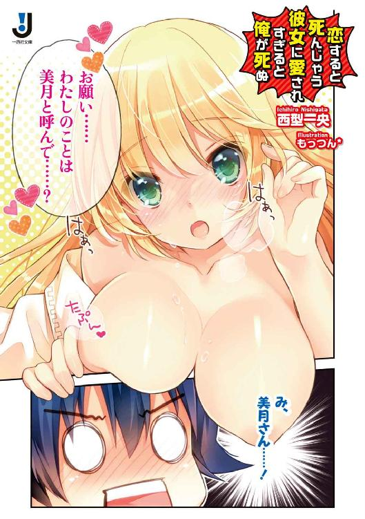
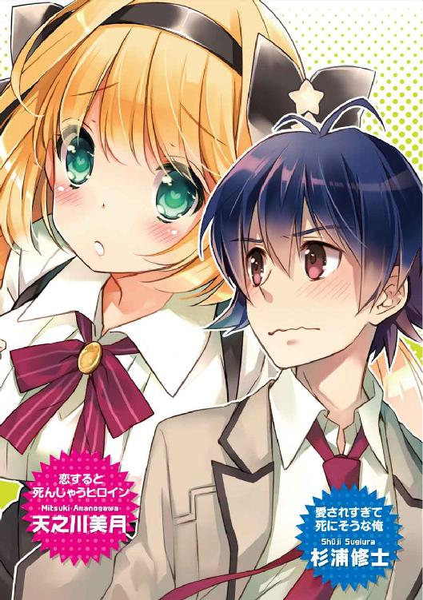
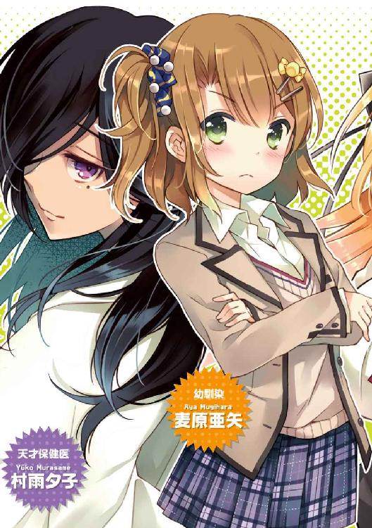
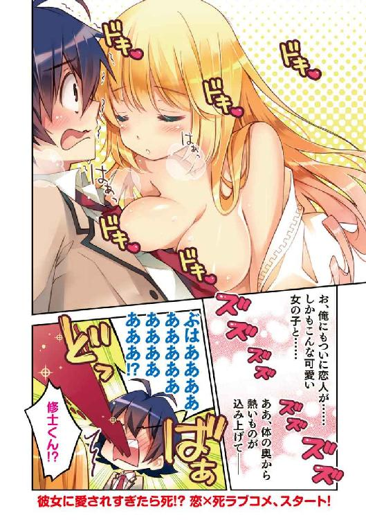
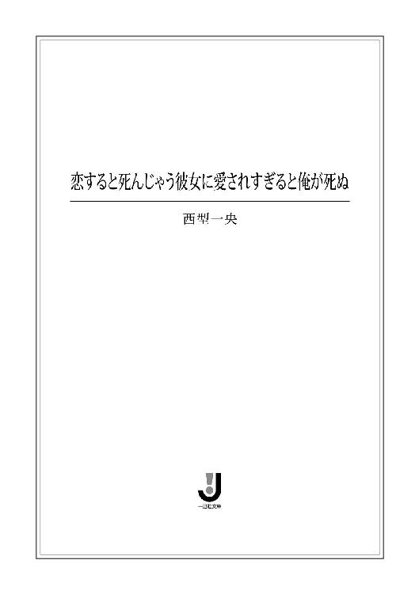
挿画：もっつん*
デザイン：ナカムラナナフシ（ムシカゴグラフィクス）
高校一年目も終盤に差しかかった、一月中旬の金曜日。
その日、最後の授業の体育を終えて教室に戻ってきた俺は、自分の机に伏すなり、そのまま眠りこけてしまった。
千五百メートルの長距離走。
今日は朝から黙々と雪が降ってたもんだから、きつかった。
冷たい風が吹きすさぶ雪の中を走るなんて、一体どこの荒行だよ。
前の晩、無駄にネットで夜更かしして、寝不足気味だったのも、かなりこたえた。
お陰で、掃除も帰りのホームルームもスルーしてしまうほどの大爆睡......。
そんな俺がようやく目を覚ましたのは、人気の消えた放課後だった。
「さむっ......!?」
震える体をさすりながら起こし、「ふああ......」と大きく欠伸しながら、すぐ脇の窓ガラスを閉める。
寝ぼけ眼に映るのは――オレンジ色の光に包まれた夕空と、校庭にうっすらと積もった雪。もう雪はやんでいた。
放課後の教室は静まり返っている。
いつもは部活や居残りの生徒たちで騒がしいはずなんだけどな。
......そういや、今日は大事な職員会議があるって言ってたっけ。だから、生徒は早く下校するようにって、確か朝のホームルームで......。
「だから誰もいないのか......」
「誰もいないなんてことは、ないんだけどな」
突然、声が飛んできた。
「うおっ!?」
慌てて振り向くと、俺の後ろの席に座っていたクラスメイトの天之川美月さんが、片手を口元に添えてクスクスと笑っていた。
「そんな大袈裟に驚かなくてもいいのに」
「あれ、天之川さん？ いたんですか？」
「うん。ずっとね」
たおやかに笑う彼女。ふんわりとした長い髪がかすかに揺れた。
「――君の寝顔に、見とれてたの」
彼女は頬杖をつきながら、俺の顔をまっすぐに見つめる。
「え......？」
動揺した俺は、彼女から目が逸らせなかった。
ワケわかんないっす......。
何せ、彼女とは今までまともに会話をしたこともなかったし、そんな冗談を言う子かどうかすら、わからなかったから。
そんな俺を見て、天之川さんはまた、クスッと笑った。
――天之川美月。
『姫君』なんてたいそうな愛称で呼ばれ、学校中の男子女子、ひいては教職員からも慕われている美少女。
実家は千年ほど前、俺たちの住む遠野森一帯を牛耳っていた豪族の末裔であり、日本でも有数の名門、天之川家。この学校を創設した理事でもある。
勉強は全国トップクラス。立ち振る舞いは優雅にして、凜とした雰囲気を持つ、絵に描いたように完璧なお嬢様だ。
しかし俺たち一般庶民と一線を画すオーラを纏いつつも、彼女は自分の特別さを鼻にかけるようなことはしない。誰にでもほんわかした笑顔で明るく接する。
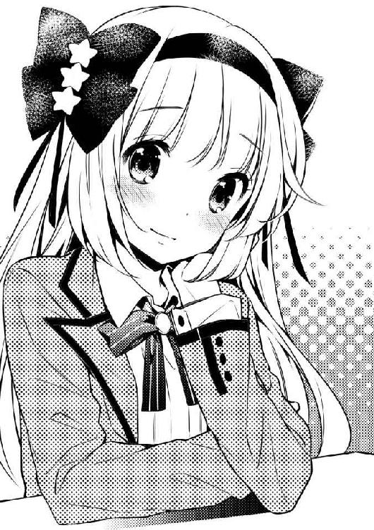
だから、いつも人に囲まれているし、自然と周りに輪ができる。
きっと、みんなに愛されるべくして生まれてきたような人だと思う。
さて、そんな天之川美月さんが、「一人だけ」のこの状況は、相当稀有なことだ。
まして放課後は、すぐに迎えのメイドが現れて、さっさと帰っちゃうのがいつものパターンだったはず。
「珍しいですね、天之川さんがひとりで学校に残ってるなんて」
「さっきまで、体調が悪くて保健室にいたの」
そういや天之川さんって、保健室の常連なんだっけ。生まれつき体が弱いとか、耳にしたことがある。
そんな薄幸っぽいところも『姫君』らしいんだけど。
「大丈夫ですか？」
「今は楽なの。さっきまでは、呼吸をするのも辛かったんだけど......教室に戻ってきたら、嘘みたいに軽くなったわ」
と、姫君は目を細める。
「修士くんの、お陰かもね」
「え......」
「本当なんだよ？ 君の顔を見たら、ものすごく楽になったんだから」
俺はますます戸惑った。
どういう意味だろう――まあ、天之川さんに、そう言われるのは悪い気しないんだけど......。
「ねえ、修士くん」
姫君は胸に手を当てて、目を閉じると、すーっと息を吸い込んだ。
それから、きゅっと制服の胸元をつかむと、真剣な眼差しになった。
「――わたしね、ずっと......ずっと前から、伝えたかったことがあるんだ」
「伝えたかったこと？ ずっと前から？」
なんだろ。俺の貧乏ゆすりが気になるとか？
「あ、あのね」
珍しく言葉を詰まらせた。
「天之川さん？」
「――ごめん。やっぱりなんでもない」
天之川さんは、ぱっと目を伏せると、首を横に振った。
それから、慌てたようにポケットからスマホを取り出し、画面を確認した。
「迎え、来たみたいだから、わたし、帰るね！」
机の脇のカバンをつかみ、立ち上がった彼女が、一瞬、足元をふらつかせた。
慌てて彼女を支えようと、腕を伸ばす。
が。
「大丈夫」
笑顔で制された。
「それじゃ、さようなら。修士くん」
「――あ、はい。えっと、また明日」
やっぱり体調が優れないのか、姫君は心なしか力ない足取りだ。
教室を出る時、彼女が一瞬だけ振り返った。
夕日のオレンジに照らされた彼女は――美しく、微笑んだ。
でもその笑顔は、どことなく寂しそうで......。
彼女が去った後、俺はなんとなく気になって、窓から校庭を見下ろしていた。
メイドさんに肩を支えられた天之川さんが歩いていく。
校門で待っていた黒塗りのリムジンのドアが開き、後から走ってきた保健医の村雨先生と一緒に乗り込んだ。
なんでわざわざ村雨先生も？ そんなに調子が悪いのかな。
......と思っているうちに、リムジンは静かに学校を後にする。
いろいろなことに釈然としないまま、俺は下校の身支度を済ませ、
「――早く良くなるといいけどな」
そう呟き、教室を後にした。
そして天之川さんは、次の日から姿を見せなくなった。
賑やかな放課後。
俺は一人何をするでもなく、スマホのアプリゲームをたまにポチポチしながら、校内を歩いていた。
別にぼっちってわけじゃないけど、俺の放課後は暇だ。
友達のほとんどは部活だし、かといって家に帰って勉強する気にもなれない。
特に打ち込んでるものや趣味もない。
校庭では野球部やサッカー部が、大きな声を張り上げている。
横ぎった教室から、コイバナらしき話題で盛り上がる女子たちの笑い声が響く。
鞄を担いだ男子たちが「ゲーセン行こうぜ」なんて話しながら、俺の横をすり抜けていく。
いつもの放課後。
けど最近――俺はちょっとした変化を感じていた。
なんとなくこの学校全体から、ハリのようなものが失われている気がするのだ。
理由は――天之川さんがいないから。
あの人はこの学校の『姫君』だ。
遠野森高校の生徒たちがみんな、なんとなく意識している存在。
それが急にいなくなると、違和感のようなものがある。
実際、俺自身がそれを感じている。
俺とは接点もなさすぎて、クラスメートの可愛い女子ぐらいにしか思ってなかったけど......やっぱり何か、大きなものが欠けてしまったような感覚だった。
天之川さんと最後に話した、あの放課後があったからかもしれない。
あれから一週間が過ぎている。
担任は体調不良だって言っていた。元々体が弱い彼女だから、何日も休むことだって、あり得るのかもしれない。
でも、何かが引っかかる。
あの日の天之川さんは、やっぱりいつもとちょっと違っていた。
......あの時、天之川さんは俺に、何を言おうとしてたんだろ？
「ねえ、修士！」
後ろから俺を呼ぶのは、聞き慣れすぎた声。
「なんだよ」
振り向くと、そこには冬だってのに、半袖のＴシャツにハーフパンツの少女が、タオルで額の汗を拭いていた。
麦原亜矢。
肩まで伸びたサイドテールがトレードマークの、俺の幼馴染。
向かいの家に住んでいて、幼稚園からいつもクラスが一緒なのだ。
「むっ、なんだよって何よ！」
腰に手を当てたまま、グッと迫ってくる。
「何か用事か？」
「あんたに用事なんてないわよ」
「じゃあ声かけんなよ......」
いつものことながら、こいつの絡み方って、よくわかんないんだよな。
ちなみに、こういう態度、俺以外には絶対しない。
明るくて気さくだから話しやすいと、一部の男子には人気があるみたいだけど。
「――む、ちょっと動かないで」
そう言うと、亜矢はじろ～っと俺を上から下、下から上へと眺め回す。
「......顔色、悪い」
「そうかな？」
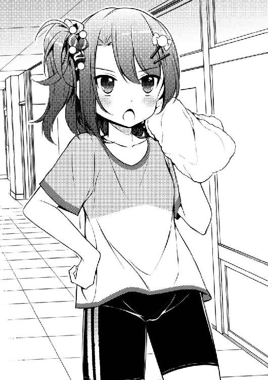
「目にはクマ、顎のしたには小さなニキビが。他にも..............................」
長々と健康診断的なことを言われ、途中から聞くのがめんどくて流した。
「まったく、夜遅くまでえっちな動画でも見てたんじゃないの？ ちゃんと野菜食べてるの？ こたつで寝たら風邪引くんだからね？」
まるでオカンのように口うるさい。
「おじさんとおばさんがいなくなった途端にこのザマとは、やっぱりあたしがチェックしないとダメねー」
フフンと、なぜか得意げに胸を反らせる亜矢。
威張れるほどの胸じゃないと思うんだけど......なんてツッコミは口が裂けても言えない。マジで殺される。
「今回の仕事、長いんでしょ？」
「あー......、テレビの取材で、シルクロードを歩いて踏破するとかって企画だって。下手したら、数年帰ってこれないらしい」
「すごいじゃん！ さすが一流の旅行ジャーナリストだね」
「こっちも結構大変なんだよ、掃除とか洗濯とか。メシだってスーパーの見切り品で節約してるし」
「なるほど、じゃあそんな修士に、スーパースペシャルなプレゼントをあげる」
「何？」
「パパが、今日から毎日、ウチの店でご飯済ませなさいってさ」
「え、マジ......？ なんか悪いな、いつも」
俺の両親は仕事柄、ちょくちょく家を空けることが多い。
そんなわけで、俺は小さい頃から、洋食屋を営む麦原さんとこにお世話になっていた。
つまり、そこの娘さんが亜矢で――まあ、半分家族みたいなもんだ。
「遠慮なんかいらないわよ。パパはなんならいっそ、ウチの子になってもいいってさ」
「お断りします」
「なんでさ？」
「いや、だってそれ、俺がお前の弟になるってことだろ？」
「......弟......」
憮然とする亜矢。
兄って言ってほしかったのか？ どっちにしても嫌だけど。
「口うるさいし、絶対毎日いびられるだろ。そんな姉ちゃんいらねーよ」
「......ふーん」
亜矢は普段はくりっとした大きな瞳を、まるでナイフのように尖らせて、俺を睨んでいた。
あれ？ 怒ってる？
「なんで怒ってんだよ？」
「修士のドアホ！」
――バキッ！
脳天にチョップをぶち込まれた。
「いてーな！」
「べーっだ！」
ガキかよ。
と、その時――。
ピンポンパンポーン♪
頭上のスピーカーから緊急の呼び出しを告げるチャイムが鳴り響いた。
『保健医の村雨だ』
冷徹な声が轟いた瞬間――
学校全体が、一瞬にして静まり返った。
俺も亜矢も、立ち話をしていた女子たちも、プロレスごっこに興じていた男子たちも、みんな、凍りついた。
村雨夕子先生。
遠野森高校勤務の若き保健医。
だが、それはあくまで表の姿。
その実態は、この世界に存在するあらゆる病を治すことができると噂される、天才医術師だ。
時々、大型の高級車や、ヘリや自家用ジェットまでもが、学校の校庭に彼女を迎えに来る。
背後には大きな支援者がいるらしく、保健室も研究のためのラボに改装されていた。
そこでせっせと新しい薬の開発に着手しては、保健室を訪れた生徒たちを実験台として使う、めちゃくちゃな保健医なのだ。
その村雨先生がなぜうちの高校の保険医なんてやってるのかは謎だったが、かくいう俺も、彼女のせいで臨死体験をさせられたことがある。
あれは、何も知らない、入学したての頃。
風邪で熱っぽかった俺は、疑うことなく手渡された薬を飲んだ。すると、たちまち意識を失って、なんとかの川を見てしまった。
去年死んだばあちゃんが手招きしていたのだ。
「なあに、心配するな。一瞬心拍が停止しただけだ。ちょっと強すぎる薬だったかもしれんな」
意識を取り戻した俺を見て、村雨先生は満足そうに笑った。
マジでぞっとした。
ちなみに風邪は一瞬で治った。そればかりか数ヶ月、俺の体調は生まれ変わったかのように絶好調で、むしろ風邪を引く前より元気になったのだが......まあ、とにかく、この学校に通う者は、得体の知れない村雨夕子という保健医に恐怖を抱いているのだ。
だから、みんなこの瞬間、
――呼び出されるのが自分じゃありませんように。
と、心の中で必死に祈っていた。
もちろん、俺も。
亜矢は俺に身を寄せ、ブレザーの袖をつかんでいる。
『一年Ｃ組の杉浦修士。三分以内に保健室に来るように』
....................................。
「俺？」
慄き固まる俺に、周辺の生徒の視線が集まる。
亜矢に至っては、泣きそうになりながら俺を見つめている。
『もし、遅れるようなことがあったら、私が暇つぶしに生み出した、新種のウイルスを学校中にばらまく――以上』
ピンポンパンポ～ン♪
「お、おい、杉浦！ 早く行けって！」
「そ、そうだよ！ 私たち、まだ死にたくない！」
「お前一人が生け贄になれば、みんなが、今日を、明日を、平和に生きられるんだ」
「ありがとう！ 杉浦君！ 私、君のこと忘れない！」
わいのわいのと押し寄せる生徒たち。
亜矢を押し退け、俺を壁際に追い詰め、取り囲んだ。
すがるように俺を見つめるその瞳からは、生きたい――という、命ある者たちの切なる祈りが込められていた。
「わ、わかった。行くよ、行きますよ！ 行けばいいんだろ？」
取り囲む人々は「それでよし」と、一斉に大きく頷いた。
コンコン。
「あの、杉浦ですけど」
「入れ」
粗野な声が返ってきた。
はぁ～......と、溜息を零しながらドアを開ける。
「うわぁ......」
見渡す限り、ケーブルと、よくわかんない機械で埋め尽くされた、真っ白で無機質な部屋。
近未来ＳＦ映画のラボって感じだ。
前に来た時よりも、更に設備が充実してる気が......。
「ちゃんと時間内に来たようだな」
椅子に腰掛けた村雨先生が、ニコリともせずに俺を睨みつけた。
左右で色の異なる二つの瞳。
長い前髪の間で見え隠れしている右目は、『神秘の黒曜眼』と呼ばれていて、その瞳の力で、どんな病気なのかやその対処法も「診える」という噂だ。
どんな異能設定だよ。
「ど、どうも......」
軽く会釈しつつ、俺は目のやり場に困った。
この保健医、見た目がエロすぎなんだよ！
切れ長の瞳、泣きぼくろに、濡れた唇。メロンサイズのメガバストはブラウスの隙間から今にも弾け出そう。短いスカートからは、黒タイツのむちむちした太ももが、惜しげもなく覗いている。
性格がアレでなければ、さぞモテクイーンとして君臨していたことだろう。
「早速だが、お前に問いたいことがある」
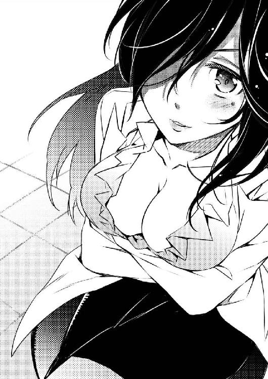
「な、なんですか？」
俯いたまま、ゴクリと唾を呑み込む。
「王子様の前に、呪いをかけられて死にかけているお姫様がいる。お姫様を救うことができるのは、王子様の愛だけだ。さて、その王子様はどうしたと思う？」
「へ？」
心理テストか？
「いいから答えろ！」
「は、はい！ えっと......王子様は、お姫様を愛した......んじゃないでしょうか」
「ふむふむ」
満足そうに頷く村雨先生。
「ところで、お前のクラスに天之川美月がいるな」
なんでいきなり天之川さんの名前が出てきたんだ？
「彼女のこと、どう思っている？」
「ど、どうって......みんなの憧れの姫君だし、その、可愛い子だな、と思いますけど......」
「そういうことじゃない！ 好きなのかどうかと聞いてるんだ！ はっきり答えないと......」
ポケットから、スっと注射器を取り出し、意味ありげにちらつかせてきた。中の液体は怪しい紫色をしている。
「す、好きです......！」
「おお！ そうか、好きか！ うんうん。それなら、話は早い！」
上機嫌そうに目を細めた村雨先生は、突然立ち上がり、部屋の隅にあるカーテンのかかったベッドに近づいた。
そして――カーテンに手をかけ、勢い良く払い除けた。
「――っ......！」
そこには、身動き一つせずに眠る『姫君』がいた。
白い襦袢。閉ざされた目蓋。枕の上に広がる長い髪。小さな朱い唇。儚げなほど白い肌......。
「天之川さんっ!?」
ベッドの傍らに置かれた大きな機械から伸びたコードが、体中の至る所につながれ、口は呼吸器で塞がれている。
心電図っぽい機械の電子音と、呼吸器から酸素を送り込むしゅこーという音が、無機質に響いていた。
「こ、これは一体......？」
「さあ、今すぐ美月を抱き締めるんだっ！」
「――はい？」
「何をボサっとしている！ 早くしろ！ 今は生命維持装置のお陰で辛うじて命を取り留めてはいるが、もう何日も昏睡状態で、予断を許さぬ状況なのだぞ！」
「ちょ、ちょっと待ってください！ 全っ然！ 意味がわからないんですけど！」
「杉浦、貴様、さっき私が出した質問を思い出せ」
「王子様が云々ってのと、天之川さんをどう思うかってやつですか？」
「つまり、そういうことだ」
まるで説明になってねぇ！
「どういうことですか？」
「ええい、鈍感な奴め！ 仕方がない、単刀直入に言うと、美月はお前を愛しているのだ！」
はぁ――――――？
「しかもそのせいで美月は死にかけているのだ！ さあ王子様、責任を取れ！ お前の愛のすべてを込めて美月を抱き締めるのだ！ そして、死の病に冒されたプリンセスを救えっ！」
......天之川さんは俺のことが好き？
......天之川さんが死にかけているのは、俺を好きになったから？
......俺に抱き締められると、命が救われる？
「考えるな！ さあ、愛のままに！ ぎゅーっと！」
村雨先生は腰をくねらせ、自分の体をぎゅーっとハグする。
「いきなり、そんなこと言われても......」
「好きな女を抱き締めたくないのか？ まさか、さっき好きだと言ったのはウソだったのか？ お前はゲイなのか？」
「ノーマルです！ 理由が分からないって言ってるんですよ！」
「なんて面倒くさい奴なんだ！ 愛の前に理由はいらない！ これだから非モテは！」
村雨先生は眉間に手を当てて首を振った。
「ああ、くそ！ まったく、時間が惜しいというのに！ 仕方がない、どうやら、説明した方が早そうだ！」
最初からそうしてください。
「――天之川美月は、『恋死病』に冒されているのだ」
「......コイシビョウ......？」
「ああ」
苦々しげにそう呟くと、村雨先生は眠り続ける天之川さんの髪を、そっと撫でた。
「その字のごとくだ。この病を発病してしまった人間は、恋愛感情に対する不安によって、命の危険に晒される。想い人に愛されていると感じていれば健康でいられる。しかし愛されていないとか、この恋は成就しないとか、恋に対する不安を抱いてしまうと、症状は悪化し、最悪死に至る......そういう恐ろしい病気なのだ」
下唇を噛み締める村雨先生。
その様子からは、冗談で言ってるようには見えない。
だけど、あまりにも突拍子がなさすぎる。
だいたい、好きとか嫌いで人が死ぬだなんて......。
「そんな病気、聞いたことないんですけど」
「知らないのも無理はない。何しろこの病は、天之川家の直系、更に極々一部の人間にしか発病しない特殊な遺伝病だからな」
「遺伝病、ですか？」
「そうだ。遥か昔より現代に至るまで、天之川一族を苦しめ続けてきた病だ。この土地の支配者であるという立場もあり、彼らはこの病を隠匿し続けてきた。故に、未だこの病は世間には知られていない。研究は進んでおらず、治療法も確立していない」
村雨先生は静かに続ける。
「私がこの遠野森の地にやってきたのは、五年ほど前だ。世界を放浪していた私の前に、美月の父親が現れ、あの子を救ってほしいと懇願された。謎の遺伝病に惹かれた私は、すぐさま承諾した。そして、美月の主治医となったのだ」
「え、村雨先生と天之川さんは、元々知り合いなんですか？」
「ああ、昔からの友人だよ」
「私が保健医をやってるのも、天之川の配慮によるものだ。美月に何かあった時、すぐに対処できるようにとな」
ちょっと驚いたけど、言われてみれば、生徒がこぞって保健室を避けるのに、天之川さんはなんの抵抗もなく利用してたっけ。
「そ、そうだったんですか......」
「とはいっても、恋死病に関しては私も無力だ。あらゆる病の特性と、その治療法を導き出すはずの『神秘の黒曜眼』で診察しても、何も浮かんでこない。ひょっとしたら病気ではなく、呪いの類なのかもしれん」
サラッと超非科学的なことを言ってますけど......。
「怨念や恨みが人を病に臥せさせることがないとも言いきれまい。何年研究を進めても、この病気をどう治療すればいいのか、未だに答えが出ないのだからな」
村雨先生はデスクの上に置いてあった、ぶ厚い紙の束を取り掲げた。
ボロボロの表紙に、ボロボロの紙が紐で括られ、纏められている。
「千年以上にも渡って、天之川家の主治医を任された者が受け継いできた『恋死病録』。その名の通り、恋死病に関する大変貴重な記録書だ。未だ私は、これに頼るしかない――」
村雨先生は、悔しそうに目を眇めながら、恋死病録をパラパラとめくり、あるところで手を止めた。
「美月を抱き締めろと言ったな。あれもここに書いてあることだ。恋死病患者は、相手に抱き締められることによって、病状を回復することができる――と。杉浦、私には美月を救うことができない。それができるのは、美月に想いを寄せられているお前だけなのだ！」
ビシっと村雨先生が俺を指差した。
「最初は恋人のフリでもいい、とにかく美月を助けてやってく――」
ピピピピピピピピピピピピピピピ――――!!
「うわっ!?」
心電図っぽい機械が、いきなり激しく鳴り出した!?
「くっ、なんということだ！ 様態が急激に悪化している！」
先生が呼吸器を取り払い、彼女の体と計器を素早くチェックする。
くったりと力なく横たわり、浅い息を吐く天之川さんは、弱々しく、痛々しかった。
「いいから考えるのは後にしろ！ 美月の命がかかっているんだ、頼む！」
「わ、わかりました......っ！」
慌てて俺は、動かない彼女の体の下に手を入れ、引き寄せ――
彼女の体を起こし......そっと、抱き締めた。
壊れそうなほど、華奢な身体。
冷たい体、浅い呼吸。
本当にこのまま死んでしまうんじゃないか、と怖くなる。
「天之川、さん......？」
その時――不思議な感覚がした。
――どくん。
「......ぐっ......」
俺の心臓が、一瞬、大きく跳ねた。
これは、一体......と動揺したその時。
「――......あ......」
胸元に、ささやかな吐息がかかった。
「......天之川さん？」
彼女を両腕で抱え直す。
ぐったりしていた天之川さんの体がピクリとかすかに動き、瞳がゆっくりと開いた。
「――......しゅ、修士くん......？」
「天之川さん......！ 目が覚めたんですね？」
「この状況は、一体......？」
瞬きを繰り返す姫君。
白い頬にぽーっと朱が滲み、小さい唇がぱくぱくと開く。
「な、なんで!? なんでわたし、修士くんの腕の中にいるの!?」
「えーっと、これは......」
「どけ！ 杉浦！」
バキッ！
「ぐわっ！」
猛然と突っ込んできた村雨先生に突き飛ばされ、ベッドから転げ落ちる。
「美月！ 目を覚ましたのか？ どうだ？ 苦しくはないか？」
「村雨......」
きょとんとした顔を浮かべる姫君。
「――ううん、少し体の中が熱いけど、苦しくはないわ」
「一応聴診しておこう――それじゃ、上を脱いで」
は？
「うん」
ガバッ！
って、いきなり脱いじゃったよこの子！
俺は慌ててカーテンの外に出る。ぶっちゃけ、ちらっと見えてしまったんだけど......。
「どれどれ？」
「ひゃんっ、冷たい！」
ペタペタという音と、「はぁん」「ふぁあっ」「ひゃん」と、悩ましげな声が響く。
「うむ！ とりあえず、今のところは問題なさそうだ。いや、本当にどうなるかと思ったぞ。何しろ心臓が停止しかけていたんだからな」
村雨先生がバサっとカーテンを開けると、すでに天之川さんは服を着ていた。
「――わたし、全然意識がなくて......」
「ずっと昏睡状態だったからな。今は素直に、命を取り留めることができたのを喜ぼう」
「......村雨の医術は通用しなかったのに、わたしが助かったのは......」
「............」
俺の方を見やる村雨先生。
天之川さんも俺に視線を向ける。
「も、もしかして......」
「ああ。そのもしかしてだ。私は、『恋死病録』に記述されていた方法を試した」
「修士くんに、病気のこと話したのね？」
「ああ、すべてな」
「ということは......修士くんは、わたしの気持ちを、聞いてしまったの？」
震える瞳が俺を見つめた。
「えっと、は、はい......」
「いやぁ！ ちょっと、村雨～！」
真っ赤になってシーツに突っ伏す天之川さん。服は景気良く脱ぐのに、そこは恥じらうんだ......。
当の保健医は、いつの間にかベッドから離れ、入口の戸に手をかけていた。
「しょ、しょうがないじゃないか。お前の命がかかってたんだからな。でも、そのお陰でお互い気持ちをわかり合うことができたんだ。いやぁ、実に喜ばしい！ お、そうだ。このことを天之川家に連絡しなければ！ というわけで、二人はゆっくり語らうがいい。お邪魔虫は一時的に退散するとしよう。では、さらば！」
「ま、待ってよ！ 村雨っ！」
バタン。
保健医はそそくさと去っていった。
取り残された、俺と天之川さん。
不意に視線が重なり、お互いに逸らしてしまう。
うっ......なんか気まずい。変に緊張する。
「――ねえ、修士くん......聞いても、いい？」
と、天之川さんが口を開いた。
ベッドの上を見ると、ちまっと正座していた。
「は、はい......？」
「わたしを、抱き締めてくれたんだよね？」
「そ、そうです。えっと、なんていうか......ごめんなさい」
「謝らないで。そのお陰で、今、わたしは生きているんだから......」
潤んだ瞳で見つめてきた。
「えっと、それで......修士くん、あの......――」
もじもじしながら、真っ赤な顔で俺を上目遣いに見やり、
「わたしのこと、好きっ？」
ストライクゾーンど真ん中に棒球ストレートを投げ込んできた！
俺は動揺しつつも、一つ呼吸を置き、一塁側に送りバントを試みるような気持ちで、
「――もちろんです」
と、答えた。
正直なところ、俺の中に天之川さんの告白に応じられるほどの気持ちがあるかと言われれば、首を捻らざるを得ない。
だが『恋死病』なる奇病に冒されてしまった彼女を救うために、とりあえず俺の答えはイエス以外にないだろう。
「こんな病気のわたしでも？」
「はい」
次の瞬間――彼女の瞳から、一筋の涙が零れた。
それを拭いもせず、姫君はただ、微笑む。
「ああ......わたし、生まれてきてよかった」
......可憐だった。
とてつもなく、綺麗で、可愛かった。
この子が、俺のことを好きだなんて、マジかよ。
俺に、こんな幸運が巡ってくるなんて。
体の奥底から、熱いものがこみあげてくる。
まるで、俺の中で何かが目覚めたかのように。
視線が絡み合い、どちらからともなく手を伸ばす。
当たり前のように触れ合う、二人の手......。
頭がくらっとした。
と、その時――。
「はあぁん！」
突然、天之川さんが声を上げて仰け反った。
「ど、どうしました？」
「ああん！ わ、わたしのっ......わたしのラブアンテナが......きゅんきゅんしてるの！」
意味不明なことを言われた。
「ラブアンテナがきゅんきゅん？」
しかし、姫君は答えず、ガバッと立ち上がると......、
しゅるり。
なんの躊躇もなく帯を緩めた！
「さあ、修士くん、わたしと恋人の契りを結びましょう！」
「は？ ちぎり？」
いやいや。待て待て。
「ちょ、ちょっと待った！ ここ学校だし、っていうかそういうのはまだ早いのでは!?」
俺は彼女の手をつかみ、進行を止めた。
「わたしとじゃ、イヤ？」
悲しそうに見つめられた。
「そういうワケじゃなくて......」
「それじゃ、どうして？ ......ああっ！ む、胸がっ............苦しい......」
「天之川さん!?」
突如、崩れる姫君。
すさかず彼女を抱き止めた。
「なっ......」
体が異様に冷たい。
顔色も見る間に青白くなっていき、呼吸も荒い......。
......もしかしてこれ、恋死病の症状なんじゃ......。
今、俺が彼女を拒んだから？ このままじゃ死んでしまう？
「お願い......正直に言って......本当は、わたしのこと......愛してないの？ わたしを助けるために、嘘をついているんじゃ......？」
信じていたものを失ったかのような、悲しい声音。
......そうだ。
姫君を救うには、俺の愛を信じてもらうこと以外にない。
俺はよろめく彼女の肩を引き寄せ――力強く抱き締めた。
そして、
「そんなはずないじゃないですか！ 俺は天之川さんのことが好きです！ 大好きです！ 心から愛しています―――――――――――――ッ」
愛を叫んだ。
「本当の、本当に？」
力強く頷いて見せる。
しおれた花が、生命力を取り戻して再び咲き誇るように、天之川さんは、ぱあっと微笑んだ。
「あ、天之川さん......」
「お願い、美月って呼んで......」
「み、美月さん......」
「ああ、修士くん......」
ドキドキが止まらない。
名前で呼び合うなんて、まるで恋人同士みたいじゃないか。
いや――俺と美月さんはもう、恋人なんだ。
そうか......俺にもついに恋人が......。
胸の奥から、じんわりと温かな気持ちが溢れてくる。
それはまるで、世界を作り替えてしまうような温もり。
――そうか、これが「愛」か。
生まれて初めての感覚だ。
ああ、愛が胸からこみあげてあふれ――
「ごぶふぁあああああああああああああああああああああああああああああああああああああ!!」
俺は盛大に、吐血した。
◆◆◆
「ううっ......」
目覚めると、俺はベッドの上に寝かされていた。
「安心しろ。保健室だ」
冷たい声。
首を動かすと、村雨先生がいた。
「驚いたぞ。連絡を終えて戻ってきたら、二人とも仲良く倒れていたのだからな」
倒れていた？ 二人仲良く？
「美月さんは？」
慌てて体を起こし、周りを見回してみる。
しかし、彼女の姿はどこにもない。
「......美月さんは......どうしたんですか？」
「天之川のメイドを呼び出して、自宅に運んでもらった。安心しろ。美月はびっくりして気を失っていただけだ。命に別条はない。お前とは違ってな――」
そう言って、村雨先生は顔をしかめた。
――俺とは違って？
ふと、俺は自分の胸元に視線を落とした。
真っ赤だった。
「そうだ......俺、血を吐いたんだ......なんで？」
「杉浦......落ち着いて聞いてほしい。お前は伝説の奇病『女死病』にかかってしまったようだ」
「え？ 『じょしびょう』？」
「ああ。私の右目が、そう言っている」
そう言うと、村雨先生は、左目を閉じ、深く透明な紫色の右目で、俺をじっと見つめると、うむ......と一言呟いた。
「ど、どんな病気なんですか......？」
「......女死病はな、女子耐性の極めて低い非モテの男子が、身分不相応な高嶺の花的少女と急激に親しくなってしまうことで、体が耐えられずに拒否反応を起こすという......まあ、言ってしまえば、異性アレルギーなのだ」
「は？ 異性アレルギー？」
「お前の体が、美月の魅力に耐えられなかったということだな」
嘆かわしいと言わんばかりに、目を伏せる村雨先生。
......何だろう。病気自体もショックだけど、プライドもダメージを負った。まあ確かに俺は非モテだけど、だからってそりゃないだろ。
「そして、その症状だが――」
ぎゅうっ！
いきなり抱き締められた。
「村雨先生!?」
あのスーパーボディが俺にピッタリ密着している！ 美月さんとはまた違った圧力が！
「むっ！ そろそろだな」
そう言うと、村雨先生は花火の導火線に火をつけて避難するかのごとく、素早く俺から離れた。
一体どうしたんだ――おや、何か熱いものが、俺の胸からこみあげ――
「ぶああああああああああああああああ！」
血が！ 血が、俺の口から！
「と、このように、女子に抱き締められるなど、直接的接触があると、強烈な拒否反応を起こすのが女死病だ。ちなみに、反応の度合いにはちゃんと段階があってな。目安としては――手をつなぐと吐き気や頭痛。抱き合うなど密着した場合、吐血。キスなどすれば、生死の境を彷徨うかもしれん。それ以上は、即死――といった具合だから、覚えておけ。おっと、吐血も繰り返せば、出血多量で命に関わるからな」
血の気が引いた。
「そ、そんな......治る方法は？ あるんですよね？ 治療法は？」
村雨先生は、沈鬱な表情を浮かべると、椅子に乱暴に腰掛けた。
「残念ながら、女死病もまた、治療法が確立されていない。恋死病ほど稀有ではないにせよ、奇病であることには変わりないからな。強いて言うなら、女子から隔離された環境で生活することだ。例えば、人の寄りつかない山奥、秘境、無人島、修行僧の寺や男子校の寮等が、療養には最適である」
「それだと俺と美月さんは、離れ離れにならないといけないってことじゃないですか。美月さんはどうなるんですか」
「案ずるな。そもそもお前には美月の命を守る義務がある。療養のためなんかで隔離などしない」
「なんか」って言い方、気になるな。
「じゃあ、美月さんには女死病のことをわかってもらって、症状が起きないよう、二人でやっていけってことですよね」
「それは駄目だ」
「なんで!?」
「馬鹿者！ 美月は優しい子だ。このことを知ってしまえば、杉浦を死の危険にさらしてまで自分が愛されるわけにはいかないと思うに違いない。この恋は叶ってはならない――そう思い込んでしまうことは、恋死病患者にとって最も危険な状態だ。どんなに想い人が愛を説いても、自らその愛を拒んでしまうことになりかねん」
村雨先生の顔は真剣だった。
「もちろんこのことを知っているのは私だけだ。天之川家にも伏せておく......杉浦よ、恋死病の研究ついでに女死病の治療法も、この私が必ずや確立させてみせる。だから、それまでの間、女死病のことは美月に隠して、あの子の想いに応え続けろ。わかったな？」
「............」
事実上、俺の選択肢は一つしかないわけだ。
美月さんを死なせたくはない。
だけど、俺だってこんな変な病気で死にたくなんかない。
そもそも、俺が女死病で先にノックアウトされたら、その時点ですべて終了だ。
そうならないためには、あくまで美月さんとは清い交際をし続けなくてはならない......ってことか。
なんかこう、俺の命が軽んじられている気がしないでもないけど、美月さんをなんとかできるのが、俺しかいないんだから、他にどうしょうもない。
......まあ、あんなに可愛い姫君に惚れられて、恋人になれたんだ。
ちょっとくらいリスクがあっても仕方ない。
いやぁ、俺の人生にもついに春が来たんだなぁ......。
と、無理やり思うことにして、
「――わかりました」
俺はビシッと頷いてみせた。
「そうか。ありがとう、杉浦。美月の友人として、深く感謝する」
そう言って、頭を下げる村雨先生。
「というわけで、早速だが――」
保健医は瞬く間にいつもの不敵な笑みにチェンジして、パチンと指を鳴らした。
と――。
バタン！
ドダダダダダダダダダダッ！
保健室の扉が開き、天之川家のメイドさんと思しき方々が雪崩れのように突入してきて、あっという間に俺を囲んだ！
「あ、あの！ む、村雨先生？ これは一体――」
「やれ！」
メイドのお姉様方が一斉に襲いかかってきた。
一瞬で手足を縛られ、目隠しされ、口に何か詰められて、ズルズル引きずられていた。
俺、これからどうなるの......？
「えーっと......？」
俺は自分の状況をつかみかねているところだ。
保健室になだれ込んできたメイドのお姉様たちにもみくちゃにされて、気がついたらこんなざまだった。
まず、俺の身なり。
和服。
テレビとかで見たことある。めでたい時に着る紋付袴ってやつだ。
次、俺のいるこの場所。
宴会場みたいなだだっぴろい畳部屋。横を見れば、絵に描いたような日本庭園が広がっている。
俺の背後には金色の屏風があり、真紅の『寿』の字。
「一体、ここは......」
考えられるのは、ここが天之川家のお屋敷ではないかということだ。
遠目からしか見たことないけど、街外れのとんでもなく広大な敷地に建っている、お城みたいな家屋がそれだ。
だけど、一体なんのために？
バアンッ！
「ええっ!?」
突然、勢い良く襖が開いたかと思ったら、お嫁さんが現れた!?
十二単の真っ白バージョンみたいな着物を身に纏っている。
「修士くんっ!! 会いたかった......！」
「み、美月さん？」
お嫁さんは美月さんだった。
「ラブアンテナがきゅんきゅんするから、もしかしてと思って来てみたら、やっぱり......！」
またしても美月さんはよくわからないことを言うと、
「会いたかった......はぁはぁ......」
息を切らせて、よよよと、襖にもたれるようにして崩れた。
「だ、大丈夫ですか？」
俺が駆け寄ると、姫君はちょっと膨れた顔で、
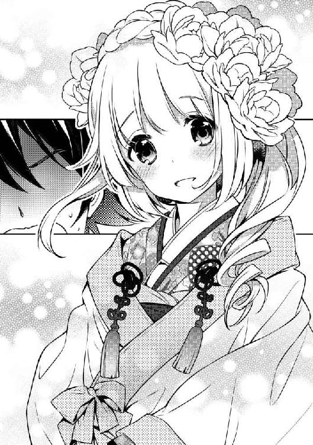
「大丈夫ですかはこっちのセリフだよ！ さっき修士くん、血を吐いたでしょう？」
そうだった。
うーん、どう説明したらいいんだ。女死病のことは知られるわけにいかない。
なんとか、上手いこと言い逃れないと......
「......あ、さっきのあれは......えーっと、鼻血！ うん鼻血！ そう鼻血です！ もう、血を吐いただなんて大げさですよ。鼻血ってクセになるんですよね！ 俺って興奮すると鼻血が多めに出ちゃう体質で、それが口から逆流しちゃって！」
「鼻血......？」
きょとんとする美月さん。
「いやぁ～、美月さんの魅力に興奮してしまって、つい！」
「やーん、もぅ！ 修士くんってばえっちなんだから！」
どうやら、ごまかすことができたみたいだ。
「それはともかくとして、どうしたんですか、その格好？」
姫君は、頬を朱く染め、ツンツンと両手の人差し指をつつく。
「えへっ♪ 修士くんも素敵だよっ、その紋付袴。気のせいか、なんだかわたしたち、まるでこれから結婚するみたいだね？」
「結婚？」
何やら重々しい響きの単語を俺がリピートしたその時、またしても襖がバーン！ と開いた。
「いやぁ、はっはっは～！ 君が修士くんかね？ よく来たよく来た！ ふむふむ、実物を見るとなかなかいい男ではないか！ 美月よ、見る目があるの～！」
「ふふふ......わたくしの娘ですから、当然でございますわ」
「フォッフォッ、天之川の人間になるんじゃからのぅ、よろしく頼むぞ」
「わんわん、わおーん」
異様な風格を放ちまくる戦国武将みたいなおっさんが一名、花魁みたいに色っぽい、煌びやかな着物を着たお姉さんが一名、絵本とかに出てくる魔法使いみたいな黒いローブを着た背の低いばあさんが一名、そして白くてばかでかい犬が一匹いた。
なに？ この劇団みたいな人たち。
「はっはっは～！ 大切な一人娘を救った命の恩人をどうしても早く見たくてな。つい、いてもたってもいられなくて、来てしまったのだ」
戦国武将は、ギラっと鋭い目付きで俺を睨みつつ、ぐいぐい迫り手を握ってきた。
「天之川邸にようこそ！ 儂は美月の父、第九十九代目天之川家当主、天之川政虎である！ 遠慮なく『お父さん』と呼んでくれたまえ！」
やっぱりそうなのか......。
「あなたが修士さんね、はじめまして」
そう言って、微笑を向ける花魁のお姉さん。
「美月の母、天之川美雪ですわ。わたくしのことは『お母さん』と呼んでいただいても宜しくてよ」
あまりにも若々しいから、てっきりお姉さんかと思っていた。
「それじゃワシは『終焉と漆黒の大魔道士・ババ様』とでも呼んでもらおうかのぅ、フォッフォッ」
遊●王のレアカードかよってツッコんだ方がいいのかな。
「えっと......はじめまして、杉浦修士です」
俺がぎこちなく挨拶すると、
「んもう！ いきなりだから修二くんが固まってるじゃない！ わたしから、ちゃんと紹介するって言ってたでしょ？」
そう言って、プイっと顔を背ける美月さん。
だけど......両手をほっぺに当てて、ものすごく嬉しそうだ。
「わん、わおん！」
でっかい犬が、美月さんに訴えかけるように吠えた。
「え、うんうん？ トランプも自己紹介したいって？」
美月さん、犬と普通に会話してますけど。
「えっと、この子は、わたしの親友のトランプ！ 子どもの頃から一緒だから、今じゃ、お互いに何を考えてるのか、なんとなくわかっちゃうんだ」
「へ、へえ......」
「わおわおーん！」
「ありがとう、トランプ！ この子『おめでとう』って言ってくれてるわ！」
そう代弁（？）しながら、トランプの耳をくすぐる美月さん。
「そ、そっか。さんきゅーな」
トランプはのしのしと近づいてきて、くんくんと俺の匂いをかぎ始めた。
見た目は凶暴そうで怖いけど、意外と人懐っこい感じだ。
「わうわうっ！」
頭を撫でてやると、嬉しそうに尻尾を振っている。
「わっはっは！ いや実に、微笑ましい光景だ」
「ええ、本当に。もう若夫婦のようね」
「フォッフォッ。お爺さんとのお見合いを思い出すのぉ」
そう言いながら、トランプをあやす俺と美月さんに目を細める、美月さんの両親とおばあさん。
これが日本有数の名家、天之川家か。
随分浮世離れした人たちだな......。
用意された大きな卓を前に腰を下ろした。
上座に俺と美月さん。向かい側にお父様とお母様。右隣におばあ様。左隣にはトランプ。
ここが天下の天之川邸の客間だっていうのはわかった。
そんなところで、俺は初めてできた恋人の家族と対峙している。
当然、緊張しないわけがない。
横の美月さんをちらりと見ると、彼女はにこにこと微笑んでいる。
天之川美雪さんことお母様が、ス......と真っ白い紙と万年筆を一本差し出してきた。
「特に深い意味はないのだけれど、二人ともここに名前を書いてくれないかしら？」
紙は何枚か重ねられていて、空欄が二つあった。
「――はい」
二つ返事で、サラサラと自分の名前を記入していく美月さん。
さすが姫君、すごく達筆な字だった。
「どうぞ、修士くん」
受け取ったペンを走らせようとした、その時。
ズレた紙の下に何か見えた。
「え？」
目を疑った。
『婚姻届』って書いてあったような......。
俺は確認しようと紙に手をかけた。
ビュンッ！
風を切る鋭い音が響き――俺の首元に日本刀が突きつけられていた！
片足をテーブルに乗せ、天之川政虎氏が抜刀していた。
「はっはっは。難しいことは考えずに書きたまえ。君の名前を、その空欄にな」
相変わらずニコニコしていたが、目は笑ってなかった。
「お父様、手荒な真似はやめてください！ ね、修士くんも困ってるよねっ？」
美月さんが制止する。
しかしチラチラッと俺の手元を見ている顔は、完全に期待の眼差しだった。
「い、いや、あのですね。俺はまだ十六歳ですし、まだ結婚できる歳じゃ......」
「はっはっは。修士くんは、そんなことを気に病んでいたのか。心配しなくてもいい！ 婚姻届は君が十八歳になるまで、きちんと宝物庫に保管しておくつもりである。そうそう、君のご両親からもちゃんと合意を貰っているから、安心してサインしたまえ」
な、なんだって......!?
固まる俺をよそに、お父様は見事な手付きで刀をおさめ、パチンと指を鳴らした。
ウィーン。
天井からスクリーンが下りてきた。
畳の一角がパカッと開いて、プロジェクターが出てくる。
部屋が暗くなって、映像が流れ始めた。
『修士、元気かーい？』
『結婚、おめでとう！』
親父とおふくろは、見たこともないほどの満面の笑みで手を振っている。
『父さん、びっくりしてるよ。修士にそんな相手ができただなんて』
『母さん、アンタには一生そういう相手ができないと思っていたから嬉しくて。アンタみたいな甲斐性なしと一緒になってくれる子なんて金輪際現れないんだから、大切にするんだよ』
『現在ゴビ砂漠を横断中だから、日本に帰るのは、まだまだ先になると思うけど、また会える日を楽しみに待っています』
『『それじゃ、お幸せに～』』
ビデオレター風でセリフ口調なところが、妙にイラっときた。ラクダに乗って手なんか振ってやがったし。
「我々がスポンサーになると申し出たら快く了承してくれた」
......そういうことか。あいつら息子を放り投げすぎだろ。
「素敵なご両親だねっ！」
「どこがですか！」
「......修士くん、どうしたの？ 何か......怒ってる？」
悲しそうな顔を浮かべて凍りつく姫君。
し、しまった。つい両親への苛立ちを八つ当たり気味にぶつけてしまった。
「......もしかして、修士くん。わたしと結婚するの、いや......？」
「いや、そういうつもりじゃなくって――」
「でも、ご両親にも祝福されてるのに、全然嬉しそうじゃないわ......サインも......したくなさそうだし......ああっ......む、胸が、苦しい......！」
「美月、どうした！ しっかりしろ！」
「ああ、どうして、どうして美月ちゃんがこんな不幸を背負わなければならないの！」
「ご先祖様、どうか、どうか孫娘をお助けくだされ！」
「わおーん......！」
天之川一家の悲痛な叫び声がだだっ広い空間に響き渡る。
「イヤじゃないです！ 全然イヤじゃないです！ ごめんなさい、俺男のくせに、マリッジブルーになっちゃってたんです！ でも今目が覚めました！ 俺、美月さんと一緒になりたいです！ 結婚したいです！ ほら、見てください！ さらさらさら～！」
サインした。
「修士くん、嬉しいっ！」
即座に回復し、微笑む美月さん。
「これでわたしと修士くん、許嫁になったんだね！」
「そ、そうですね」
笑顔で見つめ合う俺と美月さん。
そんな俺たちを取り囲む天之川一家は、パチパチパチと拍手をした。
「「「「おめでとう！ （わおーん！）」」」」
「ありがとう！ わたし、幸せすぎてどうにかなっちゃいそう！」
美月さんは、すでにどうにかなっちゃってるような気がしないでもない。
「――フォッフォッ、そろそろ夕飯にしましょうぞ。今晩は、ワシが腕によりをかけて作らせた、新婚さん向けの膳じゃぞ」
おばあさんがパンッ、と手を叩くと、あっという間に大人数のメイドさんたちが現れ、運んできた料理をテーブルの上に並べていった。
「おおっ！ この料理は！」
「ええ！ わたくしたちが結婚した日に振る舞っていただいたものと同じですわ！」
「その通りじゃ。これこそ、千年前から天之川に伝わる『授けの膳』。これを食べれば......フォッフォッフォ」
「確かにあの日はアレで......はっはっは！」
「もう、あなたったら、そんな昔のナニを、うふふふ......」
目の前に並べられた料理は、確かに豪華そのものって感じだ。
「ささ、冷めないうちに、早く！」
言われるままに箸をつけようとする。
巨大なうな重に、すり下ろされた山芋、にんにくの丸揚げ......スッポン鍋？
妙に精のつくものばっかりだな。
「ねえ、修士くん」
くいくいと俺の袖を引っ張る美月さん。
「なんですか？」
「えへへ......えっとね」
姫君は俺の耳元に手を添えて言った。
「頑張ろうね！」
よくわからないまま、とりあえず俺は頷いた。
「あ、はい」
「も～！ 修士くんの、えっち！」
なんでだ。
完食した。
残しちゃ悪いなと思って頑張ったけど、マジで腹いっぱいだ。
なんだか体がぽかぽかとあったかい。
......あ。そういや、亜矢んとこのおじさんに、飯食いに来いって言われてたんだ。明日、謝りに行かないとな......今何時だ？
そろそろ、帰らないと。
「あの......今、何時でしょうか？」
携帯は制服と一緒に取り上げられていたから、今の俺に時間を知る術はない。この部屋にも時計らしきものはなかった。
「ん？ ちょっと待ちなさい」
そう言うと、政虎氏は胸元から懐中時計を取り出し、
「おや、もうこんな時間か――そうだな、修士くん、これから帰るのもなんだし、今晩は泊まっていきなさい。ウチの風呂はすごいぞ。そこらの温泉にだって負けとらん。遠慮せずゆっくり堪能したまえ。はっはっは！」
「あ、でも着替えとか、明日の学校の準備が――」
政虎氏の手が刀の鍔にかかったのを見て、俺は黙って頷いた。
どうやら、今日は天之川邸にお泊りしなければならないようだ。
カポーン。
湯船につかる俺。
いやぁ、すごい。
政虎氏のおっしゃる通り、本当に温泉って感じだ。
今俺が入っている泳げそうなくらいでっかい湯船は総檜で、他にもジェットバス、滝が落ちてくる風呂、薬湯に水風呂にサウナもあって、高級な健康ランドみたいだった。
そんな豪華すぎる浴室に圧倒されつつ、俺は心身の疲れを癒やしているのだった。
いや～、今日は信じられないような出来事の連続だったな。
告白されたり、病気になったり、婚約しちゃったり......正直頭がついていかない。
ガラリ。
入口の戸が開く音。誰か入ってきたみたいだ。
湯気の向こうから、ヒタヒタと足音が迫ってくる。
政虎氏かな？ でも影が一回り小さいような――
「背中、流してあげるね！」
「み、美月さんっ!?」
短襦袢だけを纏った姫君。
髪を下ろした彼女は、桶を抱えてにっこりと微笑んだ。
「いや、いいですよ。それくらい自分でできますから」
「遠慮しちゃだめっ！ 奥さんの仕事だもん。だから、やらせて！」
う......断ったら断ったで、さっきみたいに病気が発症するかもしれないしな......。
「そ、それじゃお願いします」
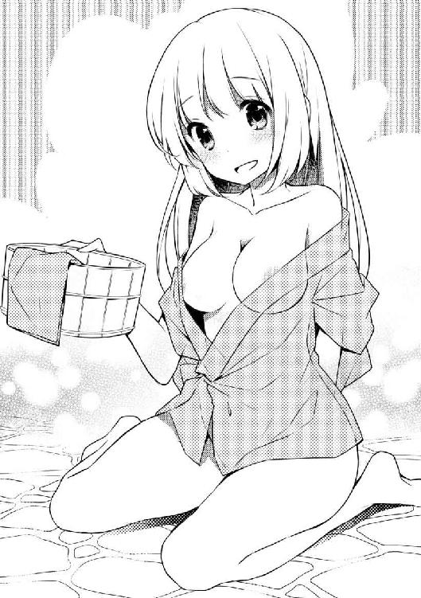
「うん、任せて任せて！ 肌が真っ白になるくらいピカピカにしてあげる！」
俺はタオルで股間を隠しつつ湯船から上がり、シャワーの前に置いてある小椅子に腰掛ける。
背中を正し、美月さんを待った。
「それじゃ、行きま――きゃっ！」
ガシッ。
いきなり美月さんが俺の背中に抱きついた。
むにゅう。
素晴らしすぎる感触に、胸の奥からパトスが溢れて――
「ブッハッアアアアア！」
吐血した。
「ご、ごめん！ 修士くん！ わたし、足を滑らせちゃって、つい！」
まるで、湯船にお湯を吐き出すライオン像のように俺は口から血をどばどばと流していた。
こ、このままこれが続いたら死んでしまう！
「交代しましょう！」
「ええっ!?」
「えっと、俺が、洗いますから！」
俺は素早く美月さんの背後に回った。
「えっ!? 修士くんがわたしを？ わたしの......体を？」
ぽーっと顔を赤くする美月さん。
なんだか嬉しそうだ。
「で、では、よろしくお願いします！」
そう言うと、美月さんは襦袢の襟元に手をかけ、ためらいなく、すーっと脱いだ――。
ミルク色の泉が、俺の目の前に現れた。
波紋一つの揺らぎもない、美しい肌。
つい引き込まれて溺れてしまいそうな――それほどまでに、美しい背中だった。
いかん。本当に鼻血が出てしまいそうだ。
つーか、咄嗟に体を洗うなんて言っちゃったけど、どうしよう......。
「そ、それじゃ。い、いきます」
「――初めてだから、優しくしてほしいな」
「わ、わかりました」
俺は目を瞑り、お湯を浸したタオルを広げ、ボディソープを泡立てる。
そして、決して彼女の体に直に触れないよう気をつけながら、姫君の背に両手を置いた。
「あっ......」
美月さんが切なそうな声を上げ、背中がぴくんと動く。
「大丈夫ですか？」
「ん......全然平気」
ゆっくりと、優しく首から腰の辺りへと、タオルを撫でた。
「んあっ......」
逆走する。美月さんがびくびくっと動く。
「ふぅっ......」
もう一度、首から腰へ。びくびくっ。
「ああっ......」
......俺、何やってんだろう。
「えっと、だ、大丈夫ですか？」
「うん、修士くんの思うままに、動かして。わたし、それを受け止めたいの......」
ちょっと言ってる意味がわからなかったが、少しだけ力を強く込め、もう一度上下運動に入ろうとした。
が、その時。
「あっ......」
うっかりタオルがズルっと滑ってしまい、彼女の脇の下にタオルが入ってしまった！
「はあああああああああああああああんっ！」
瞬間、美月さんの身体が、びくーん！ と弾けるように跳ねた。
「み、美月さん!?」
慌てて目を開くと、姫君はあられもない姿で椅子から滑り落ち、タイルの上に倒れている。
桃色に染まった表情は、妙に艶めかしく微笑んでいて――
つーか、気失ってる!?
「ちょ、だ、誰か！」
脱衣所を飛び出した俺は人を呼び、姫君の介抱を頼んだ。
現れたメイドさんが、美月さんの様子をチェックしたところ、
「ご安心ください。どうやら、姫様は少しのぼせてしまったようでございます。修士様、なかなかやり手でございますね」
と、意味ありげな笑みを浮かべた。
美月さんは火照りを沈めなくてはならないということで、天之川のメイド隊に運ばれていってしまった。
俺も気がかりだったけど、
「どうぞ先にお部屋でお待ちください」
とメイドさんに案内されるまま、後ろをついていった。
「今夜は、ここでお休みくださいませ」
そう言って一礼すると、メイドさんは口に手をあて、むふふと笑って去っていった。
何かを期待されているっていうか、下世話な雰囲気を感じつつ、俺は襖をガラッと開けた。
「!?」
視界に飛び込んできたのは、小綺麗な広めの和室。
しかし部屋の中はピンク色の照明に照らされ、部屋の真ん中ではでっかくて丸いベッドがゆっくりと回転している......って、完全にラブホテルだよ！
「ここでお休みくださいって......やっぱり......」
足を踏み入れた俺は、ベッドを前にたじろいだ。とりあえずボタンを押して回転を止めてみた。
すると――
「修士くん......」
背後から、しっとりとした声。
振り向くと――真っ白な着物を着た美月さんが、部屋の入口に立っていた。
「み、美月さん、もう大丈夫なんですか？」
それには答えず、美月さんはゆっくりと、歩を進める。
「わたしのラブアンテナが告げているの。今こそ一つに結ばれる時だと......」
姫君はそう言うと、しゅるっと帯に手をかけた。
「――恥ずかしいから、先にお布団に入って、向こうを向いてて」
「......は、はい......」
俺は言われるまま、布団にもぐり込む。
えっと......結ばれる時――つまり『そういうこと』だよな。でも、この体でそんなことをしてしまったら......。
俺は唐突に思い出した。
キス、生死の境を彷徨う。それ以上、即死。by村雨夕子
――俺、死んじゃう!?
ファサっと美月さんの着物が床に落ちる音。
ゆっくりと近づいてくる気配。
そっと布団が持ち上がり――俺はぎゅっと目を瞑った。
ど、どうすればいいんだ!?
ここで拒否したら、美月さんの発作がまた起きてしまう。
しかしこのままだと俺の命が危ないことは明白！
「――ま、待ってください！ まだ、心の準備が......！」
叫びもむなしく、背中にのしかかってくる感触。
「ああっ......！」
いきなり、ぺろりと耳を舐められた。
温もりのある軟体物は、さらに俺の頬を、顎を、そして唇を、蹂躙するかの如く這っていく。
ぺろぺろぺろぺろぺろ！
まさか、こんなにすげえ勢いで？
でも......なんだか気持ちいい。このまま一生ペロられていたいほどだ。
こんなに情熱的に攻められたら、俺......！
「だ、だめです！ 美月さん！」
快楽を振りきらんと、目をぎゅっとつぶったまま、彼女の体を押しとどめようとした。
ん？ 触り心地がやけにもじゃもじゃしているな。この感触はまるで、アニマルと言っても過言ではないほどの――
「っていうか犬だ――――ッ!?」
「んも～！ トランプったら、めっ！ 修士くんを気に入ったのは嬉しいけど、わたしから修士くんを取らないで！」
「がるる～ん」
がばっと布団をはねのけると、美月さんと飼い犬のトランプが、仲良さそうにじゃれあっていた。
考えてみれば、美月さんにやられてたら、今頃生死の境を彷徨ってるはずだもんな。
「トランプはそこで大人しくしててね」
「くぅ～ん......」
トランプは言われるまま部屋の隅で、その身を伏せた。
「さあ、修士くん......今こそ、愛の契りを......！」
美月さんが、ベッドに腰掛け、見つめてくる。
目を閉じ、濡れた小さな唇が迫り――
「――ちょっと待ってください！」
俺は、美月さんを鋭い声で制止した。
「......どうして？」
みるみる悲しそうに、目に涙を溢れさせる姫君。
「わたしと契るのは、いや......？」
この事態を打開できる策はないのか？
俺はなけなしの頭脳を振り絞り――
「――み、美月さん、よく聞いてください！ そうじゃないんです。俺の愛は本物です！ 嘘じゃありません！ だからこそ――きちんとあなたと契りたいからこそ、こういうことは、結婚してからにしたいんです！」
「え......？」
その表情は戸惑いに彩られていたが、まだ恋死病の症状は起きていない。
これなら、いける！
俺は、彼女の瞳をまっすぐに見つめ返した。
「ただ体の一線を超えただけでは、本当に契りを結んだことにはならないと思うんです。美月さん、俺はあなたと今日恋人になったばかりです。だからもっと時間をかけて二人の愛を育てて紡いでいきたいんです！ そしてその果てに真実の愛と共に結ばれたいんです！」
一気に言いきった。
「ああ、修士君......！」
美月さんは、うっとりとした表情を浮かべて、俺を見つめていた。
「そこまで、わたしのことを大事に考えていてくれたなんて......それなのにわたしときたら、なんてはしたないの......！」
「......わかって、くれますか？」
「うん、間違っていたのはわたしのほう。修士君の言う通り、真実の愛で結ばれなければ意味がないわ。わたしのラブアンテナ、きゅんきゅん......いいえ、ものすごくギュンギュンしてる......」
美月さんは感極まったように、口元で手を合わせている。
「......わたし、君を好きになって良かった......」
よし、なんとか回避できたみたいだ。
安堵の溜息が出ると同時に――ちくり、と少し胸が痛んだ。
俺の愛は、本物です。
嘘じゃありません。
真実の愛と共に結ばれたいんです――か。
我ながら、よくそんなことが言えたものだ。
半分は、美月さんのため。でも、半分は自分の命が惜しいから。
......なんだか、少し後ろめたい。
けど、落としどころとしては......今は、これしかない。
それに俺は、ずっと気になっていたことを確かめたかった。
「あの、美月さん......聞いていいですか？」
「なに？」
「どうして......俺なんですか？」
どうして俺なんかのことを、好きになったんだろう。
俺なんかより、イケメンで、頭も良くて、運動もできて、性格もいい奴なんていっぱいいる。
俺と美月さんは同じクラスだっただけで、特別な接点があったわけでもない。
会話だって、あの放課後が来るまでは、ほとんどしたことがなかったはずだ。
「――やっぱり、修士くんはわたしのこと、覚えてないんだね」
寂しげに目を伏せる姫君。
「どういうことですか？」
「わたしたち、会ってるんだよ。五年前に」
「五年前......小五の時？」
当時の記憶を探ってみる。
だけど、心当たりがない。
美月さんみたいな印象的な人に、一度会ったら忘れるはずないと思うんだけど。
「人違いなんじゃないですか？」
「ううん。絶対、君だよ」
「全然思い出せな......って！ うお！ いたたっ！ トランプ、何すんだよ！」
「わおんっ！」
いきなりトランプに甘噛みされた。
「こら！ トランプったら！ おいたしちゃだめ！ こっちに来なさい！」
姫君に頭をぽんと叩かれると、巨大犬はブフッと不満そうに息を吐いて、美月さんの肩に寄りかかった。
「そっか......この子のことも覚えてないんだね」
そのばかでかい犬、美月さん以上に覚えていない自信がある。
「――それじゃ、昔話をしてあげる」
そう言うと、美月さんはトランプの喉をくすぐる。
そして――そっと大切なものを置くように、俺との出会いを語り始めた――。
◆◆◆
「......今練習している曲、一六小節目でいきなり曲調が変わるんだ。今週までにそれができないといけないんだけど、ボク、まだ全然だめだめなの。困ったなあ」
「きゃうん」
相槌を打つように、トランプが鳴いた。
小毬のように可愛い、美月のたったひとりの友達。
お稽古事で埋め尽くされた毎日は、窮屈以外の何物でもない。
それでも将来、必ずお前の役に立つから――と力説する両親に言われるまま従っていた。
そのせいもあって、美月は学校で浮いていた。
みんなの話題についていけてないのだ。
アニメや漫画、テレビドラマなどは両親から厳しく禁止されていたし、アイドルのことも、ゲームのことも知らない。
放課後、みんなとおしゃべりしたり、遊んだこともほとんど、ない。
学校から帰ると、日替わりでピアノにヴァイオリンに書道、お花やお茶の先生が待っている。
けれど、美月はどちらかというと不器用な方で、どれも満足にこなせなかった。
誰にも言えない心のうちを話せるのは、トランプだけ。
散歩の時間だけが、美月がほっとできる、唯一のひとときだった。
「――あ、あの子、またいる」
近頃、散歩コースの途中、河川敷にある鉄橋の下で、自分と同じ歳くらいの男の子が一人で野球の練習をしている。
ピッチャーがボールを投げてくるのを待っているかのように構えて、
「――さあ、試合は大詰め！ 今日一番の痺れる場面を迎えました。九回裏ツーアウトランナー満塁！ カウントはツーストライクスリーボール！ 一発が出れば逆転サヨナラ満塁ホームランというこの場面。バッターは四番・スギウラ！ ピッチャー振りかぶって......投げた！ かきーん！ 打った打った！ 大きい！ これは大きい！ 入った！ 入りました！ サヨナラ満塁ホームラン！」
声を張り上げて、大きくガッツポーズ。
野球をよく知らない美月には、何を言ってるのかいまいちピンとこない。
それでも、楽しそうにしている彼の姿が、なんだか面白くて。
今日も土手に腰掛けて、トランプと一休みしながら、彼を眺めている。
その日は、雨が降るかもしれないからトランプの散歩をメイドに任せなさいとお母様に言われたが、美月は断った。
空には灰色の厚い雲がかかっていたけど、その隙間から覗く夕焼けを見ると、そこまで心配するようなことではないと思えたのだ。
散歩の時間はせいぜい三十分。
仲俣川の土手まで行って、少しの間トランプを離して遊ばせ、戻ってくるだけだ。
仮に途中で降られても、すぐに戻れる。
土手に腰掛け、リードを外してやると、トランプは勢い良く駆け出した。
時々立ち止まり、こっちを見て、また走り出す。
あの子は少し臆病だから、あまりわたしの傍を離れたがらない。だから、そんなに遠くに行くこともない。呼べば必ず戻ってくる。
美月はいつものように、野球少年の一挙手一投足に目を向けていた。
ゴロゴロゴロ......
「あ......」
遠雷の音と共に、ポツンと鼻先に水滴が一つ落ちてきた。
「雨......降ってきちゃった」
帰らなきゃ。
しかし、その時。
「――きゃっ!?」
巨大な雷鳴と共に、稲光が走り抜け、美月は思わず耳を塞いだ。
「......トランプ！ 帰るよ！ 戻ってきて！」
声を張り上げた。
「......トランプ？」
慌てて土手を見回すが、仔犬の姿はない。
「トランプ......！ どこ!?」
いつもなら、一目散に駆け寄ってくるはずなのに。
頭上で不穏に鳴り響く雷の音。
大粒の雨が、強く、ゆっくりと降り始める。
「ど、どうしよう......」
不安が膨らみ出す。
まさか、川に落ちちゃったんじゃ。
慌てて土手を駆け下り、川の方へ駆け出した。
足がもつれて転んだ。
「......トランプ......！」
手と顔をすりむいた。じんわりと目に浮かんだ涙をぬぐって、起き上がろうとした時。
「おい、どうした？」
見上げると――あの少年が、上着を頭にかぶりながら、立っていた。
「トランプがいなくなっちゃったの！」
「トランプ？」
「ボクの友達！」
「は？ 友達？」
「子犬！」
「あー......あれ、お前の犬だったのか？ ちゃんとつないどけよ。さっきの雷に驚いて、あっちの方に走ってったぞ」
少年が河川敷沿いの道を指差す。
「......トランプ......！」
立ち上がろうとすると、ズキっと足首が痛んだ。くじいたのかもしれない。
「......痛っ......」
よろめいた身体を、少年の腕がつかんだ。
「お前、怪我してるじゃん」
そう言った少年は、少し逡巡した後、
「......ったく、しょうがねえな......」
そう言って、背中を向けてしゃがんだ。
「トランプ～！」
「もっとでっかい声で呼べ！」
「トランプ！ 戻ってきて！」
スコールみたいな土砂降りの中。
美月は少年の帽子と上着をかぶせられて、彼の背中に乗っていた。
大声でトランプの名を叫ぶ。
もしかしたら。
もしも......もう会えなくなったら。
心が重くなっていく。
涙が零れた。
「......どうしよう、あの子に何かあったら......ボクのせいだ。あの子、まだ子供なのに。それなのに、ちゃんと見てなかったから......」
「大丈夫、絶対この辺にいるって」
「でも......」
「今頃どっかに隠れて、お前のこと待ってるって。いいから泣き言言ってる暇があったらもっとでっかい声で名前呼んでやれよ」
荒い息を吐きながら、そう言った。
「うん......」
「諦めんなよ」
「うん......！」
河川敷の道は、霧がかかったように霞んでいる。
雨の音にかき消されないよう、美月は声を張り上げた。
資材置き場に差しかかった時――。
弱々しい犬の鳴き声が、聞こえた気がした。
「トランプ......？」
「こっちか？」
積み重ねられた角材や鉄骨の間を抜け、その向こう、ピラミッド状に積まれた土管。その下段の真ん中奥。
覗き込むと――そこにトランプはいた。
ほっとして、涙が出そうになる。
「出ておいで！」
しかし、トランプは動こうとしない。小さくうずくまったまま、ブルブル震えていた。
「お前はここで待ってな。俺が連れてくる」
少年は美月を下ろすと、体を屈めて土管の中へと這っていった。
「うーっ！ きゃん！ きゃん！」
「ちょ、落ち着け！ 俺はお前を助けにき――いでええええええええっ！ おいこら！ 噛むな！ 引っかくなっ！」
土管を覗き込むと、少年に抱き締められたトランプが全力で抵抗している。
「ご、ごめん！ 言い忘れてたけど、トランプって、ボクに近づく人を追い払うよう育てられてるの！」
「いだだだだ！ 早く言えよ！」
彼は土管に頭をぶつけながら、涙目で這い出てきた。
同時に大事な友達が、美月の胸に飛び込んでくる。
「......大丈夫？」
トランプを抱き締めながら彼の顔を覗き込んだ。
「いや、いてーよ」
少年は、トランプにあちこち引っかかれ、土管で打った頭をさすっている。
「......これ、ありがとう」
上着と、借りていた帽子を差し出すと、彼はぶっきらぼうに受け取った。
と、その時――帽子のつば裏に書かれた文字が目に入った。
『杉浦修士』っていうんだ。
すぎうらしゅうじ。
すぎうら、しゅうじくん。か。
その響きを、何度も心の中で呟いた。
胸の奥が、じんわりと温かくなる。
頭がボーッとする。
心臓が、ドキドキとうるさい。
......風邪、引いちゃったのかな？
「おまえ、顔赤いぞ？」
そう言って、いきなり彼は美月の頬に手を当てた。
雨に濡れた冷たい手。
それなのに、彼に触れられたところが、熱い。
夕立がすでにやんでいたことにも、しばらく気がつかなかった。
「じゃー、またな」
『すぎうらしゅうじ』くんは、そう言って、雨上がりの河川敷の道を歩いていく。
「ありがとう」
美月はその後ろ姿を、ずっと見送った。
何気なく彼が言った「またな」が、嬉しかった。
明日もまた会えるといいな。
また、会いたいな。
――だけど、その願いは叶わなかった。
美月は、家に帰るとすぐ、胸の痛みと高熱で、一週間も寝込んでしまった。
眠りと覚醒が断続的にやってくる中、美月は何度も『すぎうらしゅうじ』くんと、あの鉄橋の下で再会する夢を見た。
そして、ようやく少し体調が回復した美月は、トランプの散歩どころか、外出も禁止されることになってしまった。
こっそり何度か、あの鉄橋へ行ってみたことはある。
けれど、そこに彼が現れることは、もうなかった。
いつか、あの夢が本当になったらいいのに。
思い出は、誰にも話すことなく、そっと胸の奥にしまわれた。
それが美月の初恋で――同時に『恋死病』発症のきっかけだったと知ったのは、ずっと後のことだ。
◆◆◆
「え？ あの時の子が美月さん......？ 全然、気がつかなかった......」
思わず飛び上がってしまいそうだった。
もちろん、おぼろげながら、俺はその時のことを覚えていた。
けど......トランプはもちろん、あの時のあの子と、今目の前にいる美月さんは、とてもじゃないが同一人物とは思えない。全然違う。
何よりも......。
「わたしは、すぐに修士君だって気がついたけどね。忘れもしないわ。あの桜の花びらが舞う入学式の日......君を見かけた瞬間、ラブアンテナがきゅんきゅんしたんだもの！ 案の定、同じクラスになった君の名前を見て、運命の存在を確信したわ」
「......そうだったんだ......ごめん、全然思い出せなくて」
「ううん、気にしないで。だって、わたしあの時、ショートカットだったでしょ？」
「つーかボクって言ってたし、格好も女の子っぽくなかった」
ぶっちゃけ男子だと思ってた。
顔は女子みたいに綺麗だし、声が少し高いなとは、思ったけど。
「......あの頃はお父様やお母様にそうしなさいって言われてたから」
なんでだろう。
あ、姫君に悪い虫がつかないようにとか、そういうことかな。
美月さんは、大人しくお座りしていたトランプに寄りかかり、目を閉じる。
「......あの時ね、トランプがいなくなって、不安で、怖くて、どうしようもなかった。でも、『諦めるな』っていう言葉に勇気を貰えたの。それからずっと、いやなことがあっても、辛くても、頑張れた。頑張ってたら――いつか、君に会えるんじゃないかって」
俺は、苦笑した。
「......俺、そんな偉そうなこと言えた奴じゃないんですよ」
「どうして？」
「だって俺、あの時、部活サボってたんですよ。下級生にレギュラー取られちゃって......それでいじけてサボってただけなんです。結局、部活には戻ったけどレギュラー取れないまま野球もやめちゃったし......ダサいですよね」
「......ううん、ダサくなんかないよ。今のわたしがいるのは、君と会えたからだもん」
そう言うと、姫君は目を閉じたまま、優しい微笑を浮かべた。
「美月さん......」
美月さんと俺は、確かに昔、出会っていた。
そして『恋死病』になったのは、きっと、それがきっかけだった。
美月さんは、純粋に俺のことを好きでいてくれている。
けど......俺はどうなんだ。
もちろん彼女の気持ちは嬉しい。
美月さんは、可愛いと思うけど......。
......いや、待て。好きとか嫌いとかそれ以前に、美月さんは俺に愛されているって思ってなきゃ死んじゃうわけで......。
でも俺には病気があるわけで......。
俺、美月さんの気持ちに応えられんのか？
俺は、この人とどう向き合えばいいんだろう――
「..................あれ？」
トランプに寄りかかったままの彼女から、かすかな寝息が聞こえる。
「............」
俺はそっと、彼女に布団をかけ、しばらく姫君の寝顔を見つめていた。
「――ふぅ、長い一日だったな......」
家の近くまで来ると、俺は大きく深呼吸をした。
今日は土曜日で、学校はない。
今朝も、いろいろと大変だった。
昨日と同じ大広間で、鯛のおかしら付き、金粉のかかった蟹汁など、朝っぱらから豪華絢爛な食事が用意されていたのだが......
「......ごほん......で、どうだったんだ修士くん、そのしょ、しょ......」
「まあ！ あなたったら、そんなことを聞くのは野暮ですわ」
「フォッフォッ......思い出すのぅ、御祖父さんとの初夜を」
はっきり言っちゃったよ！
「もう、おばあ様ったら......うふふ」
特に否定もせず、顔を赤らめる美月さん。
天之川家の面々だけでなく、メイドさんたちまでみんなが、ワクワクテカテカな感じで俺と美月さんを見ている。
まだ何もしていないってのに......。
今日も泊まっていけと言う政虎氏や、期待の眼差しで俺を見る美月さんを説得するのにも苦労した。
「俺も杉浦家の長男ですから、家を守らなくちゃいけないんです！」
と、渋々政虎氏に帰宅を承諾してもらった。
下手するとこのままずっと天之川家に軟禁されそうだからな......。
今日はのんびり休んで、頭の中を整理したい。
月曜日からは、美月さんもちゃんと学校に通えそうだって言ってたけど、学校でもアマデレに絡んでくるんだろうか？
なるべく彼女との接触を避けつつ、ド直球な求愛に応え続けられるか自信がない。
美月さんを『姫君』と奉ってる学校の連中の反応も怖いし、いろいろと面倒くさそうな予感しかしない。
そんなことを考えつつ、俺はようやくたどり着いた我が家の前で、ポケットから鍵を取り出した。
と――
「こらぁ！ 修士いぃぃぃぃ――ッ！」
頭上から雷が落ちた。
「うわぁ......亜矢......」
向かいの家の二階の窓から、腕組みをした亜矢が仁王立ちしていた。
そ、そうだった。昨日は夕飯食いに行く約束してたんだもんな。
ちなみに亜矢のパパが経営する小洒落た洋食屋は自宅ではなく、駅前にある。
「昨日、どこに行ってたの！」
「いや悪い......」
「悪いじゃないわよ！ いい、ちょっとそこで待ってて！ 逃げたら殺すからね！」
そう叫ぶと、亜矢は窓辺から姿を消した。
なんかすげえ怒ってる!?
俺はあわてて玄関に鍵を差し込んでカチリと回した。
が。
あれれ!? ドアが開かねえ！
「いや、なんで開かねえんだよ！ このままだと、亜矢に殺され――」
――ぽん。
何かが俺の右肩に優しく乗っかった。
いや、優しかったのは乗った瞬間だけだった。
「いででででででででで！」
皮膚に食い込ませんとばかりに立てた爪が痛い！
「よ、よう、亜矢」
「.....................」
憮然とした顔で、俺をじろーっと眺め回す。
「昨日なんで来なかったの？ ご飯食べに来いって言ったでしょ？ 村雨先生に呼び出されてから音沙汰ないし、心配してたんだよ？ 何度電話しても出ないしさ......」
「あー......」
帰り際に返してもらったスマホを取り出して見ると、確かに亜矢から鬼電されていた。
「す、すまん！ ちょっと野暮用があったんだよ。えっと......おじさん怒ってた？」
「パパが怒るわけないでしょ。心配してただけ」
「そっか、ごめんな。おじさんに謝っといてくれ」
「自分で謝んなさいよ......で、その野暮用って、何？」
「何って言われてもな」
いずれわかることかもしれないけど、説明が難しいうえに、めんどくさすぎる。
病気のこととか、言うに言えないこともたくさんあるし。
「ふーん......言えないこと？」
「言えないことっていうか」
「そもそもあんた制服着たままじゃない。はっ......ま、まさか朝帰り!? 村雨先生とやましいことでもしてたんじゃないでしょうね？ それとも他の誰かと......」
ギクッ！ いきなりピンに寄せてきやがった。
それにしても、なんでこいつ、悪魔のような顔してんの？
「ち、ちが......」
「修士みたいな甲斐性ナシと付き合う女の子なんて、いるワケないけどね。まあいいわ、詳しく聞かせてもらうから。ほら、早く玄関開けて。お茶出してよ。お茶菓子は戸棚の羊羹でいいから」
「何でそんなの知ってるんだよ」
「先週おばさんにお使い頼まれてスーパーに行ったついでに、買って置いといたんだもん」
俺、今日はゆっくり休みたい気分なんですけどね。
俺は溜息をつきながら、再度ドアノブに手をかけた。
ガチッ。
あ、やっぱり回らないな。どうなってんだ？
「何やってんの？ 鍵締まってるんじゃない？」
亜矢が合鍵（昔から持っている）をドアに差し、かちゃりと回した。
今度はノブがすんなり回る。
ってことは、さっき俺が鍵を回した時、ドアはすでに開いてたってことか。
昨日登校する時、ちゃんと閉めたと思ったんだけどなぁ。
とりあえず、開けた。
「お帰りなさいませ、ご主人様」
玄関先に、ピシッと三つ指をついた和服の姫君がいた。
「美月さん、なんで俺の家にいるんですか――ッ！」
「うふっ！ お父様とお母様が『もう二人は夫婦になったも同然なんだから、一緒に暮らしてしまいなさい！』って言ってくれたの！ それでね、修士くんを驚かしちゃおって、先におうちに入って待っていたの！ あ、昨日のうちに合鍵も作ってもらったの。わたしたちがお風呂に入っている間に、君の制服から取り出して、ねっ♪」
ねっ♪ って完璧に犯罪じゃねーか。
「今日から四六時中一緒だね！ ふつつかものですが、よろしくお願いします！」
旅館の女将さんみたいに丁寧なお辞儀をした。
「ど......」
背後から狼狽した声が響く。
「......どういうこと？ なんで、天之川さんがいるわけ？」
明らかに動揺している。そりゃそうだよな。
うーん、どこから説明したらいいのか......ストレートに婚約することになったなんて言ってもワケわかんないだろうし。
「まあ、いろいろな事情があって――」
「それは、わたしたちが結婚を誓い合った仲だからよ！」
美月さーーーーーーーーーーーーーん!?
「へえ～.....................詳しく説明してほしいなぁ..................」
ドスの利いた声で亜矢が言った。
その背には、地獄の業火の如く揺らめくオーラが見えた気がした。
リビングのソファに腰掛けていた。
テーブルを挟んで、対面に亜矢。
美月さんはお茶を淹れると席を外している。場所を教えようとしたら、すっと文庫本サイズのメモを取り出して、
「この家のどこに何があるか、もう調べてもらってあるから」
と、なんの迷いもなく、キッチンへと向かった。
一体、誰がいつ調べたのか気になったが、敢えてそれを問うことはしなかった。合鍵も知らないうちに作ってたしな......。
それよりも、とりあえず亜矢だ。
両腕と足を組み、俺をずっとにこにこしながら睨んでいる。
意味がわからないかもしれないけど、そんな感じだ。
背後で燃え上がっていた炎は、フェニックスへと成長を遂げていた。
俺と美月さんの成り行きについて語ってから、ずっとこの有様だ。
「――......へー......面白ーい。クラスの代表として天之川さんの家にお見舞いに行った。話をしているうちに、お互いに好きだってことがわかって、一気に婚約までしたと？ そんな少女漫画みたいな有りえない話、本当にあるんだね」
その口調には一切抑揚がなかった。
「ははは......信じられないかもしれないけど、そういうことなんだ」
『恋死病』のことは、亜矢には伏せた。
信じてもらえるかどうか......っていうのもあったけど、俺が流されるように婚約しちゃった今の状況や気持ちを、なんと説明していいかわからなかった。
亜矢は絶対にいろいろツッコんでくるだろうし。
「............」
突然、テーブルに乗り出すように、笑顔をぐっと近づけてくる亜矢。
カッ！ と目を開き、射抜くような視線で俺を見つめてくる。
「......な、なんだよ」
「やっぱり何か隠してる！ 伊達に長年幼馴染やってるんじゃないからね！ 嘘ついてもあたしの目はごまかせないの！」
「う、嘘なんかついてねーって......」
「あ、顔背けた！ いいから本当のことを――」
亜矢はガシッと俺の両頬をつかむ。
そして、無理やり、グリッと力いっぱい逆回転！
「いでええええええええええ！ やめろよ！」
「うっさい！ アンタがそうさせてんの！」
と、もつれ合っていると。
うぇっ......！ なんだ？ 急に気持ち悪くなってきたぞ。頭も痛い......。
手をつなぐと吐き気や頭痛。by村雨夕子
女死病の症状であろうことにすぐ察しがついた。
「な、なに？ どうしたの？」
俺の顔色を見た亜矢がちょっと驚いた顔で覗き込む。
「う......ちょっとごめん、手を放してくれ......！」
強引に亜矢の腕を振り払った。
途端におさまる頭痛と吐き気。
......やっぱりこれ、女死病だったか。
しかし、なんて厄介な病気なんだ。これは相当日常生活に支障をきたすぞ。
「ねえ......やっぱり修士、なんか変だよ。いつもの修士じゃない......」
亜矢は心配そうに俺を見た。
こいつとは、長年の付き合いだ。
もし逆の立場だったら、俺も亜矢のことが心配だったと思う。
「......あのな」
一瞬、亜矢に本当の事を話してしまおうかと思った。
こいつは俺たちの事情を知っても、誰にも言わないでいてくれるんじゃないか――。
「――いや、なんでもない。ほんと、ごめん。なんでもないんだ」
やっぱりだめだ。
『恋死病』はともかく、『女死病』のことは、美月さんには絶対に知られるわけにはいかない。
「............そっか」
亜矢は悲しそうに視線を落とした。
重い沈黙。
こいつとこんな気まずい空気になるのは初めてだ。
と、リビングとキッチンを隔てている戸が開いて美月さんが現れた。
「これでいいのかしら」
屈託のない笑顔を浮かべて、運んできたお盆から急須と湯呑をテーブルの上に並べていった。
俺と亜矢は、何もなかったかのようにソファの上に座り直した。
「あ、ありがとうございます」
ふと、前屈みになった美月さんに俺の視線が吸い込まれた。
襟元の隙間で、柔らかそうな白いふくらみがぽよん、と揺れている......！
「......変態がえっちな目で見てる」
「ちょ、亜矢、ちがうって！」
しかし美月さんは、恥ずかしそうにほっぺに手を添えつつ、
「んも～！ 修士くんってば、見たかったら見たいって遠慮しないで言って！ わたしは、あなたの彼女にして恋人で、はたまた許嫁なのであって、それはつまり奥さんにして妻なのよ？ 君が望むのならわたし、なんだってする！」
言いきった。
「はしたない女......」
ぼそっと亜矢が呟く。
不穏な空気がハンパない。自分の家なのに帰りたい気分だ。
「......と、とりあえずお茶、飲みましょうか」
「ええ、わかったわ！ それでは......いきます！」
そう言うと、美月さんは真剣な面持ちで、しゅるっと取り出した紐をたすきがけにして、茶筒を開けた。
なんで、そんなに気合入れてんのかな？
「ああっ！」
いきなり亜矢が声を荒らげた。
「天之川さん！ 新しいお茶開けちゃったでしょ！」
「え？」
「その桃色の茶筒、普段は使わない食器をしまってる棚にあるやつ。使いかけの茶葉を入れた緑色のが、キッチンの横にあるの。ちゃんとそっちから先に使ってよね。それからこの羊羹、戸棚に入ってたやつでしょ。悪いんだけど、あたしのだから」
「ご、ごめんなさい......わたし知らなくて」
はぁ、やれやれと言いたげに、大きな溜息をつく亜矢。
「これからは気をつけてね」
小姑か。
「まあ、いいから早く入れてよね」
「は、はい......」
美月さんは緊張の面持ちで、急須の蓋を取り、茶筒を近づける――。
どばばばばば。
めっちゃいっぱい、茶葉を出してしまった。
「ああ、もう！ 何やってるの、天之川さん」
「ご、ごめんなさい！ ごめんなさい！」
「ったく、どうなってんのかしらねー、最近の若者は」
姑かっての。
つーか、亜矢は結構性格キツいところがあるからな。
普段学校では人当たりの良い人間を装っているだけあって、美月さんが委縮するのもしょうがない。
それにしても亜矢が、俺以外に素の人格を見せるのは珍しい。
学校じゃ美月さんと亜矢って、特別仲が良くも悪くもなかったと思うんだけど......妙に態度が厳しい。
「......まあまあ、美月さん気にしないで。でも意外だな、美月さんってなんでもそつなくこなせる人だって思ってたから」
俺は美月さんがいっぱい出してしまった茶葉を、茶筒へと戻しつつ言った。
「......実はわたし、ちょっと不器用なんだ。それに、これから淹れるお茶を修士くんに飲んでもらうんだって思っただけで、緊張しちゃって......」
シュンとする美月さん。
思わず頭を撫でてあげたくなってしまった。
むしろいつもなんでも完璧にこなしていた美月さんが、こんな簡単なことができないっていうギャップがちょっと萌えないでもない。
「緊張なんてしなくていいですよ。さ、肩の力を抜いてください」
気分はジェントルな指導教官だった。
「あーあ。甘やかしちゃってる。キモー」
さすがにムカッときた。
「お前、さっきから態度悪すぎ。美月さん、初めてだって言ってるじゃん」
「ふん」
「あの......ところで修士くんと麦原さんはどういった......」
俺と亜矢のやりとりを見ていた美月さんが、おずおずと口を開いた。
あ、そうだよな。なんか変な勘違いされても困るし。
「ああ、ただの幼馴染だよ。小さい頃からこいつん家にはお世話になっててさ。兄妹みたいなもん？ な、亜矢――」
いてっ。
無言で亜矢に殴られた。なんでだよ？
「そうなんだ」
なぜか美月さんはそんな俺と亜矢を見て、何か遠いものを見るような瞳をした。
「――はい。美月さん。後はこれを湯呑に淹れるだけですよ」
茶葉を適切な量にし、ポットからお湯を急須に注いだ。
「淹れる時は、三つの湯呑に三回に分けて三周するといいですよ。そうすると、お茶の濃さや温度が均等になるんで」
「なるほど......こ、こうやって注げばいいのね」
カタカタと急須を震わせる美月さん。
「では......」
美月さんの眉間に皺が寄った。
どうやら、まだ緊張してるみたいだ。
でも、そんな難しいことじゃないし――
ガタガタガタガタガタガタガタッ！
美月さん、激しく一人バイブレーション！
「美月さん!?」
「だ、大丈夫！ こ、こっ、ここっ、これくらい。なななななななんともないから」
そう言いながら、急須を湯呑へと近づけ――。
じょばじょばじょば。
じょうろで水まきしてるみたいに零しまくった。
「全然照準が合ってねえ！」
「ど、どうして？ 湯呑がお茶を拒んでいるわ！」
「ああっ～、もう見てらんないっ！ 貸して、あたしがやる！」
亜矢が、美月さんから急須を取り上げた。
「ほら、こうやるのよ！」
ふふん、と得意げにお茶を淹れてみせる亜矢。
対してしゅんとした様子の美月さん。
俺は布巾を手に取る。
「まあまあ、そのうち上手くできますよ」
「うん......。あ、わたしが零したんだから拭くね！」
慌てて俺から布巾を取り、テーブルの上に広げようとする姫君だが、
ズルッ！ ゴンッ！
手を滑らせて、テーブルにおでこをぶつけた！
「ちょ、美月さん！」
一体、どうしたらそうなるのか......。
美月さん......もしかしてちょっとじゃなくて、めちゃくちゃ不器用なんじゃ？
改めてソファに腰掛けた。
俺の右におでこを赤くした美月さん。左には亜矢。
なんで横一列なんだ？ これじゃ話しづらい。
「俺、向こうに行くわ」
そう言って立ち上がると――。
ズボンの裾をつかまれた。
左右両サイドから。同時に。
......なんだ二人して？
首を傾げながら再び腰を下ろし、お茶を口にする。
「..................ずずっ」
「..................ずずずっ」
「..................ずっ」
静かな部屋の中、お茶をすする音が異様にでかく聞こえる。
......なんで、こんなに空気が重苦しいんだろ......？
「――ところで、天之川さんは修士のどこに惹かれたワケ？」
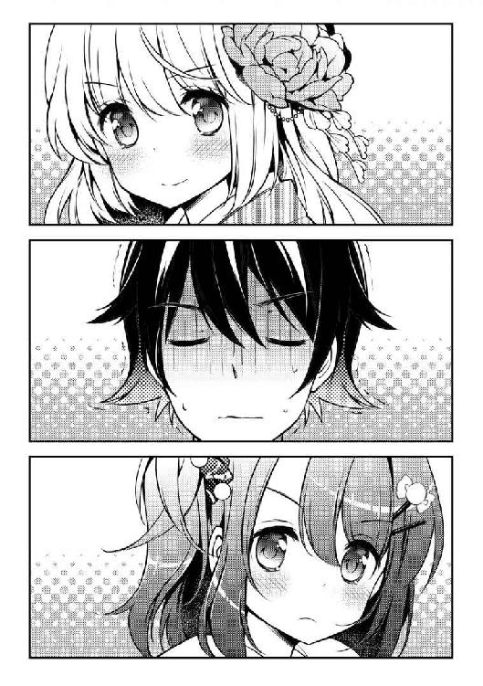
亜矢が口火を切った。
「ありのままの......裸のわたしを受け止めてくれるから」
もじもじしながら答え、意味ありげな眼差しを俺に向けてきた。
「は、はははは裸？ もっ、ももももももしかして、昨日の夜いなかったのは――!?」
頬を引きつらせる亜矢。
「うふっ！ わたしたち、一夜を共にして、秘密を分け合ったの！」
間違っちゃいないけど、微妙な表現だなぁ。
「一夜を？ 共に？ 秘密を？ 分け合った？」
「そう......わたしたち、病める時も健やかなる時も共に歩み、他の者に依らず、死が二人を分かつまで、愛を誓った仲だから！」
「美月さん、ちょっと誇張が過ぎるんじゃ......」
「ありのままを言っただけよ？」
「痛っ!?」
亜矢が思いっきり俺の足を踏んだ。
「ごめん。足、滑った」
文句を言ってやろうと睨むと、
「うそ、うそだ......甲斐性なしの非モテの馬鹿のくせに......そんなの絶対あり得ない......」
何やら失礼なことを、小声でぶつぶつ言っていた。
と、亜矢がゆらーっと立ち上がった。
「亜、亜矢......？」
「あ......あたしの方が......」
絞り出すように言う。
「あたしの方が、修士の秘密いっぱい知ってるもん！」
バンッ！ と、両手をテーブルに叩きつけた。
「あ、亜矢？」
「はうっ......！ ち、ちが、違う！ そうじゃなくて！」
俺も美月さんも、ぽかーんとそれを見ていた。
亜矢はばっと顔を上げると、
「――そうだ、店のオープンの準備しないといけないんだった」
ずんずんとリビングのドアに向かって歩き出し、ノブに手をかけたところで、百八十度回転。
俺と美月さんをビシっと指差した。
「とにかく、あんたたちが二人で生活するのって、ものすごく危なっかしいよ。おじさんとおばさんから修士を頼まれてる以上、この状態を黙って見ているわけにいかない！ これからあたしがいろいろとサポートしに来てあげるから！ んじゃ！」
......猛スピードで出ていった。
「............」
......あいつ、マジでどうしたってんだ？
「......麦原さんって......」
「ああ、ごめんな。ちょっとお節介っていうかさ、悪い奴じゃないんだけど......」
「ううん。とてもしっかりしてて、すごい。そう――『できる女』って感じ」
両手で握った湯呑を見つめながら、そんなことを言い出す美月さん。
「だってこのお茶、すごく美味しいもの。小さい頃からお稽古して、茶筅でお茶を点てる作法なんて知っていたって、普通にお茶一つ淹れられないんじゃ意味がないわ」
「そっちの方がすごいと思うんですけど......」
「ううん。そうじゃなくて......もっと、人が生活を営んでいくうえで必要な力が、わたしには足りない気がしているの」
「............」
確かに天之川さんはお嬢様だ。
俺たちとは違う文化で育って、違う経験を積んできたんだろうな。メイドさんがいれば掃除や洗濯だって自分でする必要もないはずだし。
「それに......なんだかちょっと、うらやましかったわ」
「うらやましい？」
美月さんは、少しさびしそうに微笑んだ。
「――喧嘩できるほど、仲がいいっていうじゃない？ 麦原さんは、わたしが修士くんと会うずっと前から......わたしの知らない修士くんをいっぱい知ってるから」
「美月さん......」
「わたしも、麦原さんみたいになりたい」
そう言って、美月さんはにっこりと微笑んだ。
◆◆◆
――さて。こうして俺と美月さんの同棲が始まったわけなんだけど。
まあ、これがいろいろあって。
まず、朝。
絶対に美月さんより早く起きなきゃいけない。
俺と美月さんは俺の部屋（六畳）で夜を共にしている。
といっても、もちろん一緒に寝るわけにはいかない。
俺が使っていたベッドを美月さんに使ってもらい、俺はそのすぐ横の床に布団を敷いて寝る。
問題はここからで。
美月さんは非常に寝相が悪いのだった。
しかも、毎朝、決まって同じ時間――ＡＭ６：５０――になると、ベッドから落ちてくる。
「......う......」
「ううん......修士、くん......」
寝ぼけた美月さんが布団にもぞもぞともぐり込み、俺を抱き締める。
「ぶはあああああああああああああああああああああああああああ！」
吐血。
最初の三日くらいは、そのことに気がつかなかったから、毎度抱きつかれては血を吐いていた。
その法則性に気がついてから、俺はあらかじめ起きておいて、落ちてくる美月さんを避ける。
さらに目の毒なのが、寝起きの艶姿だ。
「......おはよぉ、しゅうじくぅん......」
寝ぼけ眼で、にへらっと笑う美月さん。
乱れた金色の髪、着崩れた寝巻きから覗く綺麗な鎖骨、はだけた裾が露わにする太ももの内側......。
美月さんのあられもない姿は、まさにモーニンググローリー。
俺も健康的な男子なので、いろいろとしんどい。
時々、完全に目が覚めていない時があって......。
「あはぁ......修士くん......大好き......っ！ もう一生、放さないんだもん！」
しがみついてくる→吐血のコンボ。
この前は、たまたま朝練が休みだった亜矢が乱入してきてくれたお陰で命を取り留めた。
そして朝食。
もともと俺の食生活は適当で、今みたいに両親がいない時は、食ったり食わなかったりって感じだった。
ところが。
「夫の健康を支える食事は妻の役目よね！」
生活力ゼロの姫君が張り切る。
美月さんは、制服の上にエプロン、三角巾という出で立ち。腕まくりをして、細く美しい腕をさらしている。
エプロンは、美月さん曰く「できる女」の象徴だそうだ。
その感覚はよくわからないけど、なんというか......まあ、正直、可愛い。
朝食は基本、目玉焼きにトースト。
と、一見普通なのだが、美月さんの目玉焼きは......
魔法の領域だった。
形が崩れていたり、焦げていたりとか、殻が入っているとかならわかるんだけど、味が変。不味いってわけじゃなくて、日に日に違う。
どういう味かというと、なぜか俺がリクエストした味になるのだ。
「修士くん、何が食べたい？ なんでも言ってみて？ その味にしてみせるから」
その味にしてみせるだって？ なんのこっちゃ。
「愛の力で奇跡が起こせるから！」
「それじゃ、ビーフストロガノフとか......？」
適当に答えてみた。
「オッケー！ ちょっと待ってて！ ......終焉と漆黒の世から来たりし鎮魂の汁、殲滅の黒、酸と乳、角持つ獣に集いて宿れ、味道の三十――」
フライパンに向かって、禍々しい呪文みたいなのを唱え始めた。
「愛の魔法注入完了！ はい、どうぞ！」
皿に盛りつけられた、なんの変哲もない目玉焼きが俺の目の前に出された。
美月さんはにこやかに俺が食するのを待っている。
俺は脳内に「？」を浮かべながら、口に突っ込んでみた。
......もぐもぐ。
「――――なん......だと......」
俺は絶句した。
なぜなら、まごうことなき奇跡を目の当たりにしていたからだ。
マジでビーフストロガノフの味のする目玉焼きだったのだ......！
しかも、俺が小学生の時、両親と一緒に行ったロシア料理のレストランで食った思い出の味そのまま......！ あの日の光景が鮮明に脳裏に蘇った。
「どうだった？」
はにかみながら問う姫君。
「ビーフストロガノフです......」
「うふっ、美味しい？」
「は、はい......。だ、だけど、どうして？」
「だから、愛の魔法だよ」
「――――？」
「修士くんが、食べたい料理の味になりますようにって、目玉焼きにお祈りしながら、おばあ様に教わった呪文を唱えるの。そうすれば、味を変えられるんだ」
「おばあ様......」
あの魔女、本物だったのか。
「でも成功させるには、術者の強い想いが必要なの。つまり、修士くんへの愛ね」
美月さんはてへぺろっと肩をすくめる。
ちなみにこの魔法、目玉焼き以外には効かないらしい。美月さんの魔法力ではこれが限界なのだそうだ。
本人曰く、いずれは魔法に頼らず、ちゃんとした料理を作れるようになりたいらしい。
学校。
一緒に住んでるから、当然一緒に登校することになるんだけど......特に初日はやばかった。 ずっと休んでた美月さんの復活の時でもあるからだ。
通学路を歩いている時から、美月さんはいろんな人に声をかけられていたが、俺は不審な目を向けられつつ、いないものとして無視されていた。
遠野森高校の『姫君』が、俺みたいなモブキャラと一緒にいるのだ。意味がわからなくて当然だろう。
そしていざ教室に入った途端――
「天之川さん、久しぶり！」
「もう体は大丈夫？」
「休んでた間のノートは俺が取っておいたから！」
瞬く間にクラスメイトに囲まれ、お祭り騒ぎ。
美月さんは、通常モードのきりっとしたたたずまいで、
「ありがとう......わたし、またみんなの笑顔が見られて嬉しいわ。これからもよろしくね」
ドッと沸く一同。
そんなお祭り騒ぎの中、一人の女子がポツリと言った。
「......ところで朝、なんで杉浦と一緒にいたの？」
一瞬にして教室の空気が凍る。
まあ、こういう事態は想定しておいた。
だから、美月さんにお願いして、俺たちが付き合ってるとか同棲しているとか、そういうのは、内緒にしようと決めていた。
今日はたまたま、登校途中で一緒になったからそのまま学校まで来たんだ――と、そういう話にしておこうって。
もちろん亜矢にも話を合わせてくれるよう頼んである。朝練後のジャージ姿で、人ごみの向こうから、ブーたれた顔をしつつも、少し心配そうに見ていた。
みんなの注目が集まる中、美月さんは立ち上がった。
「特に深い意味はないわ。わたしと修士くんはただの恋人だから」
「........................」
教室中がツンドラと化した。
「み、美月さん？」
話が違うんじゃ？ と、視線を送ると。
「ああ、だめ......この気持ちに嘘はつけない！ むしろ世界中に伝えたい！ 修士くん、愛してるわ......！」
頬をピンク色に染めて、俺を直視していた。
「どういうことだ杉浦......！」
「私たちの天之川さんが......なんかおかしい！」
怨念、憎悪、嫉妬......負のエネルギーが、巨大なうねりを生み出し、今にも俺の四肢を食いちぎらんばかりに牙を剥いた。
「ま、待ってくれ、違うんだ！ そんなんじゃないんだ！」
恐怖に駆られて、俺はそう言っていた。
「......修士くん、どういうこと......？」
一瞬にして美月さんの顔が蒼ざめる。
「......ああっ......む、胸が......っ！」
「俺たちは、実はすでに婚約しているんだ！」
こうして俺たちは、公認のカップルになってしまった。
授業中。
教室の席順は、俺が窓際から二列目の後ろから二番目。
で、その後ろが美月さんなんだけど......。
ガタガタと机ごと移動してきて、ピッタリと無理やり俺の隣に移動してきた。
「一緒に勉強しよっ！」
つまり、一人だけ机と机の間の通路に、居座ろうとしている。
「ちょ！ 何やってんのよ！」
ツッコんだのは、逆隣の席の亜矢。
「先生！ 天之川さんが席を勝手に移動してます！」
ざわざわ......。
不穏な空気が教室を覆い始める。
「えっと......天之川？ その......なんで杉浦と机をくっつけてるんだ？」
日本史担当の大山十三郎（五十八歳）が、苦笑を浮かべて聞いてきた。
「――はい。それはわたしたちが夫婦だからです」
躊躇もない。
「は？」
大山先生、ぽかーん。
「ふ、夫婦？ なんだ、お前ら付き合ってるって事か？」
「付き合っているのではありません、婚約しているのですっ！ すでにわたしは修士くんの家で同棲していますっ！ 婚姻届にサインもしました！ 実家の宝物庫に保管して、結婚可能な年齢になった時、二人でお役所に提出することも決まっているのです！ それなのに、こんなに愛し合っているわたしたちが離れて授業を受けるのは、おかしくはないでしょうか！ ぴったりと机をくっつけ合い、教科書も共にして、互いを支え合いながら授業を受けるべきだと思ったのです！」
朗々と宣言した。
「そ、そうか......まあ、ほどほどにな」
あっさり容認しやがった。
先生たちにも立場があるからな。
教師は基本、理事の娘である美月さんに対してはノータッチなのだ。
「それじゃ、前回の続きからいこうか。えーっと――」
何事もなかったかのように、授業が再開された。
「教科書、わたしのと修士くんのとどっち使う？」
美月さんは無邪気に言う。
「えっと、俺のは落書きだらけなんで、美月さんのを......」
「一緒の教科書で勉強していると、ますます愛が育っていくね！」
「は、はい......」
「じゃあ修士くんにクイズです。これはなんて読むでしょう？」
「えーっと、むなみら......探すに題？ うーん？」
「ぶー。正解は『ろくはらたんだい』でした。それじゃ、次の問題です。あ、二問目も不正解だったら、罰ゲーム。ほっぺた指でツンツンってしちゃうから♪」
「えー、それは......」
ガツン！
いきなり強烈な振動が走った。
「あ、亜矢......？」
俺を挟んで亜矢も机をくっつけてきた。
「ど、どうした？」
「あたし、教科書忘れた。見せて」
「あ、ああ。それじゃ、どうしようかな？」
俺は、美月さんと亜矢を交互に見やった。
「じゃ、修士くんの教科書を麦原さんに貸して、修士くんはこのままわたしと一緒に見よ？」
「あ、修士貸してくれんの？ でも、なんか借りてる人間が独占すんのって気が引けるから、一緒に見ようよ」
微笑み合う美月さんと亜矢。
あれ？ なんだろう？ 背筋が寒くなってきた。
......とりあえず、美月さんの教科書を俺と美月さんの間に置き、俺の教科書を俺と亜矢の中間に置いた。
そんな日々が続き、ある日の放課後。
「疲れた......」
学校から帰った俺は、リビングのソファに横になっていた。
心身共に疲労が激しい。
美月さんは人目も気にせず絡んでくるし、亜矢は宣言した通り、以前にも増して俺んちに踏み込んでくるようになった。
「夕飯まで少し時間があるから、洗濯しようかしら」
「あっ！ ちょっと天之川さん！ 何やってるの？ ダメだって！ 昨日洗濯機の使い方教えたでしょ！ 柔軟剤はここに入れるのよ！ ああ、もう！ ここはあたしがやるから、大人しくしてて」
「それじゃ、わたし掃除機かけるわ！」
「この間コード吸い込みまくって壊しかけたじゃない！ それもあたしが後でやるから！」
「んも～！ 麦原さんは夕飯係でしょ！ 掃除や洗濯くらい、わたしにやらせて！」
「だめっ！ 天之川さん、全然ダメダメなんだもん！」
「修士くんにしてあげたいの！ 嫁として、奥さんとして、いいえ妻として！」
「意味ぜんぶ一緒！ 『姫君』らしくのんびりしてなさいよ！ この家のことはあたしの方がわかってんだから、あたしに任せて！」
......これが毎日だ。
亜矢は何かと美月さんに張り合っている。
「ううっ......」
結局亜矢に仕事を奪われ、泣きべそをかきながら、リビングに戻ってくる美月さん。
そのまま絨毯にペタンと座った。
「あの......美月さん、家事なんて、そう毎日やらなくてもいいんですよ。洗濯は洗うものがたまってからすればいいし、掃除だって、週に一回くらいで」
「でも、わたし......このままじゃ妻失格だわ。修士くんに、何もしてあげられてない......！」
「朝食いつも作ってくれてるじゃないですか」
「でも、魔法でごまかしてる......」
うーん。
「あ、そうだ、お茶でも飲みましょう。俺、淹れますよ」
「ううん、わたしにやらせて！」
美月さんは涙目で迫ってきた。
すごく真剣だった。
「じゃ......じゃあ、お願いします」
「うん♪」
美月さんは湯呑と茶筒、急須、それから沸いたお湯の入ったポットを持ってきた。
テーブルの上に、準備を整える。
そして、茶葉とお湯を入れた急須を持って湯呑へと傾ける――。
コポコポコポ......。
「お」
「あ」
お茶は、見事に湯呑の中へおさまった。
「上手に淹れられたじゃないですか」
「練習したの」
にっこりと微笑む美月さん。思わず俺も笑顔になる。
美月さんは、間違いなく超ド級の不器用だ。
普通の人が当たり前にやれることができない。
というか......そういった知識が、ない。
特に電化製品の扱いは壊滅的。お嬢様には馴染のないものらしい。
美月さんは、なんでもできちゃう子なのかと思ってたけど、全然そうじゃなかった。
なんていうか......不器用だけど、頑張って、少しずつできるようになっていく人だ。
そんな美月さんが、初めて俺のために淹れてくれたお茶。
少し微笑ましく感じながら、口をつけた。
「ぶはっ！ 味噌汁!?」
「えへっ！ 魔法使っちゃった！ お茶でも味を変換できるようになったんだよ★」
......普通じゃないことは得意なんだよな。
俺は、美月さんがこんな子だなんて、知らなかった。
いや、たぶん俺だけじゃなくって、学校のみんながそう思ってる。
今の美月さんは、完璧なお嬢様や、みんなの憧れの優等生じゃない。
っていうか、ぶっちゃけ......もう、かなり変な子だ。
ネジが飛んだというか、ずっと抑圧されていたタガが外れたというか......俺に告白したことで、本当の美月さんが出てきちゃったみたいな。
でも、勝手なことを言わせてもらえば。
そんな美月さんのことは、嫌いじゃない。
今の俺の生活は――正直、ちょっと、楽しいかもしれない。
「うわぁ！ 人がたくさん！ あ、あれって、噂に聞く観覧車っていうものじゃない？ ふわ～......こんなに大きいんだ......」
「一番上まで行くと、都内全体が見渡せるらしいですよ」
「そうなんだ！ あ、見て、修士くん！ あっちでピエロさんが火のついた輪っかを回してるよ！ すごい上手だねっ！ わたしにもできるかな？」
できないと思う。
興奮冷めやらぬ美月さんがはしゃいでいる。
ここは一大テーマパーク。
埋め立てた出島に作られた、日本でも有数の規模を誇る『ミルキーウェイシティ』。
アトラクションの類はもちろんのこと、ホテルやゴルフ場、キャンプ場に、ショッピングモールに温泉......いわゆる娯楽のほとんどが楽しめるという、超巨大施設なのだ。
休日には観光客や家族連れでかなりの賑わいを見せている。
もちろん、デートスポットとしても鉄板らしい。
俺と美月さんがなぜここに来ているのかというと......
昨日の晩、突然村雨先生が、『恋死病』の経過確認と称してうちに現れた。
美月さんの診察を終えると――
「......うん、経過は良好だな。では二人とも、明日はデートをしてくるといい」
「デート？」
「そうだ。恋死病録によると、『欠かさず逢引を重ね、互の思慕を深めるべし』とある」
そう言うと、ポケットに手を突っ込んで、二枚のチケットを取り出した。
「それは何？」
「フッ......ミルキーウェイシティのフリーパスだ。お前たちのために用意した。遠慮なく使うといい」
「ありがとう、村雨！」
宝物のように、チケットを抱き締める美月さん。
「それじゃ、明日行こうね、約束だよ、修士くん！」
ものすごく嬉しそう。
もちろん断る理由もなく......俺は生まれて初めてデートに乗り出すことになったというわけだ。
それにしても......随分カップルでいっぱいなんだな。
俺の隣を歩く美月さんは、白いニットのセーターに赤いコートを羽織って、黒いミニスカートに白のパンスト、ロングブーツ。
薄くメイクをしていて、唇はグロスリップでつやつや光ってる。髪も少しくるっと巻いていて、なんていうか、いつもより大人っぽい。
対して俺は、学校でも使ってるダッフルコートに、着古したチェックのシャツ、ジーンズという、普段着と大して変わらない服装だ。
一番マシなのを選んできたつもりだけど、もうちょっとオシャレしてきた方が良かったかな。
「さて、どれからいきましょうか？ 何か乗りたいものとか、したいことありますか？」
「うーん......わたし、こういうところに来るの初めてだから、よくわからないの。でも、どれを選んでも、修士くんと一緒なら楽しいよっ！」
「あれ？ 美月さんって......」
俺の記憶だと、ミルキーウェイシティって、天之川家も出資してたと思ってたけど......。
「わたし、あまり人の多いところに行ってはいけないって言われてたから......」
そうか......美月さんは厳しく育てられたせいで、普通の子が経験しているようなことをほとんど知らないんだ。
「わたし嬉しい。初めてが君となんて、すごく素敵だもの」
ストレートすぎて、なんて返したらいいのか困る。
「あら？ あれは何かしら」
美月さんの指差す方に目を向けると、人だかりができている。
「なんだろう？」
「行こう、修士くん！ わたしのラブアンテナが反応しているわ！ 何かいいことありそう！」
俺にとってはよくないことが起こりそうな予感がするなぁ......。
「『エターナルウェディンカップ』！」
案内板を見るなり、歓喜の声を上げる美月さん。
「えーっと......本日限定カップル限定特別イベント......？ 『愛にまつわる三つのイベントをクリアしてエターナルラブストーンをゲットしよう』か......」
「おおっと、素敵なカップルさんですねー！」
いきなり女性スタッフが話しかけてきた。
「参加しようかどうか迷ってます？」
「ええ、まぁ......」
「それなら是非とも！ このイベント『エターナルウエディングカップ』は、一年に一度、今日しか行われないんです！ し・か・も！ ここからが重要ですよ！ このイベントをクリアしたカップルには、なんと！ 二人の愛が永遠になるという伝説の宝石『エターナルウエディングストーン』のペアリングがプレゼントされるのです！ あ、彼氏さん！ 今、うさんくさーって顔しましたね」
した。だって、うさんくさいんだもん。
「ところがどっこい、この伝説にはちゃんと裏付けもありまして！ 日本の歴史上屈指のおしどり夫婦と名高い源義仲と巴御前は、これを持っていたと言われているとかいないとか！」
絶対嘘でしょ！
「イベントで行われる試練は三つ。それぞれで二人の相性、信頼、絆が試される内容になっていて、クリアするごとにその証しとしてメダルが与えられます。三つのメダルを全部集めると、エターナルラブストーンと交換できるのです。つまり、このイベントをクリアすることは、それ即ち二人の愛がパーフェクトであると証明されることなのです！」
「素晴らしいわ！」
「奥さん！ さすが話がわかりますね！」
「いや～ん、奥さんだなんて！ でも実はもうわたしたち、婚約してるんですけどっ！」
「うわー、うらやましー！ 私なんて彼氏いないっすよ！ いいなぁ！ あれ？ でもまだ婚約指輪してないですよね？ じゃあこれ、絶対参加するしかないですって！」
ぐいぐい押してくる。このスタッフ......そんなにこのイベントに参加させたい理由があるんだろうか？
「どう、参加しちゃう？ ＹＯＵしちゃいなよ？」
「修士くん！ わたし、参加したいわ！ エターナルラブストーン、ほしいっ！」
まるで、クリスマス前の子どものように、キラッキラの瞳で頼まれた。
「ほら、彼氏、どうするんですかっ！ 参加人数には限りがありますよっ」
バシッと肩を叩いてきた。ほんと馴れ馴れしいなこのスタッフ。
そういえばこの声、どこかで聞いたことがある気がするんだけど、思い出せない。
「ね、だめ......？」
姫君が、瞳をうるうるさせながら上目遣いで俺を見る。
「わかりました。どうせやるなら、頑張ってそのエターナルなんとか、ゲットしちゃいましょう」
「ありがとう修士くん！ 大好きだよぉー！」
ぎゅっ♪
「ぶはぁあああああああああああああああ！」
吐血した瞬間、視界の隅で、スタッフのお姉さんがインカムに話しかけていた。
「こちら、ナンバー９０１。日の出作戦第一段階成功。これより、第二段階に移行します」
何を言ってるんだろう。
お姉さんに渡された地図付きパンフレットに記載されてある手順に従って進んでいたら――そこには、怪しげな紫色のテントが張ってあった。
「ここがファーストステージみたいですね」
「燃えてきたわ！ さあ、愛の試練に臨みましょう！」
美月さんは軽やかにスキップを踏みながら、入口へ突っ走っていった。
薄暗いテントの中に入ると、真正面にホームシアター的なでっかいスクリーン、手前にはタッチパネル、そして脇には電光掲示板が設置されていた。
俺たちが足を踏み入れると、機械ボイスの案内が流れ出した。
『ようこそ！ ここでは二人の相性をチェックするよ！ タッチパネルに基本情報を入力してね！ それを元にお互いに関する質問が作成されるよ！ 解答率から導き出された相性値から、星の運命算術法を用いて運命愛ポイントを計算！ 80点を超えたらメダルをあげちゃうから頑張ってねー！』
画面には、氏名、生年月日、年齢、血液型など、プロフィールを問う記入欄が二人分表示されている。俺と美月さんはそれぞれ指示通りに入力した。
「えへっ。わくわくしてきちゃった！ 頑張ろうね！」
美月さんはえいえいっと空手の正拳突きの真似をし始めた。
ま、女子って基本的に占いとか好きだもんな。
『それじゃ、まずは彼氏の方からいってみよー！ パネルに表示されているスタートを押してね。質問が始まるよ！ 回答は音声認識だから、大きな声ではっきりと答えてね！』
「修士くん！ ファイト！」
「は、はい」
鼻息荒く言う美月さんに、少し緊張して答える。
いきなりここで失敗するわけにはいかない。
よし、スタート！
『最初は彼氏なら簡単に答えられる簡単な問題だよ！ さて美月ちゃんは今、何柄のパンツをはいているでしょう？』
「はい？」
なんだこの占い。いきなりセクハラかよ。
『彼氏なら簡単に答えられる』とかほざいてたけど、わかるわけねーだろ。
『制限時間は一分でーす！」
「修士くん！ 修士くん！」
美月さんが俺を呼んだ。
「今、見せてあげるから！」
スカートめくろうとしてる！
「いやいやいや、めくんなくていいから！」
慌てて制止する。
「なぜ止めるの？ わたし、君になら見せても平気だわ！ むしろ見てほしい！」
「見たくないと言ったら嘘になりますけど、こんなところでパンツ出さなくていいんですよ！ っていうか見ちゃったら相性とかの問題じゃないですし......まあ、俺を信じてください。愛の力で、必ずこの腐りきったマシンを倒してみせますから」
微笑んでみせた。
「わかったわ！ 君が言うのなら信じる！」
俺は彼女の手を放し、そして、モニターに向き直る。
『10......９......８......』
カウントダウン。時間は残り10秒を切った。
一か八か、美月さんのイメージから推測できるカラーにかけるしかない。
考えるな、感じろ......美月さんのはいていそうなパンツの色はなんだ......！
『３......２......１......』
――見えた！
「純白！ ピュアホワイト！」
カウントを取るセクハラマシーンの機械音声が止まった。
ゴクッ......ベタだが、白こそ一番可能性が高いはずだ。
『正解は――』
突然床下からズゴォオオオオと、けたたましい音を立てて突風が吹いた。
「きゃっ」
――ひらり。
舞い上がったスカートを慌てて押さえ込む姫君。
彼女のパンツは――水墨画風のシャープな筆使いで描かれた木と鳥の柄だった。
「わかるわけね――――――――――――!!」
仮にわかったところでどう答えたらいいんだよ！
『ブー！ 不正解～！ カレシ君いきなり間違えちゃいましたね？ 正解は『雪舟の松鷹図』でした！ ぷぷぷ。何が愛の力で私を倒すですか。笑いすぎて、腹がよじれそうですねー』
ムカつくな、この占いマシーン。どういうプログラムなんだよ。
とはいえ不正解だったことには変わらない。
「す、すみません、美月さん」
「ううん、いいの！ ここから逆転すれば80点なんて絶対に超えられるよ。だってわたしたちの愛は無限大だから！」
「は、はい、次からは頑張ります」
と言いつつ、この先の問題に不安しかない。
...............。
案の状、惨敗だった。
残り九問中、俺が正解することができたのは一問だけ。
『彼女が好きな動物は？』→犬という、簡単なものだ。
残りはパンツの柄に匹敵する難問ばかりだった。
特に恐ろしかったのは『彼女のキスの味は？』。
美月さんは当然のごとく、キスしようと襲いかかってきた。
かわす俺→恋死病が発動→キスは結婚してからですと彼女を抱き締めなだめる俺→吐血というお約束が展開されたのは言うまでもない。
それにしても、質問もアレだが、俺の正解率の低さはひどい。この試練をクリアするにはかなりハードルが高くなってしまっただろう。
この後、美月さんが俺に関する問題をどれだけ当てることができるのか......。
「おっけー、おっけー！ 必ずここから巻き返してみせるから！ さっき答えられなかったわたしのことは、これからじっくり、教えてあ・げ・るっ♪」
ウインクしてみせる美月さん。すごいポジティブだ。
「よーしっ！ 次はわたしの番だね！ 頑張るぞー!!」
腕まくりをしながら、鼻息も荒くパネルの前に立った。
『それじゃ修士くんに関する問題、いきますよーん！』
相変わらず機械のくせにラフだな。
『第一問――修士くんが今、はいているパンツの柄は？』
なんで同じこと聞くんだよ。
「はいっ！ 可愛い象さん柄！」
え......？
いや、俺ですら、今自分がどんなパンツはいてるのかなんて、いちいち覚えてないんですけど......。
美月さんに背を向けて、ズボンをズラしてこっそり見てみた。
......当たってる。
「見たか！ これが愛の力よっ！」
ドヤ顔。
『やるね！ さすが美月ちゃん！ じゃ、どんどんいってみよう！ 第二問！ これまでの生涯で修士くんがネットで一番調べた言葉はなんでしょう？」
「ランジェリー！」
『大正解！』
「うわああああああああああああ！」
し、小学校の時、男子の間でランジェリーって叫ぶのが流行ってたんだよ！ どういう意味なんだろうって何回か調べただけで......いや、嘘です。なんていうか、裸そのものより、下着姿の方がちょっといいかもしれないって感覚、きっと賛同してくれる同志はいるはず――
「って、なんでそんなことまで知ってるんですか！」
「大好きな人のことを知りたいと思うのは当たり前じゃない！」
「いや、それにしても......」
「修士くん、難しく考えすぎだよっ？」
あまりツッコむと恋死病を刺激しかねないから、深く詮索はしないでおこう......。
『第三問！ 修士くんが小学六年生の夏休みに書いた作文のタイトルは？』
「『忍者になりたい』！」
知ってるの？ なんで知ってるの？
俺も覚えてないよ？ つーか何そのタイトル！ 小六にもなって、つけるようなもんじゃない！
『正解！』
当たってた。
『第四問！ 『忍者になりたい』の内容は？』
そのネタ引っ張んのかよ。
「忍者は足も速いし、剣も得意だから、その力を得てプロ野球のスターになりたいっていう、夢に溢れたとても素敵な内容なの！ 素直にプロ野球選手になりたいって書いていないところが、修士くんの挫折と捨てきれない夢への思いがせめぎ合っていて、切なくなっちゃうわ」
当時の俺に問いたい。一体何を思ってそんなことを書いたのか。
『優しいなぁ......美月ちゃんは。私も、人間のオスだったら、美月ちゃんと結婚したくなっちゃうなー。ちなみに、回答は大正解だ！ 続いて第五問！』
「かっぱ巻き！」
『正解！』
「えっ？ 今、問題まだだったよ？」
「ふふっ♪ ラブアンテナが時空を超えて、問題を先取りしてくれたのよ！」
いつＳＦになった？
『参っちゃったな～！ 今出そうとしていた問題、「修士くんが初めて食べたお寿司はなんだったでしょうか？」だったんだよ！ 見事先を読まれちゃったね。いやぁ、すごい！ 美月ちゃん！ 絶対良妻賢母になれるよ！』
関係ない！ 俺でも覚えてないよ、初めて食った寿司なんて！
そもそも問題先に読まれたくせに、対応落ち着きすぎだろ！ 絶対中に人入ってる！
「えっへん！ 修士くんのことならなんでも知ってるよ！」
「ちょ、ちょっと怖い気すらしてきましたけど......」
「大丈夫、個人的に楽しむためにしか使ってないから！」
「............」
俺に関する知識はストーカーといっても過言ではないレベルだ。
この感じだと、俺が人に知られていないと思っている恥ずかしいことまで全部知ってるのではないだろうか......。
『それじゃ、どんどんいくよー！』
......そして数分後。
『おめでとう！ 全問正解です！ 参った！ 降参！』
「やったー！ どうだっ！」
腕を組んで胸を張る美月さんであった。
『――さあ、それじゃ早速、星の運命愛算術法で二人の相性ポイントを出すから、ちょっと待っててね！ 美月ちゃんの巻き返しもあったし、合格ラインを超えられるかもしれないよ！』
「絶対クリアだよ！ わたしたちの愛は無敵だもん！」
確かに美月さんの全問正解をもってすればいけるかもしれない。
『それじゃ、発表します！ 修士くんあーんど美月ちゃんの相性ポイントは～？』
――ぴっぴっぴぴぴぴぴぴぴぴぴ！
モニター脇に設置されてる縦型の電光掲示板が灯り、10、20、30と、どんどん光のブロックが積み重なっていく。
このブロックが俺と美月さんの相性ポイントを示しているんだろう。
それにしても、どっかで見たことあるな、これ。
ピッ......ピッ......ピッピッ......ピ......。
じょじょに失速し、ついには息絶えるかのように上昇を止めてしまった。
しかも、ポイントは――79。
『あーっと！ 惜しくも一ポイント足りない!? ......ちょっと、システム担当、どうなってるんですか、これ、話と違います！ え、こっちのボタン？』
最後の言葉は小さくてよく聞こえなかったが、一ポイント差って、どう考えても、俺のせいじゃないか。
「うそ......わたしと修士くんが、いきなり失格？ そんなぁ......！」
さすがの美月さんもこの結果にはショックを受けてしまったらしく、まるでこの世の終わりが来てしまったかのように青ざめていた。
「......美月さん、ごめん。百パーセント俺が悪いんです。俺が美月さんの事を知らなすぎたばっかりに......せめてあと一問だけでも正解してたら......」
「ううん、君と一緒に何かに挑戦するだけでわたし楽しかったもの。でも......でもやっぱり、こんな結果は悲しいよぉ......グスッ......」
両手で目元を拭う姫君。
『......美月ちゃん、泣かないで！ あ、ちょっと待って！』
――ピッ。
電子音が一つ、鳴り響いた。
ジャジャジャジャンジャジャーン、デデンデデン♪
聞き覚えのあるファンファーレが鳴り出し、軽快なＢＧＭが流れ始めた！
仮装大賞だった。
「修士くん、見て！ あれ！」
興奮した声で電光掲示板を指差す姫君。
「合格してる！」
さっきは79点止まりだった、点数に一つポイントが加算されて、80点に到達していた。
「やったわ！ わたしたちの愛が奇跡を起こしたのよ！」
ぴょんぴょん飛び跳ねる美月さん。
『いやぁ、大変失礼しました！ 私占いマシーンは機械のくせに、計算を少々間違えていたようです。私もびっくり！ お二人とも、合格です！ 相性の試練クリアおめでとうございます！ それではどうぞ、メダルをお受け取りください！』
音声がそう言い終えると、スクリーン裏からいきなり、さっきの案内係のお姉さんが現れ、美月さんの首に持っていたメダルをかけた。
「いやいや、よくやったね。すごいよ。まさかの逆転サヨナラホームランって感じ！ この調子で次のステージもクリアしちゃってね！」
「ありがとう。嬉しいなぁ～。ね、修士くん！」
「そ、そうですね......」
嬉しいことは嬉しい。
いきなり脱落したら美月さんのフォローも大変だし。
だけど、不自然すぎるだろ。
機械のくせに計算を間違えただなんて、怪しいにもほどがある。
「さあ、次は信頼の試練です！ 頑張ってくださいねっ！ うふふ！」
お姉さんがにこにこ笑って小さくガッツポーズする。
思い出した。
このお姉さん......天之川家で俺を案内したメイドさんにめっちゃ似てる。
次のステージは――信頼の試練。
いわゆる、巨大迷路だった。
パンフの説明によると、制限時間六十分以内に、罠や謎解きを攻略しつつゴールすればクリアメダルが貰えるらしい。
というわけで、俺たちは迷路にチャレンジしていたんだけど――。
壁がいきなりせり出て進路を塞いだり、登ったり下ったり、落とし穴にかかった網を伝って越えたりと、なかなかアスレチックな迷路だった。
あまり体力があるとはいえない美月さんも頑張る。俺もなまっていた体でなんとかついていく。
しかしいろいろと困難を乗り越え――今、俺と美月さんは袋小路にはまってしまった。
しかも、残り時間はあと五分しかない。
「他の道はすべてチェックしたはずですよね......」
「この壁を飛び越えればいいのかしら？」
美月さんが真顔で言った。
「いやいや......どう見ても十メートルくらいはあるじゃないですか。飛び越えるなんて無理ですよ」
「そうかなぁ？ これくらい愛の力があれば大丈夫だと思うけど」
愛の力って、そんなすごいのか。
「まあ、壁を飛び越えるのはルール違反だと思うんで、ルールに従ってこの袋小路を抜けましょう。じゃないと失格になっちゃうかもしれないですし」
「そっかぁ」
ペロっと舌を出す美月さん。
「この壁をどうにかするためのヒントが、どこかにあると思うんですけど......」
壁をぺたぺたと触っていると、小さな赤いスイッチがあるのに気がついた。
押してみる。
ういーん。
ゆっくりと地面から、台座と十字架型のオブジェがせり出してきた。
台座にはこう書かれてある。
『同じだけの信頼の力を有する者よ、十字を回せ。さすれば閉ざされた道が開かれん』
「なるほど......要は、二人で協力してこのハンドルを回せと......」
「なんだ、簡単じゃない！ 時間がもったいないから、早速回して突破しちゃおう！」
俺は十字のハンドルを少し握ってみた。
が、びくともしない。
「これ、二人の力が一定じゃないと動かないっぽいですよ。どちらか一方の力が強いだけじゃ駄目ですね」
というわけで、俺と美月さんは向かい合う形で、大きな十字型のハンドルを握った。
「それじゃ......レディ、ゴー！」
美月さんの掛け声と共に右回りに走り出す。
ガラガラガラ！
歯車が回転するような大きな音。
そして、目の前を塞いでいた壁がズズズ......と沈み始めた。
「よし、美月さん、その調子です！」
走りながら、真正面を走っている美月さんに顔を向けると――
「......修士くん、かっこいい......」
ぽわーんと頬を赤らめている。
「美月さん？」
「......一生懸命頑張ってる顔、額に滲む爽やかな汗......なんてステキなの......ああん！ わた
しのラブアンテナが愛を受信して......はぁあああああああああああああああああん！」
「うおっ！」
回転速度が速くなってきた！
「美月さん！ 落ち着いて！ 俺に合わせてください！」
「だめっ！ 無理だよぉ！ わたしのラブファントム、もう抑えられないっ！」
「ぐわああああああああああああああああ！」
暴走モード突入。
俺は必死に美月さんの回すスピードに追いつこうと、全力で走った。
だが、次第にハンドルをつかむのでせいいっぱいになり、足が地面を引きずり、やがて体は宙を浮き、ついにはぶっ飛ばされてしまった。
「ぐふぁっ！」
地面に叩きつけられた。
「いたたた......」
痛みを堪えて顔を上げると、
「ど、どうしよう......」
美月さんは呆然と空を見上げていた。
「ハンドルが！」
ぶーん......と、竹とんぼみたいに、猛回転して空の彼方へと消えていった。
後に残されたのは支柱のみ。
同時に、ズズズズズ......と壁が元通りになってしまった。
残り時間はほとんどない。
これは――クリア不可能だろう。
「ああ......わたしのせいで......」
へたっと地面に座り込む美月さん。
「い、いや、俺が美月さんの愛に追いつけなかったのが悪いんです」
「ううん、暴走する愛を抑えられないわたしが悪いの！」
「美月さん、ここでダメだったからって、俺たちの関係は変わりませんよ」
「でも......」
呟いて、美月さんが俯いた。
と、その時だった。
ドカーン！
けたたましい音を立てて壁が崩れた!?
「「「「姫様っ！」」」」
呆然とする俺と美月さんの前に、天之川メイド隊が現れた！
頭にはカチューシャではなく黄色のヘルメット、手にはツルハシやハンマー。
「あなたたち!?」
「道は我々が確保いたしました！ 制限時間まで残りわずかですが、今なら走れば間に合うはずです！ さあ！」
「ありがとう、みんな！ 恩に着るわ！」
「「「「我々は、いつも陰から姫様を見守っています！」」」」
「さあ、修士くん！ 行くよ！ 一気にゴールへ！」
「え？ は、はい......！」
頭を下げるメイド隊の前を横切り、俺と美月さんはゴールへと向かって走った。
間違いない、やっぱり天之川家が裏で糸を引いている。
でも、わざわざこんなイベントに絡んでくる必要があるようには思えないんだけど......。
ギリギリでゴールに飛び込み、二つ目のクリアメダルもゲットできた。
俺たちはラストステージに挑むため、天衣川の河口へと移動する。
天衣川は、このミルキーウェイシティの中心にある小高い山にある、銀河湖というカルデラ湖から流れている川だ。
上流では川釣りやキャンプが楽しめ、河口では海賊役のキャストによるショーなんかをやっている。
河口には釣り船や遊覧船、海賊船などが停まっていた。
海からの風。潮の香り。うみねこの鳴き声。
のんびりと釣りをする人々に、ショーの準備をしているらしい海賊役の方々。
最後はここで――ボートレースをするらしい。
パンフによると、最後のミッションは二つの試練をクリアしたカップルが合同で行う競争。
つまり勝ち残ったカップルだけが、エターナルウエディングリングをゲットできる。
俺たち以外のカップルは二組。
一組は、今風のギャルとギャル男のカップル。
もう一組は、三十を超えてそうな社会人臭のするカップルだった。
どちらも仲睦まじそうに手をつないだり、寄り添い合って、談笑をしていた。
なんとなくだけど、強敵な気がした。
打ち解け合っている、理想的な恋人同士に見えたからだ。
『それでは！ これよりラストステージ――絆の試練！ 超絶ボートレースを始めたいと思いまーす！ 見事生き残ったカップルのみんな！ 心の準備はいいかなー？』
例のスタッフのお姉さんが、拡声器越しに声を張り上げた。
「いよいよだね、修士くん！」
美月さんはぐっと拳を握りしめた。
と、その時だった。
響き渡る不穏なＢＧＭ。
『おおーっと、いきなり海賊船がやってきたぞー！』
岸壁に髑髏マークの入った帆船が着港。
甲板から颯爽と怪しい人影が二つ、飛び降りてきた。
「はっはっは～！ 我々はバカップルどもから偽りの愛を奪う『愛の海賊団ラブサンシャインアロー』！ 儂は船長、マッサ・トゥーラである！」
「フォッフォッ、ワシは参謀にして航海士にして大魔女のセッツァーじゃ！ 呆けたバカップルなど引き裂いてくれる！」
フック船長みたいなのと、西洋の魔女みたいな婆さんが、ビシっとポーズを決める。
イベントを盛り上げるためのショーなんだろう。
ギャラリーから「おおっ」と歓声が上がる。
「楽しそう！ なんだかわたし、ドキドキしてきちゃったわ！」
「そ、そうですね......」
特徴的な言い回しに笑い方。
よく見ると、船長が持っているのは日本刀だった。
「あの、美月さん......あの人たちって――」
「はーい、そこまで！」
いつの間にか俺たちの目の前に立っていたのは、アラビア風踊り子的な衣装を着た、妙に色っぽい女性だった。
「うふふ、思いついたことをすぐ口にするのは感心できないわねぇ」
と、女性がウインクをした瞬間。
「いやっ！ ショウ～！」
「うわー！ ヒナあああああ！」
「ヒロトさんっ！ 助けて！」
「貴様ら！ カナコをどうするつもりだ！」
男女の悲痛な叫びが轟いた。
振り向くと、船長と航海士の二人が、参加カップルの女子を連れ去って、あっという間に海賊船に乗り込んでいた！
「さあ美月ちゃん、こっちにおいで」
「いやっ！ 来ないで！」
踊り子はあっという間に美月さんを引き寄せて締め上げると、一気に口まで塞いでしまった！
「もごもごもごもっ！」
「ちょっと、何してるんですか！」
思わずつかみかかろうとする――が、いとも容易くかわされ、足を突っかけられ転倒させられてしまう。
「............」
膝をついて立ち上がろうとする俺を、踊り子は、にこやかな笑みを浮かべて見下ろしていた。
この笑顔にも......見覚えがある。
俺は彼女の顔をよくよく見つめた。
どことなく美月さんに似ている......!?
「あなたは、お、おかあ......」
「うふふっ！ 気がついちゃった？ でも、その先は口にしちゃだーめっ！ 最後の試練はここから開幕なんだから！ これから君の大切なカノジョを乗せた海賊船は港を出る。君たちはさらわれたカノジョを取り戻すためにボートで追いかけるの！ 一番早くカノジョを救い出すことができれば、そのカップルが優勝ってわけなの！ さあ、三人のカレシ君！ 岸壁にあるボートを漕いで、我々の海賊船に追いついてみなさい！ ふふふふふふっ！」
踊り子――いや美月さんのお母様はそう伝えるや、美月さんをお姫様抱っこしたまま、あっという間に海賊船に乗り込んでいった。
「よし、まってろよヒナぁあああああ！」
「カナコ、今助けるぞ！」
二人の彼氏は意気込むなり、ボートへと走る。
「――っ！」
俺もあわてて走り出した。
このイベントの全部にあの人たちが絡んでいるとなれば、これまでの不自然なところにもすべて合点がいく。
でも、なんのために、一家総出でこんなことやってんだ？
ボートに乗り込むと、海賊船は岸を少し離れたところで、停まっていた。
「俺のヒナを返せえええええええええ！」
「カナコ！ 僕には君しかいないんだ！」
ただのイベントだっていうのはわかっているんだろうけど、すげー気合だな......。
二人の彼氏さんたちは、オールを扇風機みたいに回して、水しぶきを上げながら突進していた。
俺はと言えば......運動神経の悪さが祟って蛇行しまくりだった。
いや、オール動かすのって難しい。マジで。
こんなボートなんてほとんど乗ったことないし。
でも......。
あの美月さんのことだ。
イベントだってわかってても、ちょっと不安になってるかもしれない。
今頃怯えて、涙目になってるかもしれない。
そんな絵面が容易に想像ついて、俺は急いでオールを漕いだ。
二人に遅れてやっとの思いで海賊船までたどり着くと、これを登れと言わんばかりに縄梯子が吊るされている。
不安定なボートから縄梯子に飛び移り、足をかけると――
「「うわああああああああああああああ！」」
先行していた二人のカレシが落っこちてきて、
ドボーン！
海に落ちた。
「はい、脱落！ そんな程度じゃダメダメッ！」
「弱い愛など我々の前では通用せんのである！」
「フォッフォッ！」
甲板の上から、踊り子とフック船長と魔女の三人が高笑いをしながら見下ろしていた。
「ふふふっ！ 残りはあと一人。さて、君は私たちを乗り越えて、カノジョを救い、伝説のエターナルウェディングリングを手に入れることができるかな？」
そう言って踵を返す踊り子に続いて、船長と魔法使いも引っ込んでいった。
「............」
俺は縄梯子を登りつつ、ふと海に落とされたカレシさんたちが気になって振り返る。
天之川メイド隊が乗った救命ボートが彼等を救出し、毛布で包んでいた。
結構ガチな感じになっちゃってるけど、どういうつもりなんだろう......。
梯子を登りきり、甲板に降り立つ。
冷たい海風がびゅうびゅうと吹き荒み、俺のコートをはためかせる。
甲板のど真ん中、白いテーブルを中心にして、船長、踊り子、魔女が悠長にお茶をすすっていた。
彼等の横には、マストから吊るされた大きな鳥かごがあり、美月さんが二人の女の子と一緒に囚われている。
「美月さん！」
「う～っ！ う～っ！」
後ろ手に縛られて、口には猿轡が噛まされていた。
案の定涙目になっていて、ちょっと苦しそうだ。
俺は急いで彼女の許へ駆け寄ろうとする。
しかし――いつ動き出したのかもわからないほどの速さで、踊り子（お母様）が立ちはだかった。
「おっと、行かせないよ！ 君は最後の試練に挑戦しなきゃ、ね？」
「いやいや、ちょっとやりすぎじゃないですか？ 美月さん、苦しそうだし......俺が最後まで残ったんですから、みんなを解放してあげてください。カレシさんたちだって海に落としたりして――」
「フォッフォッ、彼等は弱かった。愛する人を守る強さも、リングを求める力もなかった。それだけのことじゃよ」
魔女（おばあ様）はそう言うと、湯呑を口元に添えた。
「なーに、単純な話よ。君が試練をクリアすればいいの。そういうルールだって言ったでしょ？ それができたら、ちゃんと解放してあげるよ」
「試練って......」
「船長に相撲で勝てたら、それでオッケーよ！」
踊り子はクスッと目を細めて、ピョンとバックステップした。
するとまるで格ゲーのキャラが入れ代わるようにして、船長（お父様）が猛然と刀を抜いて襲いかかってきた！
「そういうことである！ 少年！ 儂と勝負せよ！ 見事勝つことができたならば、恋人を返し、メダルもくれてやろう！ そりゃあっ！」
剣圧が唸り、刃が俺の前髪をかすめた！
ハラリ。
髪の毛が舞ってる！
二の太刀、三の太刀と容赦なく振り下ろされる刃。
傍に並んでいた樽が真っ二つになり、葡萄酒らしき色の液体が飛び散る！
「っていうか、相撲じゃねーのかよ！」
「つまらん男じゃ。我が身が可愛いだけか」
お茶をすすりながら魔女が言う。
「そういう問題じゃない！」
「逃げてばかりじゃ何も手に入らないわよ～！」
踊り子がヤジを飛ばしてくる。
「その通り！ 大切な人を守るためには、己の身を犠牲にしても立ち向かうことが必要！ お主にその覚悟があるのなら、儂の剣をくぐり抜けよ！」
振り下ろされる一撃を避けたものの、俺は足を滑らせて甲板に突っ伏した。
「うーううん！」
倒れたのは檻の目の前。
床に転がされた涙目の姫君が、何かを必死に俺に伝えようと悶えていた。
「ううううううううううーーーーーん！」
――修士くん、わたしのことは気にしないで、逃げて！
ラブアンテナじゃないけど、そう言っているような気がした。
うん、これはしょせんイベントだもんな。
お父様だって、本気で俺を殺そうとしてるワケはない。
ここで逃げたって、美月さんが本当に連れ去られるワケでもない。
美月さんだって、幻滅したりしないと思う。
――じゃあ......。
一瞬、臆病な選択肢が脳裏をかすめた。
――いや。
美月さんは、いつも、どんな時でも、俺のために、何かをしてくれた。
超ド級の不器用なのに、お茶を淹れたり、洗濯したり、料理を作ったり。
全部、俺のためだ。
じゃあ、俺は？
俺は美月さんに、何か少しでもしてあげたか？ 変わろうとしたか？ 強くなったか？
美月さんのことは好きだ。それが愛なのかどうかは、正直未だにわからない。
でも。
たとえ、これがしょせんイベントで、作りごとだとしても――ここで「逃げる」なんて、そんなのクソに決まってる。
俺も美月さんのために、何かを、したい。今彼女が泣いてるなら、笑顔にしてあげたい。
そう思った。
だったら――
俺を見つめる美月さん。
俺が笑みを返してみせると、囚われの姫君は、少し驚いた目をした。
「――さあ、修士君。次の一太刀で終幕といかせてもらおう。大丈夫、軽く峰打ちをするだけだ。打撲を負うことにはなるだろうが死ぬことはない。誠に残念ではあるが、君も勝者にはふさわしくなかった......！」
問答無用で刀を正眼に構える船長。
「――おっしゃる通り、俺は勝者には向いていない人間ですけど――」
野球をやっていた頃の、ダッシュのイメージで。
「美月さんは、返してもらいます！」
俺は力の限り、猪突猛進した。
「――その意気や、よし」
突然政虎氏は刀を放り投げ、両手を広げて俺を待ち構えた。
――っ！
岩にぶつかったような衝撃。
ドスンと尻餅をつく船長。
転がる俺。
「ほほう」
「お、やるわねぇ」
踊り子と魔女が驚嘆の声を漏らすのが聞こえた。
一矢報いることはできた。でも勝ったワケじゃない。また刀で襲われたらどうしようもない。
身を起こし、構えていると――
「うわああああああ！ 参った、降参である！ 女とメダルは渡す！ だから命だけは見逃してくれい！」
わざとらしい演技をし始めたんだけど......。
船長はバサっとマントを翻し、
「我々は、真実の愛を求めて七つの海を航海する海賊団である。自分の命を捨ててでも、愛する人を守ろうという気概――それこそ、まさに我らが求めし、真の宝！」
新設定を明らかにしつつ、まとめに入った。
「感動をありがとう！」
メダルを渡された。
「ど、どうも......」
「フォッフォッ！ 見事じゃった。お前さんの姿を見て、さぞ恋人の娘さんも満足に違いない。我々は真実の愛を目の当たりにできれば、それで良い」
と、おっしゃる魔女。
「我々の役目は終わった！ さらばである！」
「恋人は大事にするのじゃぞ！」
そう言うと、二人は颯爽と甲板から飛び降りた！
下を覗くと、待機していたメイド隊のボートに着地していた。
「うふふっ！ 見事だったね修士くん。いやぁ、もっとヘタレかと思っていたら、意外とやるじゃない」
踊り子がパチパチ手を叩きながら近寄ってきた。
「うふふっ。美月とは違ってあなたは気づいていたみたいね。わたくしたちの正体に」
「そりゃ気づきますよ」
と俺は呆れつつ、
「......で、どういうつもりだったんですか？ 遊園地のイベントに介入したりして......みんなの迷惑だったんじゃ......」
だってそうだろ？
俺たち以外にもこのイベントに参加した人はたくさんいたわけで。きっと楽しみにしてたと思うんだ。
なのにこれじゃ、俺たちがぶち壊しちゃったみたいで。
「心配しなくてもいいわ」
踊り子はクスリと微笑む。
「このイベント自体、最初から最後までぜーんぶ、わたくしのプロデュースだったのよ」
「え？ 俺たち以外のカップルも？」
「もちろんエキストラよ？」
ええ......？ 一体、なんのために？
「まあ......順を追って話すとね、同棲生活が心配だったから、メイドたちにあなたたちの様子をずっと探らせてたんだけれど」
「俺たちの生活を見張ってたってことですか」
「うん♪」
ほう......。
「君が美月に恥ずかしいこと言っちゃうとか、幼馴染の亜矢ちゃんを含めた緊張感たっぷりのトークとか......なかなか見どころだったわ」
「......美月さんを俺の家に寄越したのは、二人だけで生活してみなさいって話でしたよね」
「親心ってやつよ。まあ、それでね」
踊り子は悪気の欠片もなさそうに、にっこり笑って続けた。
「メイドの報告から察するに、修士くんはとっても優しい子だけど、男気というか、気概というか......ぶっちゃけ『カッコいいところ』が足りないかなって」
まあ、確かにそこは自覚している部分だ。
「あの子は――美月ちゃんは君にベタ惚れだから、そんなこと気にしないだろうけど。でも、やっぱり、少しは『修士くんカッコいい』って思いたい気持ちがあるんじゃないかなって。好きな男が、自分のために頑張る姿って、やっぱりキュンキュンしちゃうわけよ」
そんなことしなくても、彼女はラブアンテナで勝手にキュンキュンしてますけど。
「そんなわけで、美月に『カッコいい修士くん』をプレゼントしてあげようと思い立ったってワケなの」
「随分と手の込んだことを......」
「可愛い娘のためですもの。君のイイとこ見せられたし、大成功ねっ！」
俺への思いやりは一切感じられないけど、まあ......なるほど。
しかし娘に、恋人のカッコいい姿を見せてやりたいがために、こんなことまでしちゃうなんて。
天之川家って、本当になんていうか......突飛だなあ。
今にして思えば、ここのチケットを持ってきたのは村雨先生だった。最初から仕掛けられてたわけだ。
「――というわけで、はい、これ！」
何か握らされた。
手のひらを開いてみると――そこには、二つの指輪があった。
「『エターナルウエディングリング』よ。それは本物。世界に数えるほどしか存在しない伝説の貴石を加工して作った、君と美月のための婚約指輪。これを授け合った夫婦は、世界中から祝福され、永遠の愛が成就するという......」
「............」
花冠の意匠のプラチナリングに埋め込まれているのは、ほんのり淡い月光のような、金色を放つ小さな石。
「それと、もう一つ。美月を閉じ込めてある檻の鍵。さあ、早く美月ちゃんを助けてあげて。そして、君に胸キュンしてる姫君に、この指輪をはめてやるのよ！」
「あ、は、はい」
「じゃ、わたくしも退散するわ。あ、美月ちゃんにはこのこと内緒にしておいて。君たちの生活には絶対に干渉しないって言ってあるから怒られちゃう。それじゃあ、ね」
背中を向けて歩いていく踊り子は、ふと振り返って言った。
「美月ちゃんを、よろしくね。ちょっと変なところもあるけど、わたくしたちが育てた、自慢の一人娘なの」
踊り子は、華麗に甲板から飛び降りた。
海賊船の下にはボートがたくさん寄せられていて、カップル役だった人から、天之川メイド隊の人々までがみんな、俺の方に手を振っていた。
強制的に大団円にされた最終回を見た気分だ。
だがまだ、俺にはこのイベントを〆るエピローグが残っている。
美月さんたちが囚われている檻の扉を鍵で開き、姫君を縛っている縄と猿轡を取り外した。
エキストラの女の子たちが頭を下げて走り去っても、美月さんはまだ涙目で震えている。
「――あの、美月さん、もう大丈夫ですよ。あの海賊たちは俺が追い払いましたから」
「ホント？ 本当に？」
「ええ、安心してください」
「修士くん......世界一......宇宙一......いいえ、三次元一カッコよかった......！」
ものすごいレベルで賛美しつつ、涙をはらはらと流しながら、熱い視線を俺に向ける。
「怪我とかしてませんか？ あ、そうだ、これ――」
ポケットに入れた指輪に触れ、取り出そうとした。
エターナルウエディングリング......見せたら、びっくりするだろうなあ。
美月さん、喜ぶかな。
が。
「ぐすっ！ 修士くん！ うぇええん！ 怖かったよぉ～！」
泣きじゃくる美月さんが、バッと両手を広げて。
全力で俺を抱き締めた。
「ぶはあああああああああああああああああああああああああああああ！」
吐血と同時に。
「あ」
俺の手から、エターナルウエディングリングが飛び出し。
宙を舞って。
ぽちゃん。
海に、落ちた。
◆◆◆
夕方、海辺沿いの公園。
俺と美月さんは、手すりにもたれて、何をするでもなく時間を潰していた。
少し、寒い。
吐く息は白くなっていた。
空を見ると、薄灰色の雲がかかっている。
俺たちの後ろを子供たちがはしゃいで駆け回り、若者のグループがハート型のオブジェの前に立って写メを撮ったりしていた。
美月さんは――
橋を挟んだ対岸にあるチャペルで行われている結婚式を、じっと見つめていた。
ウエディングドレスを纏った新婦とタキシードの新郎は、多くの人たちに囲まれて、幸せそうに笑っている。
リングを落としてしまってから、美月さんはほとんど口を聞かないままだ。
そうだよな......あんなに欲しがってたんだから、ものすごく落ち込んでいるに違いない。
美月さんの横顔を見る。
冷たい風に当たって、白い頬が赤くなっていた。
「......修士くん、どうしたの？」
俺の視線に気づいた美月さんが、振り向いて微笑んだ。
「......いや......あの、俺がもっとしっかりしていれば、あの指輪、海に落とさずに済んだのにって......」
「わたしが悪いんだもん。つい感極まっちゃって、君に抱きついちゃって......」
「......指輪、欲しかったですよね」
美月さんが見つめていた結婚式――それは、幸せを絵に描いたようで、失くしてしまった婚約指輪と対照的だったから。
「――ううん、そうじゃ、なくて」
さっきまで冬の薄い日差しが反射していた海面に、はらりと白い欠片が舞い落ちた。
美月さんは手のひらを広げて、ちいさな結晶をそっと迎える。
「............」
そして、それが溶けると同時に、言った。
「......わたし、小さい頃から『恋をしてはいけない。男の子を好きになったら死んでしまうかもしれない』って育てられたの」
そう、言った。
「......恋をしちゃいけない？」
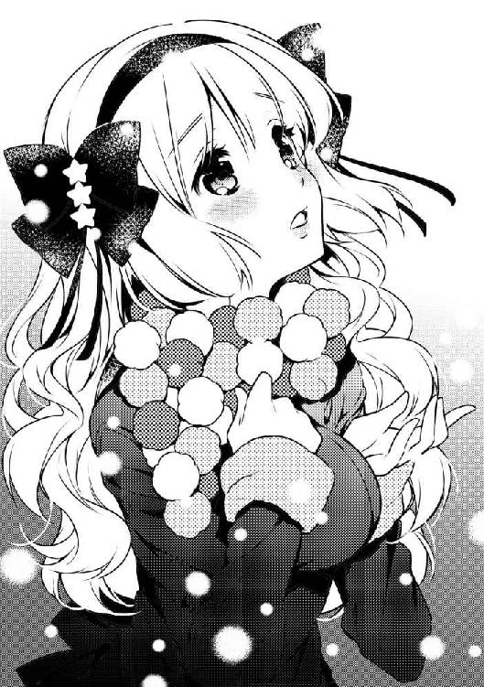
「うん――ずっと、そう言われてきたの」
美月が生まれた時――当時の天之川家の主治医は、美月が恋死病の因子を持つ可能性があることを、家族に告げた。
『恋死病録』によれば、発症者は長女に多く、また過去に遺伝病が発症した周期から、その可能性が高いとのことだった。
美月に病気の存在は伏せられたまま。
「恋をしてはいけない」――ただそのことだけは、何度も何度も、繰り返し言い含められた。
幼稚園に入る前から、男の子と遊ぶことはダメだと言われていた。
男の子のような髪型も、格好も、美月が女の子として興味を惹かれないため。
恋愛に憧れを抱かせる可能性がある本や漫画、テレビや映画の鑑賞も禁じられた。
だから美月は10年――「恋」というものを知らずに育った。
けれども、異性にかかわらずに一生生きていくことなど、現実問題として不可能でもある。
だから同時に、美月は、誰からも愛される人間であるように――と育てられた。
もし美月が誰かに恋をしてしまった時。
その相手も美月のことを愛してくれれば、恋死病が発症しても、苦しまずに済む。
より魅力的な人間であるため、淑女としての立ち振る舞いを身に付けるべく、稽古事で毎日が埋め尽くされた。
しかし――。
「わたしは、君と出会ってしまった」
トランプを探したあの日、美月の恋死病は、静かに発症した。
雨に濡れて、風邪を引いたのだと思っていた。
でも、その時を境に、ひどく体調を崩しがちになった。
胸が熱くて、苦しい。
じわじわと、少しずつ、症状は重くなっていく。
自分に何が起きているのかわからないまま、時は過ぎ――
高校の入学式で『すぎうらしゅうじ』くんを見つけた瞬間。
それが恋だったと、気がついた。
その日――美月は家に帰ると、激しい胸の痛みと共に、倒れてしまった。
美月は、恋死病が完全に発症していることを、村雨先生から告げられた。
「......怖かった。だけどね、同じくらい嬉しかったの......ああ、わたし、恋をしてたんだって。これが人を好きになるってことなんだって」
美月さんは、海に降る雪を見つめている。
「もう一度出会えて、君への想いは募るばかりだった」
「............」
「でも......伝えることが、できなかった。断られたらどうしよう、嫌われていたらどうしようって......どんどん時間が過ぎて、不安ばかりが大きくなって」
はらはらと舞う雪が、美月さんに降る。
「わたしの病気は、どんどん悪化するだけだったの。そして、あの放課後――これがわたしのラストチャンスだって、勝手に思った」
教室で一人眠りこけていた修士くん。
他には誰もいない。
告白するなら、今しかない......。
でも――やっぱり、言えなかった。
「......それで一気に病状が悪化して、死にかけちゃったってわけ」
恥ずかしそうに俯いた。
「わたしね、修士くんと出会って、恋ができて、本当に嬉しい。だから、こんなことを言っちゃダメなんだろうけど......少しだけ恋死病に、感謝してる。修士くんとまた巡り合わせてくれたんだから」
「......美月さん......」
俺は......。
俺は、何も知らなかった。
少し考えれば、想像がつくことだったのに。
美月さんは、恋をしてはいけなかった。
恋をしたら、死んでしまうから。
10年も、そうやって育って。
俺に出会って。
恋をして。
５年もかけて、俺を好きでいてくれた。
死んじゃうかもしれないのに、俺を好きになってくれたんだ。
文字通り――命を、かけて。
「ごめんね、修士くん。わたし、ものすごく重いよね。振り回してばかりで、ごめんなさい。わたしは君を縛りつけてるのかもしれない。いつか......君に嫌われても仕方ない」
美月さんは、そう言って、俺を見て――にっこりと笑った。
「でもね......もし、この恋に終わりが来たとしても、きっとわたしは、幸せな気持ちのまま死んでいける」
胸が、締めつけられるように痛んだ。
――幸せな気持ちのまま死ねる？
なんで、そんな――。
「......死んで幸せだなんて、言わないでください」
「............修士くん？」
俺は少し、怒っていた。
美月さんの言葉に？
いや、違う。
何も知らなかった自分に。
そんなことを美月さんに言わせてしまった自分にだ。
「あの......修士くんっ？」
手を取り、駆け出す。
「ちょ、ちょっと？ どこに行くの？」
「いいから」
頭痛が迸る。でもそんなの関係ない。
一気に両岸を繋いでいる橋を駆け抜けて、対岸の結婚式場へ。
さっき執り行われていた結婚式はまだ続いている。
粉雪の中、幸せそうな新郎新婦や周囲の人々が、突然やってきた俺たちを見て怪訝な顔をしていた。
かまわず俺は、美月さんの手を引いたまま、チャペルに突入した。
誰もいない教会の奥――檀上まで一気に走った。
「ど、どうしたの？ いきなり......」
美月さんは、けほっと咳き込んだ。
「美月さん......」
肩をつかんだ。
「......俺、美月さんを、幸せにします。だから......二度と、死んでもいいなんて言わないでください」
こみ上げてくる苦痛は、無理やりねじ伏せた。
そして――
「修士く......」
唇を、塞いだ。
美月さんは一度だけ体をぴくりとこわばらせ――力を抜いた。
柔らかく濡れた感触。
彼女の髪の甘い香り。
俺は、このひとが、好きだ。
失いたくない。
生きていてほしい。
笑ってほしい。
俺の気持ちを、ただ伝えたかった。
肺が発火したみたいに、熱い。
美月さんを思えば思うほど。感じれば感じるほど。
からだもこころも焼け焦げていく――。
う.........。
苦しい息の中、薄らと開いた目が映したのは、見慣れた木目柄の天井だった。
「......俺の部屋......ってか、夢オチ......？」
「修士！」
顔だけを向けると、亜矢が心配そうな顔を瞬時に綻ばせ、ほっと深い溜息をついた。
「良かった......目、覚ました......」
「亜矢？ お前、なんで？」
「なんでって、部活帰りに寄ったんだよ。そしたら、泣きじゃくった天之川さんと村雨先生がいてさぁ――」
「美月さんと村雨先生が？」
「あんたが急に倒れて、意識不明になったってね。慌てた姫君は村雨先生を呼んだんだって。車で家まで運んで......先生が言うには、過度の疲労とストレスと風邪他もろもろの合併症状だろうって。とにかく今は休んでればいいみたい」
聞きながら、俺は美月さんの姿を探していた。
「それで、美月さんは......？」
亜矢は眉間に皺を寄せた。
「......天之川さんなら、ついさっき、ドラッグストアまで栄養ドリンクとか風邪薬とか買ってくるって出てったわよ。そのうち戻ってくるんじゃない？ 村雨先生はとうの昔に帰ったけど」
「そうか......」
「なに？ そんなに姫君がいてくれないのが寂しいわけ？ いっつも一緒だもんね。付き合い出してから。ベタベタしちゃってさー」
亜矢がブーたれて言う。
ふと、唇がヒリヒリしている事に気がついた。
触れてみると、少し感覚が鈍い。キスした影響だろうか？
......そうか。
キス......したんだよな。
で、その代償がこれか......。
体にまったく力が入らない。
息は苦しいし、頭は熱っぽくてぼーっとする。
精力とか気力を根こそぎ持っていかれたような感じだ。
......早く村雨先生になんとかしてもらわないとな、これ......。
「すみませんねー、起きた時に傍にいたのが、愛する天之川さんじゃなくて」
「いや......お前も看ててくれてたんだよな。部活終わってばっかで疲れてんのに、悪い」
「ふんっ、そんなこと言われても嬉しくない」
悪態をつくなり、亜矢はいきなりベッドの上に乗っかって、手を伸ばしてきた。
「な、なんだよ」
半目でジロっと俺を見る亜矢。
「何ビビってんの。さっき熱計ってた体温計取ろうとしただけなんですけど」
「た、体温計？ あ、これか......」
「かして」
ひったくられた。
「............熱は、普通ね」
亜矢は表示されている数字を睨みながら、「うーん」と、さも納得がいかないかのように唸る。
「でも変。普通じゃない」
「変？ 何が？」
「あんたに決まってるでしょ。血吐いたり、倒れたり」
「まあ、大丈夫だって......一応、生きてるし」
「ううん、ずっと変よ。相当良くない感じがする......あたしの直感だけど」
「お前の直感なんて、アテになら......」
いつものノリでそう言うと、いきなり亜矢は俯いた。
シーツをギュッとつかんでいる。
「......おい、亜矢......？」
ぽたっぽたっと、シーツに染みが落ちた。
「どうしたんだよ、いきなり......」
「......なんでも、ない」
「んなわけねーだろ。なんで泣いてんだよ」
「うっさい......無神経にあたしを気遣わないで！」
顔を上げて、怒鳴った。
「幼馴染だからわかるの！ あんたは昔から超鈍感でバカで、いっつもだらだらやる気のない顔して、しゃきっとしてなくて......でも、正直で嘘のつけない奴なのよ！ だから、嘘ついてたらわかる！ ずっとわかってる！ 何か隠してるのは！」
亜矢は――力なく、ぽすっとシーツを叩いた。
「......だから心配なの......悪い？ ずっと一緒だったんだから、当たり前じゃん............」
亜矢は涙をごしっと拭った。
「......ごめんな」
静かに呟いた。
小さい頃から、亜矢は、俺のことをいつも気にかけてくれてる。
友達とも家族とも違う、特別な関係。
だから、俺は亜矢に確信しているものがある。
きっとこいつなら、わかってくれる――と、思う。
「......絶対に、誰にも言わないでほしいんだ......特に、美月さんには」
「修士......？」
俺の真剣な目を見て、亜矢は唇をキュッと結んだ。
洗いざらい、すべて話した。
美月さんと俺の過去。
恋死病のこと。女死病のこと。
「......そんな病気があるなんてね......」
「本当なんだ。嘘じゃない」
「......うん、信じる。......でも、あんたはそれでいいの？」
「うん？」
「修士がたとえフリでもいいから天之川さんの恋人役をしなきゃいけないのはわかった。でもあんたは天之川さんのせいで変な病気になったみたいなもんでしょ。血を吐いてぶっ倒れてそのまま死んじゃうかもしれないのに、治す方法もないなんて、そんなのヤバイじゃん！」
まあ、フリっていうか......俺も美月さんのことは好きなんだけど......さすがに照れくさくて言えねえ。
「しょうがないだろ、なっちまったもんは......それに俺はなんとか女に接触しなきゃ大丈夫だけど、美月さんを救えるのは俺しかいない。......だから、美月さんには絶対に女死病のことは知られちゃいけないんだ」
「............ん、よくわかった」
亜矢はベッドからピョコっと立ち上がると、すっきりとした笑みを浮かべた。
「――話してくれてありがとう。あたし、ずっともやもやしてたから」
「もやもや？」
「えーと......だから......って、もう七時過ぎちゃってるじゃん！ 帰らなきゃ！ お店、忙しくなってる！」
亜矢は慌ててスポーツバッグを肩に担ぎ、
「じゃ、また様子見に来る！ あ、今度ちゃんとウチに食べにきなよ。天之川さんも一緒に連れてさ」
ドアノブに手をかけた。
「ああ、さんきゅーな、亜矢」
「......あのさ......困ったら、いつでも頼っていいから..................あたし......」
「亜矢？」
「なんでもないっ！ じゃねっ！」
部屋を飛び出していった。
最近の亜矢の態度も、俺に負けず劣らずおかしいと思うんだけど。
......そういえば、美月さん、まだ帰ってこないのかな。
俺はベッドに横になったまま、目を閉じる。
美月さんが帰ってきたら、きっとまた騒がしい毎日が始まる。
――それまでもう少しだけ、寝ていよう。
◆◆◆
やばいやばい。
出前とか入ってたらどうしよう。
今日はバイトくんが休みだし、店はパパ一人になっちゃってる。絶対回しきれなくなって、イライラしてるよ～。
......でもよかったぁ。
修士はそんな事情があって、美月さんと付き合ってるフリしてるだけだったんだ。
予断を許さない状況ではあるけど、事情がわかってちょっと、ほっとした。
「って、あれ？ ブーツに何か......」
あ、そうだった。
雪が入っちゃったから、新聞紙突っ込んでおいたんだ。
「あんま乾いてないや。えーっと確か、玄関にもゴミ箱があったはず......――あれ？」
誰よ、紙袋はともかく、ビニール袋に入れたビンなんて大量に捨てたのは！ ここは燃えるゴミだけだってば！
「......って、急がねば！」
◆◆◆
「はぁああああー......」
目覚めの良い朝だった。
朝の冷たい、凛とした空気。
体調はかなり回復していた。
ちょっとダルいけど体も動くし、苦しくもない。
普段なら、美月さんの寝相の悪さに襲われて、朝っぱらから命の危機を迎えているのだが、傍らに姫君はいなかった。
きっと、朝食でも作ってくれてるのかな。
昨日、あれから俺は夢も見ずに爆睡した。
スマホを見ると、村雨先生からメールで問診があった。
返事をすると、すぐに電話がかかってきて、思いのほか、俺が元気であることに驚いていた。
確かに、聞かされていた女死病の症状では、キスをすれば生死を彷徨うって話だった。
それに比べれば、俺の症状は軽いものだったのだ。
『女死病は精神的なアレルギーだから、女子になれることができれば治る可能性はある。美月に感謝するべきだ。おそらく、あの子と身近に暮らしたことで、女子に対して少し耐性を持ったのかもしれんな』
今のまま美月さんと生活を送っていれば、いずれこの呪わしい女死病とは縁を切れるかもしれない。
そうなったら......俺と美月さんは晴れて恋人らしくアレコレなんかもできちゃうかもしれないな！
起き上がり、鼻歌混じりでリビングに赴く。
「――美月さん？」
彼女が、姿勢良く正座をしていた。
この家に来た時と同じ着物を着て、その傍らに風呂敷が置いてある。
「――おはようございます」
いつになく、よそよそしい口調だった。
「お、おはようございます。えっと、どうしたんですか？ かしこまっちゃって」
「今日でおいとましようかと思って」
「おいとま？」
「わたし、実家に帰らせていただきます」
えっ!?
「な、なんで？ 何かあったんですか!?」
美月さんはゆっくりと首を横に振った。
「それじゃ、どうして......」
「――病気、治っちゃったみたい。心の中にあるモヤモヤがスーッと消えちゃったの」
治った......？
「良かったじゃないですか！ でも、だからって別に帰らなくても......」
「治ったのはね」
美月さんは、小さく微笑んだ。
「わたしの恋が終わったからだよ」
終わった？
「君のこと、好きじゃなくなったの」
好きじゃなくなったって？ いきなり？ どうして？
「短い間だったけど、修士くんには心から感謝してる。君がわたしを愛してくれたおかげで、今も生きていられるんだもの。本当に、ありがとう。最後だけど朝ご飯は作っておいたから。食べてね。目玉焼き上手に焼けたの。それじゃ、元気でね」
まるで用意していた台詞みたいに淡々と一気に言うと、美月さんはスッと姿勢良く背を伸ばす。
それから、三つ指をついて頭を下げた。
風呂敷を抱えると、スクッと立ち上がる。
「――ま、待ってください！」
思わず俺は、美月さんの手をつかもうと、手を伸ばす。
「触らないで！」
かわされた。
まるで、触れられたくすらないと言わんばかりに。
「今までわたしのわがままに付き合ってくれて、ありがとう――さよなら」
美月さんはそう言い残し、リビングから出ていった。
さも平然と。
余韻さえ残さず。
俺は呆然と立ち尽くす。
あ、これ、俺を心配させる作戦かな？
慌ててリビングを飛び出したところで、いきなりバッと顔を出してびっくりさせちゃおう、とかそういうやつじゃないの？
でも。
――でも、本当に、戻ってこなかったら？
同時に、家の外からトランプが喚き立てた。
何かを訴えるような、鳴き声。
――まさか............
深い穴に落ちていくような絶望感。
リビングの戸を開けてみる。
いない。
「そんな......！」
玄関を飛び出すと、リムジンが、狭い路上を封鎖せんとばかりに停まっていた。
いつも美月さんを送迎していた車だ。
後部座席に美月さんが座っているのが見える。
まっすぐ真正面を向いている。
「美月さん！」
聞こえているのか、いないのか、微動だにしない。
小さく唇を動かした。
同時に動き出すリムジン。
あっという間に遠ざかっていく。
好きじゃなくなった？
つまり............俺、フラれたってこと？
なんの現実感もなかった。
俺はしばらくの間立ち尽くし――ようやく素足だったことに気がついた。
家に戻って、テーブルの上に残された、目玉焼きを見つけた。
キレイな形で、焼け具合も完璧で――でも、恋の魔法は、もうかかっていなかった。
◆◆◆
あれから三日が経った。
学校はサボっていた。
体調不良ってことにして、ずっと休んでる。
行ったところで、美月さんには、もう会えない。
急遽、都内の学校に転校したんだとか。
......何もやる気が起きない。
一日のほとんどをベッドの上で寝て過ごす日々を送っている。
ま......元から俺は、そういう奴だ。
なんにもないんだ。
そもそも、姫君たる美月さんが俺にラブラブで、しかも一緒に生活してたなんて、身分不相応な夢だったんだ。
で、あの人はその間違いに気がついた。
それだけのこと。
これで良かったのかもしれない。
恋死病は治ったわけだし。
俺の女死病はアレだけど、ぶっちゃけこの病気は、非モテである俺が、今まで通り普通に暮らしていれば、そんなに問題になることはない。
天之川の家から、たくさんお礼も貰った。
リビングに散らかっている、たくさんの包装の施された箱がそれだ。開けてないから中身は知らない。
破局という結果に終わったとはいえ、恋死病が治るまで尽力してくれたことに対する謝礼だそうだ。ウチの親のスポンサーも継続するって礼状には書いてあった。
全然結果オーライじゃないか。何も問題なんてない。みんなハッピーだ。
......俺以外は。
マジで息をするのも苦しい。
気力がゼロだ。
理由はわかりきっている。
でも、もう、どうしようもないんだ。
枕に顔を埋め――また、眠りにつく。
「お、き、ろ！」
「さぶっ！」
いきなり布団が引っペがされた。
「バッドモーニング！」
制服を纏った布団泥棒（亜矢）が、眇めた目で俺を見下ろしていた。
「亜矢か......」
やれやれと身を起こした。
むうっと頬を膨らませながら、亜矢は投げやり気味に布団を床に放った。
「布団返せ」
「だめ。寝るもん」
「体調がまだ戻らないし、だるいんだよ」
「そう言ってずっと寝てばっか！ バカじゃないの？」
「どうせ、俺バカだし」
俺はアルマジロみたいに背を丸めて、口うるさい幼馴染に背を向けた。
「修士さぁ、天之川さんが急に出てってから、ずっとこんなんじゃん......やっぱり、修士って天之川さんのこと、本当は......」
「うるせーな、だったらなんだってんだよ」
幼馴染はぐぬぬっと下唇を噛んだ。
「ああ、もう～！ とにかく、このままじゃ駄目！ 学校行くよ、学校！ 進級に響くでしょ！ ダブリたいの？」
「そうなったら、そういう運命なんだよ」
「子供みたいなこと言うなっ！ いいから行くの！ 早く着替えろ！ じゃないと、だ......」
「だ？」
「だ、抱きついてやるんだから......！」
顔を真っ赤にする亜矢。
「勝手にしろよ。そうしていただければ、学校なんか行かなくて済むし。別に俺なんか、生きてようが死んでようが......」
バッチ～ン！
頬に走る鋭い熱。
「いってえなぁ、何すん――」
「うっざあああああああああああああああああああああああああああああああああああああっ！」
蹴っ飛ばされた。
「ぐわっ！」
「そんなこと言うな！ たかがあんたは！ 失恋しただけだろーが！ そんなの人間やってりゃ、誰でも経験するんだ！ 当たり前のことなんだ！ いつまでもウジウジすんなああああああああ！」
............。
......響いた。
ぽっかりと空いた心の穴は、埋められそうにない。
だけど、ほんの少しだけ、塞ぎ込んでいた気持ちが晴れた。
うん......。
「......亜矢、お前の言うことはもっともだ。行きたくないけど、行く」
「あ、う、うん......わかればよし！」
「ところで亜矢って、失恋したことあんの？」
「お前はマジで死ね！」
もう一発殴られた。
「ほらぁ！ 早く！ もうホームルーム始まっちゃうってば！」
「ちょっと待て、紐結んでるから」
上履きにしているスニーカーの紐をいじる俺。
亜矢はその場で走る真似をして急かしてくる。
「あたし、一応入学してから無遅刻無欠席なの！ あんたのせいで記録が途絶えそうになってるのよ！」
「先に行っていいぞ、心配しなくても俺、ちゃんと行くから」
俺は立ち上がり、鞄を肩にかけながら、美月さんが使っていた下駄箱にチラッと視線を向けた。
名札は外されていた。
わかりきっていたことだったけど。
美月さんがいないことは、現実なんだって実感する。
「走るよ！ あと、三分もない！」
俺の鞄をつかんで引っ張る亜矢。
「わかったってば......」
もう、忘れよう。
美月さんは、いないんだ。
いつまでも引きずってても仕方ないんだ。
「――杉浦か」
いきなり背後から声をかけられた。
「......村雨先生......」
ガラガラと台車を運んでいる。
そこに載せられていたのは保健室にあった、美月さんの生命維持装置と思しきものだ。
そっか......美月さんの病気は治ったんだ。
もう、あんなもの必要ないしな。
でも心なしか、村雨先生の表情はやつれていた。
目元にはクマが浮かび、綺麗な黒いロングの髪はところどころ跳ねている。白衣もなんだかくたびれていた。
「――元気そうだな」
少しピリピリした声。
「......えっと、お陰様で」
「そうか」
村雨先生は左目を眇め、俺を鋭く睨んだ。
「修士、早く行こうよ」
亜矢が不安げに鞄を引っ張る。
「あ、ああ」
と頷きつつ、俺の足は止まっていた。
「あ～、そうだ。美月さんは元気ですか？」
もう俺は気にしてない。なんでもない。大丈夫。
そう自分に言い聞かせたくて、へらりと軽口を叩いた。
「ふざけるな」
「え......？」
「美月はな......！」
村雨先生はぎりっと歯を噛むと、乱暴に長い髪を払いながら、踵を返した。
「ちょっと待ってください！」
「..................」
「美月さんに、何か――」
「..................」
村雨先生は俺に視線を向けず、絞り出すように言った。
「......お前、美月に何を言った」
「え......」
「......女死病のこと、知られたんじゃないのか......!?」
「......知られた？ まさか！ そんなこと......」
「お前が美月を振ったのでなければ、そうとしか考えられん......！ でなければ、美月があんな状態になるはずがない！」
「どういうことですか!?」
冷たい予感が奔る。
「美月は、愛が成就したから恋死病は治ったなどと言い、それ以外は頑なに口を閉ざしている......おそらく無理をして元気に振る舞っていたのだろうが、今朝、倒れた。病状は――最悪だ」
呼吸が止まりそうになった。
「そ、そんな......美月さんは、俺のことがもう好きじゃなくなったって......」
「バカかっ！」
村雨先生に胸ぐらをつかまれ、グラグラと揺さぶられた。
「そんなの言い訳に決まっているだろう！ 貴様は一週間も一つ屋根の下で暮らしたのに、全然アイツという人間を理解できていない！ 最初に言ったはずだ！ 美月はそういう子なんだと！ 女死病のことを知り、お前を救うために身を引いたとしか考えられない！」
「俺は言ってない！ 話したのは、亜矢だけで――」
「あたしも言ってない！ 修士が寝込んだ日以来、天之川さんには会ってないんだから......！」
「あの時、美月さんは薬を買いに外に出てた。聞かれているはずは――」
「......あ......！」
「亜矢？」
「......帰る時、玄関のゴミ箱に......もしかして......」
亜矢の見たものを聞いて、血の気が引いた。
「......なるほど、お前たちの会話は聞かれていたと考えるのが妥当だろうな。杉浦が血を吐いたり倒れたりしていた本当の原因が女死病だと知ったなら、栄養ドリンクや市販の薬など役に立たないことがわかったはずだ。......もっとも、今更原因が知れたところで、なんの意味もないがな」
吐き捨てるように言うと、村雨先生は俺のシャツから手を放した。
体から力が抜けていく。
膝から床に落ち、俺は自分の浅はかさを呪った。
......そうだ。
口にした時点で、万が一にも聞かれている可能性はあった。
亜矢もまた、ひどく自分を責めているような顔で、呆然と立っていた。
ホームルーム開始を告げるチャイムが鳴ったが、少しも動こうとしていない。
その時。
ピピピピピピピピ！
村雨先生の携帯が鳴った。
白衣のポケットからスマホを取り出し、険しい表情で耳元に当てた。
「――村雨です。......はい、わかりました。生命維持装置を持って今すぐ向かいます。安静に寝かせてやってください」
通話を終えると、村雨先生は嘆息を零しながら俺たちを見やり、
「美月の様態が悪化した。私はできうる限りの処置を施すために天之川の屋敷に向かう」
これ以上話すことはないと言わんばかりに、背を向けた。
美月さん......
美月さんが、死ぬ？
俺を助けるために、嘘をついて――死ぬ？
「俺も行きます！ 行かせてください！」
叫んでいた。
「会ってもお前に何ができる！ 美月はお前に対する呵責のためにこうなることを選んでしまったんだぞ！」
そうだ。俺のせいだ。
村雨先生の言う通り、彼女に会ったところでどうにかできるかわからない。
いくら俺が愛を伝えても、もう受け入れてくれることは、ないかもしれない。
でも......美月さんは、まだ俺のことを......俺は、美月さんをまだ......！
「頼む、なんでもする！ 会わせてくれ！」
両手をつき、顔面を冷たい床に叩きつけた。
「修士......」
亜矢が痛ましい口調でそう呟いた。
重苦しく流れる沈黙を破ったのは、村雨先生の声だった。
「――車を用意する。ついてこい」
吐き捨てるようにそう言った。
車を降りて、屋敷までの約百メートルほどの道。
俺は村雨先生の後に続く。
「杉浦、先に話しておきたいことがある」
不意に呟き、村雨先生は白衣のポケットから小瓶を取り出した。
中には無色透明の液体が入っている。
「それは......？」
「薬だ――恋死病のな」
思わず目を瞠った。
「薬？ は？」
「昨日、完成させたんだ」
「だったら、なんで今使わないんですか？」
「......これは、恋の記憶を消す薬だ」
「は？」
一瞬、何を言ってるのかわからなかった。
「詳しい説明は省くが、抗精神薬の一種だ。これを使えば、美月は治る。だが......」
村雨先生は感情のない声で続けた。
「引き換えに、お前との思い出はすべて消滅する」
立ち止まる。
「私は何年も前に、恋死病を完治させることは困難だと結論づけていた。そこで、病気に対抗するのではなく、恋愛感情を消すことで、恋死病の発症そのものをなくすアプローチを試みていたのだ」
冷たい汗が俺の背筋を伝う。
「そして長年の研究の結果、ついに開発に成功した。これを投与すれば、脳内に直接作用し、恋愛感情及び、それに関する記憶を分解することができる」
「......それを、使うつもりなんですか？」
「いや......」
言い淀む村雨先生。
「最初はそのつもりだった。薬ができるや否や、私はすぐに天之川の屋敷を訪ね、こっそり美月に飲ませようとした。だが、できなかった......」
「............」
「美月は家に戻ってから、自分の部屋から出なかった。恋死病に苦しむ姿を家族に隠すためにな。私が赴くと、ベッドの上で、窓の外を眺めていた。そんなあの子の――感情を押し殺した顔を目の当たりにした時――急にわからなくなったんだ」
これを使えばすぐにでも楽にしてやれる。
しかし、それでいいのか。
恋の記憶を消すことが、この子のためになるんだろうか。
「その時――いや、ずっと私は心の奥底では悩んでいたのかもしれん。なんのために、何をしようとしていたのか。しかし、その答えがようやく解けたんだ」
村雨先生は自嘲気味に微笑んだ。
「お前が美月に会わせて欲しいと叫んだ――その姿を見た時に、わかった。私はただ、美月が幸せであることを望んでいる。だから、お前をここに連れてくることにした。最後に――杉浦に賭けてみてもいいのではないかと」
「村雨先生......」
「あいつは恋をすると死ぬ病気を持って生まれ、人を好きになってはいけないと言われて育てられた。しかし、お前と出会い、恋をして......そして、今もお前を愛している。だが悲しいことに、その強い想い故に、心を閉ざしてしまっている。美月の心をこじ開けてやれるとしたら、それは杉浦、お前だけ――お前の想いだけなんだ......！」
眉根を寄せ、唇を噛む村雨先生。
いつもの自信に溢れたオーラは、消えていた。
「受け取れ」
小瓶を差し出された。
「お前を美月と二人だけにする。私はすぐに駆けつけられるよう廊下で控えているが、病状はすでに予断を許さない。お前が美月の心を開き、愛を受け入れさせることができれば、それでいい。だがもし失敗した時は......お前がこれを使え」
「............」
「私は、美月の主治医でもあると同時に、友人だ。わかるな？ 言ってる意味が。美月にとって、何が最もベストなのか考えろ」
俺は瓶を受け取った。
小さく頷き、村雨先生は歩き出す。
少し待たされた後、美月さんの部屋へと赴く。
生命維持装置の設置を終えた村雨先生が襖を開けて、姿を現し――
「美月に会ってやれ」
俺の肩をそっと押した。
「――はい」
俺は彼女の部屋に足を踏み入れた。
畳が敷かれた簡素な部屋。
真ん中にぽつんと布団が敷かれている。いつかの保健室のように、周囲の機械が無機質なリズムを刻んでいた。
......やっと、会えた。
でも、不安と緊張に押しつぶされそうだ。
俺は彼女が横たわる布団まで、ゆっくり歩いていく。
「――美月さん」
膝をついて、呼びかけた声は、かすれていた。
布団が少し動く。
姫君は半分だけ顔を覗かせて、大きく目を瞠ると、顔を覆った。
「帰って」
消え入りそうな声で、呟いた。
「......聞いてください、美月さん」
「わたし、もう君のこと嫌い。大嫌い。顔、見たくない。声も聞きたくない」
「............美月さん」
予想してたことだ。
でも焦るな。
こじ開けるんだ、美月さんの心を。
「女死病のこと、隠していてごめん」
「何を言ってるのかわからないわ」
「......自分のせいだって、思ってるんですか？」
「......修士くん、わたしが君と別れたのは、それが理由だとでも思っているのかしら。悪いけど、それはないわ。単純に愛想が尽きただけだもの」
「恋死病が治ったなんて、どうして嘘をついたんですか」
「嘘なんてついてない。平気よ」
「平気なんかじゃ......！」
俺は美月さんを覆う布団を剥ぎ取った。
襦袢から覗く青白い肌。
つながれたコード。
弱々しく、苦しそうに肩で息をしている。
「治ったなら、なんでこんなに体が冷たいんですか！」
無理矢理に美月さんを抱え起こした。
「......いやっ、やめてっ！」
弱々しく抵抗する腕を引き寄せる。
抱き締めた。
と、同時に女死病が容赦なく発動する。
「ぐっ......！」
たちまち拒否反応がおこった。
体の奥底から熱を帯びた血液が這い上がってくる。
けど――耐える。
苦しい顔ひとつ、見せちゃいけない。
「や、やだ！ 何してるの！ やめてよ！」
「美月さんのためなら......」
逃れようともがく美月さん。
「美月さんのためなら、俺はどうなってもいい！ 死んでもいい！」
「..................っ！」
美月さんは俺の胸をドンと勢い良く突いた。
俺の体が畳の上を転がる。
突き飛ばされた。
「ふざけないで！ どうなったっていいわけないでしょ！ わたしのために死んでもいいなんて言わないで！」
俺はゆっくりと、片手をつきながら身を起こす。
「...............」
案の定だ。
抱き締めたこと――俺が愛を無理やりぶつけたことで、美月さんの病状は少し回復している。
そして今、美月さんは――怒っている。
怒りに震えている。
少しだけ、こじ開けた。
だから俺も、ここからは、本気で怒る。
「......お前こそ、ふざけんな......！」
怒りを吐いた。
「――っ......！」
びくりと美月さんが驚いた顔をする。
「ふざけんなつってんだよ美月！ ひとりで死んでくなんて、許さねーつってんだろうが！」
叫びながら、彼女の細い両肩を強くつかんだ。
「やだ、やめ......」
「お前、俺を死なせたくないんだろ！ 俺だって同じなんだよ！ なんでそんなこともわかんねーんだ、バカ美月！」
叫ぶ。
「な――バカってなによ！」
美月さんも叫ぶ。
「バカだからバカだって言ってんだろ！」
「――だ、だって......！」
美月さんが俯き、唇を噛んだ。
「......だって......わたしと一緒にいたら......死んじゃうかもしれないんだよ......」
震えている。
「死なねーよ！ 死んでたまるか！ 俺は、お前を、幸せにするんだよ！」
俺の目から、ボロボロと涙が溢れた。
「だからこんなくだらねー病気なんかで死なねーんだ！」
「......修士、くん......」
美月さんの顔も、ぐちゃぐちゃだった。
「美月さん......！」
力の限り、抱き締める。
もう、どこにも行ってほしくない。
笑ってほしい。
隣にいてほしい。
生きていてほしい。
「......あの時の俺は、諦めるなって言ったんでしょう......」
「......しゅうじ、くん......」
「だから勝手に......諦めないでくださいよ......」
「......しゅうじくん......しゅうじくん......しゅうじくん......！」
美月さんの涙が、俺の胸を濡らす。
胸の奥からこみあげる熱。
......ぐうっ！
咄嗟に顔を背け、口を押さえた。
脂汗が噴き出る。
苦痛に顔が歪みそうになる。
でも、耐えろ。
飲み込め。
あと、もう少しなんだ。
「......美月さん......」
よし、もう、だいじょうぶ――。
「..................」
美月さんが俺を見つめる。
俺の口から、つ、とひと筋の赤が滴った。
「......しゅうじ、くん」
姫君は、はっとして――それから、目を閉じた。
そして彼女は――
ゆっくりと、首を振った。
美月さんとの日々。
凛とした、完璧なお嬢様で姫君で。
でも俺の前では、子供っぽくて、生活力ゼロで、危なっかしくて。
俺なんかのために、いつも一生懸命で。
微笑む顔。
拗ねてむくれた顔。
頬を染めて見上げる瞳。
そのぜんぶが、俺のためにあったのに。
深呼吸を一つして、
「――わかりました」
彼女を抱き締めていた手を、ゆっくりと放した。
「最後に一つだけ、いいですか？」
「――なに？」
美月さんの瞳には、なんの感情も宿っていなかった。
心を閉ざして、すべてを押し殺していた。
「少しだけ目を閉じて、じっとしていてください。その間に俺は消えます。もう、あなたの前には現れませんから」
彼女は素直に、小さく頷いて、目を閉じた。
「..................」
ポケットに手を入れた。
ほんの一瞬だけ、迷ったあと。
俺は、強引に唇を重ねた。
こじ開けるように、強く、深く。
「――っ............」
美月さんは、驚いて目を見開く。
「...............はぁっ............」
こくりと、彼女の喉が小さく鳴った。
「――いま、なにを、のませたの？」
「......心配しないで。これで本当に全部、終わりです」
飛びそうな意識の中、俺は最後に言った。
「......俺のラブアンテナが、きゅんきゅんしてます」
俺が意識を回復したのは、あれから三日後。
村雨先生の自宅兼診療所のベッドの上だった。
あの後、二人とも気を失って倒れていたとのことだ。
村雨先生は、どことなく、ほっとした表情をしていた。
俺が生きていたことはともかく、完治とは言わないまでも、ひとまず恋死病の治療には成功したんだからな。
「軽く診察しておこう」
そう言って近づけてくる『神秘の黒曜眼』すら、心なしか柔和だった。
「――美月さんは、どうですか？」
「安心しろ。回復はお前より順調だ。来週の頭からは学校にも通えるようになるだろうな」
「学校か......」
俺も随分行ってない気がする。マジでダブりそうだ。
「東京の学校だ。全寮制のな。......うんうん、思ったより女死病の症状は軽かったようだな。良かった良かった」
「......ちゃんと、俺とのことは忘れたんですよね？」
「ああ、もちろんだ。私の薬に間違いはない。......ふむふむ、なるほど、やはりお前の耐性が少し強くなっていたのが功を奏したな。やはり美月や麦原との暮らしに効果があったのだろう」
村雨先生は一人頷きながらオフィスチェアに腰掛け、組んだ両手を宙に上げて体を伸ばした。
「杉浦、完調するまでここにいればいい。学校には天之川を通じて上手く取り計らっておいてやるし、診療代もまけてやる」
金取るつもりかよ、やれやれ。
溜息をついて寝返りを打ち、背を向けた。
......よかった。美月さん、元気なんだな。
でも遠野森からはいなくなるのか。
ま、そうだよな。俺がいたんじゃ、天之川家の人も気が気じゃないだろうし。
仮に俺と美月さんが再会したところで、また俺のことを好きになるとは思えないけど。
――と、その時。
「修士っ！」
亜矢が飛び込んできた。
「亜矢......」
「ま、麦原もお前を心配していただろうし、今回の件に無関係ではないからな。目を覚ました後、連絡しておいた」
「......修士、どう？ 大丈夫？」
「ああ......ごめん、心配かけた。でも全部、終わったんだ」
俺は亜矢に、美月さんに記憶を失くす薬を飲ませたことを話して聞かせた。
「......そんな............」
微妙な表情で俯き、言葉を失くす。
「――いいんだ、美月さんは死なずに済んだんだし」
「だって、修士は......」
亜矢はぐっと拳を握って、
「......村雨先生、ひどくないですか？ そもそも修士を巻き込んで、病気にしたのはあなたですよね？ 天才医術師だなんていっても、何も治せてないじゃないですか。それどころか......」
村雨先生を睨んだ。
「やめろよ、亜矢」
「――いや......杉浦、悪かった」
思わず目を瞠った。
まさか村雨先生が謝るとは。
「結果的に、お前だけを傷つけることになった。恨んでくれていい。悲劇をお前すべてに背負わせてしまった」
深々と頭を下げる。
「............」
亜矢も毒気を抜かれてしまったように、押し黙る。
「すべては私の未熟さが招いた結果だ。せめて女死病に関しては責任を取りたい。完治できるまで、研究は続ける」
「それは、どうも......って、村雨先生は美月さんの主治医ですよね？ 東京についていかなくてもいいんですか？」
「ああ、万が一の場合は、あの薬があるからな」
そう言って、眉間に皺を寄せた。
「......ということは、今後天之川さんが誰かを好きになっても、その度、薬を投与され続けるってことですか？」
亜矢が問う。
「その可能性はあるな。相手が美月のことを好きでなければ」
「そんな......じゃあ天之川さんは、相変わらず自由に恋愛できないってことじゃないですか」
「そういうことだ。だから恋死病とも、私はもう一度ちゃんと向き合うつもりだ」
村雨先生は立ち上がり、
「ま、杉浦は女死病が悪化したら、いつでも保健室を訪ねてこい」
「......って保健医は続けるんですか」
「なんだ？ 問題でもあるのか？」
「あ、いえ......」
「あそこにはかなり設備投資してるからな。おまけに生徒という、非常に有用な実験体で溢れている。研究には都合が良いのだ」
「だから、それ犯罪ですって」
「後遺症は絶対に残さない」
そういう問題じゃねえ。
「さ、お前はもう少し寝ていろ。麦原も帰れ」
村雨先生は椅子から立ち上がると、首と肩をパキポキ鳴らして、診察室を出ていった。
「......修士、また、来るね。欲しいものがあったら言って」
「ああ、ありがとな」
パタン、と閉まる扉。
「............」
静まり返った空気。
「――寒いなー......」
窓の外に目を向けると、あの日みたいに、粉雪が舞っていた。
「......これで、よかったんだよな」
そう呟いて。
俺は、泣いた。
体を丸めて、嗚咽した。
俺は、今も美月さんのことが好きだ。
これからも、ずっと。
いつか、別の人を好きになっても、この気持ちは、俺の中で生き続ける。
◆◆◆
三月も終わり間近のある日。
俺は河川敷を歩いていた。
手には、使い古したバットを持って。
女死病の症状は、ほとんどおさまっていた。
試しに亜矢に手を触れられてもなんともなかったし、「修士の病状を確かめるために、仕方なくやるんだからね！」と言われつつ背中から抱きつかれても、もう吐血することはなかった。
「もう、春かー......」
暖かな日差しに目を細める。
優しい風が吹いていた。
土手には、つくしの芽が見え始めていた。
季節は勝手にめぐるし、みんな、どんどん変わっていく。
遠野森高校では、美月さんを懐かしがることはあっても、その不在を気に病むような空気はすでにない。
だけど、俺は......俺だけは、取り残されてる。
視線の先に、鉄橋が現れた。
懐かしさが胸にじんわり広がる。
今日はなんとなく、あの時みたいにバットを振りたくなってやってきた。
しかし。
「......そっか。ここ、取り壊されるんだ」
土手を下りて近づいて、わかった。
傍に建てられた立札を見ると、老朽化のため解体工事をするとあった。
遊歩道から突き出た橋台の主桁は取り外されていて、橋としてはもう機能していない。
ここで、美月さんと会ったんだ。
あれが、すべての始まりだった。
もう、俺しか知らないことだ。
その場所も、もうなくなってしまうと思うと、切ない。
......はあ......俺、全然割り切れてないなー......。
と、その時だった。
「わうわうわう――ッ！」
「うごおおおおっ!?」
ドーン！
いきなり土手の上から、何かが俺に襲いかかってきた！
「ちょ、なんだ、やめ............――っ！」
土手に転がり、なす術もなくのしかかられる俺。
ベロベロベロと激しく顔中をペロられる。
白いもじゃもじゃの毛。
おまえ......！
トランプじゃねーか......！
リードは外れてる。
って、ことは......。
「......はぁっ、はあっ......やめなさい、トランプ！」
心臓が止まりそうになった。
風になびく髪を払いながら、走ってくる――。
「......美月さん......」
慌てて彼女から視線を逸らした。
でも、あの人にとって、俺は他人だ。
このまま、何事もなく、やり過ごすべきだ。
どんなに胸が痛くても。
ずっと見つめていたくても――。
「ちょっと、トランプ!?」
「わおーん！」
ドーン！
今度はトランプが美月さんに突進。
「きゃああああああああああ！」
土手を転がる美月さんが、そのまま俺にダイブしてきた！
「...............！」
思わず彼女を、抱き止めるしかなかった。
「......だ、大丈夫ですか!?」
すると。
美月さんは、俺の腕の中で、コクンと小さく頷く。
そしてなぜか、ぽっ......と、頬を赤く染めて、俯いた。
......な、なんだ？
「――へ、平気そうですね。よかったよかった。じゃ、俺は用事があるので！」
俺は何事もなかったかのように彼女から離れ、立ち去ろうとした。
「待って！」
踏み出したかけた足が、止まる。
「あの......」
ごくり、と喉をならして振り向いた。
「わたし、心の中にアンテナがあるの！」
知ってます。
「それがずっと誰かを探していて......一度も会ったことがないはずなんだけど、でも......」
「..................」
「あ......変なこと言ってごめんなさい！ でも、きゅんきゅんしてるの！ 今、狂おしく激しく......そのアンテナが......もしかして――」
「ははは、俺、そういう電波な話は、ちょっと苦手なんで」
彼女の言葉を遮り、立ち去ろうとした。
が、その時。急に俺の体にあの感覚が――。
「ごぶぁあああああああああああああああああああああああああああああああ！」
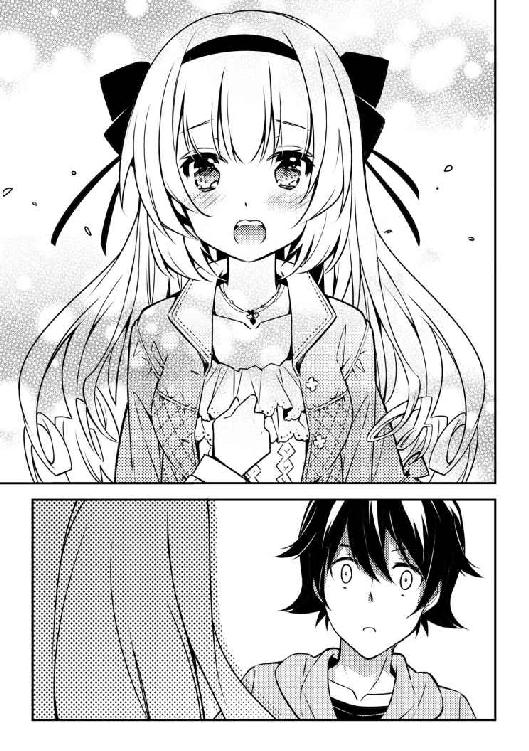
吐血。
女死病だ！ せっかく治ってたのに！
「きゃあああああ！ ちょ、ちょっと！ ええ？ き、君、大丈夫？」
うずくまる俺に駆け寄る美月さん。
優しく肩に手を当て、背中をさすってくれる。
でも、そんなことされたら......
「ぶっはああああああああああああああああっ！」
案の定、また吐血した。
「......あれ......？ なんだろう、この光景......既視感を覚える......はぁん！ ど、どうしたのかしら？ ラブアンテナがきゅんきゅんして止まらない！ む、胸が、苦し――」
――え？
弓なりに体を仰け反らせ、自分で自分を抱き締める美月さん。
「はぁああああああああああああああああああああああああああん！」
ビクッビクッと激しく痙攣する。
絶頂して崩れる姫君を、咄嗟に両腕で抱えた。
「......しゅう、じ......くん？」
――!?
美月さんが、突然......俺の名前を呟いた......。
「......あ、あれ？ わたし、何言ってるの？ そ、そんなことより、君をなんとかしないと！」
そう言って起き上がる美月さんは、すかさず俺の肩を抱いた。
「ぐはあああああああああああああああああああああああああああああ！」
三度目の吐血。
だけど、それでも嬉しい。
死ぬほど、嬉しい。
「泣くほど苦しいのね。大丈夫、安心して！ この近くにわたしの知り合いがやってる診療所があるの！ そこに連れていってあげるからっ！」
知り合いって、あの人しかいないだろ......。
「ぐはあああああああああああああああああああああああああああああああああ！」
四度目。
美月さんが俺に体を密着させているせいで、もうノンストップだ。
それでも、離れたくない。
もう、だめだ。
俺も、我慢できない。
俺のラブアンテナも、きゅんきゅんして止まらない。
――そうだ。
やりなおすんだ、ゼロから。
この先、俺は何度も、苦しむかもしれない。
でも二度と彼女に、哀しい決意をさせたりなんてしない。
だから――
「あのっ、俺！」
「――はい？」
「俺、実は、女の子に触れると血を吐くという奇病に冒されてるんです！ でも、絶対に死んだりしませんから！」
ゼロからどころじゃない。
全部、最初から、明らかにして。
マイナスから全部、やり直してやる！
「俺、めちゃくちゃ鍛えます！ だから、仮に俺のことを好きになった女の子がいたとしても、決して不幸になんてしません！」
恋死病だって、そもそも発症させなきゃいいんだろ。
最初から最後まで、俺の愛を一生、信じさせればいいんだろ。
「俺、天之川美月さんを愛してます！ この気持ちは、何があっても一生変わりません！」
「............」
言葉を詰まらせる美月さん。
顔を真っ赤にして俺を見つめる。
春の匂いの風の中を、トランプが駆け回る――。
俺と美月さんの恋は、今始まったばかりだ。
このたびは、「恋すると死んじゃう彼女に愛されすぎると俺が死ぬ」を手に取っていただき、ありがとうございます。
少しでも楽しんでいただけたら幸いです。
それにしてもこの作品が本になるまで、本当にたくさんの紆余曲折がありました。
もともと新人賞に応募した時、タイトルがありませんでした。
ワザとじゃないんです。うっかりタイトルをつけることを忘れてしまって......締切の四日前までは「あ、タイトルまだ決めてない......どうしよう」と思っていたんですけど、どういうわけか最後までスカーンと抜けてしまって、再び思い出したのは投稿翌日の朝でした。
何せ本当に締め切りギリギリで、原稿をＣＤに焼こうとしたらＰＣは止まるし、郵便ポストの回収時間は迫ってるわで、相当焦ってたんです。
あとヒロインの美月、実は応募時は「男の娘」でした。
出版にあたって、様々な方々のアドバイスを受けながら、プロットからほぼすべて作り直し、文字通り新たなヒロインとして生まれ変わらせることができました。
謝辞を。
こんな落ち着きのない人間の描いた作品を金賞に選んでくださった七月隆文先生、箕崎准先生、ありがとうございました。お二方には頭が上がりません。
七月先生には、プロット段階から何度も貴重なアドバイスをいただき、また帯にも推薦文を頂きまして、感謝しております。
未熟な原稿を導いてくれた編集のＫ井様。違うファイルを送ったり、クライマックスを貼りつけ忘れた初稿を送ったり、本当にいつも迷惑ばかりかけて、すみませんでした。
大きなヒントをくれた編集Ｗ様。あの時の助言がなければ、今の自分はなかったかもしれません。自分にとっては一生忘れられない思い出です。
コミックのお仕事などでお忙しい中、超絶可愛いイラストを描いてくださったもっつん*様。執筆中は「イラスト負けしちゃいけない！」と奮起する事ができました。
お忙しい中、一緒に書店周りをしてくださった一迅社のＹ様。お話を聞いてくださった書店員の皆様。当日、実はとても緊張していたので、挙動不審ですみません。
それから、色々と心配してくれたっぽい友人達に、学生時代の先生方。バイト先の同僚の皆様。
本当に色々な人の支えや導きがあって、この一冊ができあがっちゃいました。
そして最後に、この本を読んでくださった、皆様。
貴方様の人生が幸福の嵐に巻き込まれて、大変な事態に陥ることを祈っています。
それでは、いつかまたお会いできる日を楽しみにしています。
恋すると死んじゃう彼女に愛されすぎると俺が死ぬ
２０１５年２月１日 初版発行
著 者 西型一央
発行者 杉野庸介
発行所 株式会社一迅社
〒１６０---００２２
東京都新宿区新宿２---５---10 成信ビル８Ｆ
制 作 大日本印刷株式会社
©Ichihiro Nishigata／一迅社
本書はフィクションです。実際の人物・団体・事件などには関係ありません。
本書の内容を無断で複製、複写、放送、データ配信等することは、堅くお断りいたします。